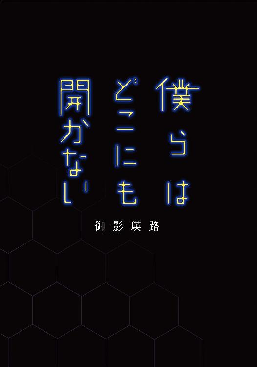
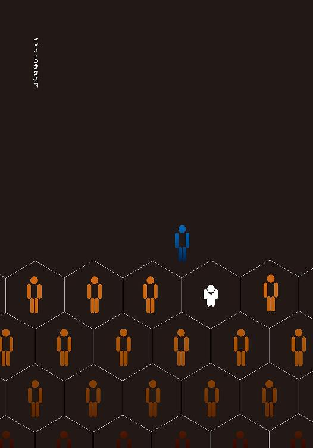
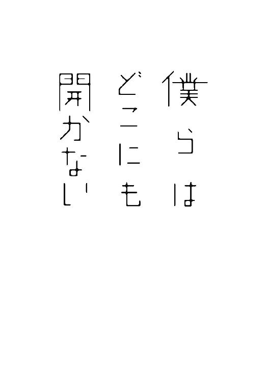
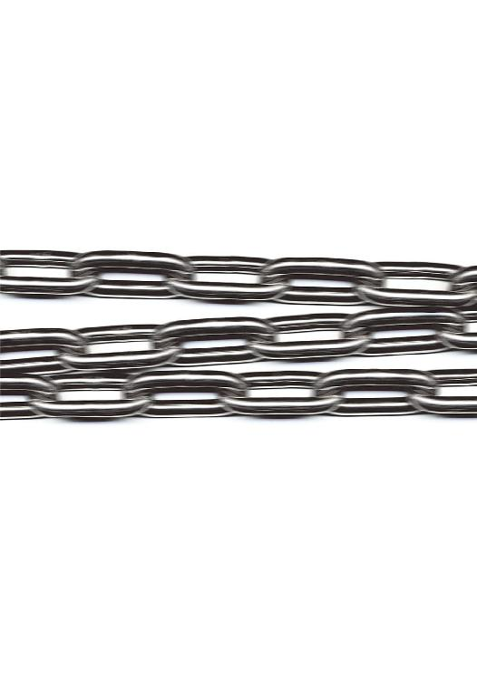
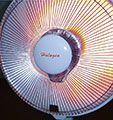

| 僕らはどこにも開かない (電撃文庫) | |
| 御影 瑛路 | |
| (2013) | |


本書（電子版）に掲載されているコンテンツ（ソフトウェア／プログラム／データ／情報を含む）の著作権およびその他の権利は、すべて株式会社ＫＡＤＯＫＡＷＡおよび正当な権利を有する第三者に帰属しています。
法律の定めがある場合または権利者の明示的な承諾がある場合を除き、これらのコンテンツを複製・転載、改変・編集、翻案・翻訳、放送・出版、公衆送信（送信可能化を含む）・再配信、販売・頒布、貸与等に使用することはできません。

柊耕太 ［Ⅰ］
「あなたはあたしが護ってあげるよ」
僕は思わず革靴を持った手を空中で静止させた。そしてそのまま意味不明な言葉をかけた、端整な顔立ちをした女の子を見つめた。
「え、と──？」
僕はその女の子の顔を確認する。後頭部高くに結わえた（ポニーテールと呼ぶにはいささか短い気がする）栗色の髪に、透き通るような白い肌。身近よりテレビの向こう側にいそうなルックス。
「あ～......いきなりこんなこと言われたら戸惑うか」
彼女は一人うんうんと頷いている。
僕はいきなり声をかけられた理由を思い巡らせてみる。普通に考えれば、自他共に認める〝平凡〟である僕とは縁のない女の子だ。
......そもそも護るって何だ？
「えっとね、あなたはね、魔法耐性がまるでないの」
反応に困って、僕が何も言わないのにも拘わらず、彼女は構わず話を続ける。僕は極度の人見知りだ。いや、雅人から言わせれば僕のは人見知りとは違うらしいが、とにかく初対面の相手は苦手だ。まだ僕は彼女に対して、どう言葉を返していいのか分からない。
そんな僕に構わず彼女は「やっぱ無自覚なんだ」とか呟いている。
魔法、耐性──
「あ──」
その〝魔法耐性〟という単語を頭の中で反芻することで、僕はようやく目の前の人物が誰だか分かった。
「あの......確か香月さん、だよね？」
「あ、うん。なんだ知ってるんだ」
僕は頷く。香月さんも僕が名前を知っていることに、何の疑問も抱いていないみたいだ。
当然だろう。彼女は有名人だ。
そりゃあそうだろう。これだけのルックスを持っている上に、これだけの異常な言動だ。無関心と言われる僕の耳にすら届くほど、彼女は噂されている。
彼女はことあるごとに〝魔法〟という単語を口にする。そればかりか、魔法というファンタジーが現実にあると完全に思いこんでいる。雅人の言葉を借りれば〝危険人物〟だ。
まぁ......雅人がよくそんなことを言えたものだと思うけど。
「それで......魔法耐性って？」
「言葉通りの意味だよ。魔法に対する耐性。魔法に対する免疫力とでも言った方が分かりやすい？」
どっちでも変わらない。
「そもそも魔法って何？」
「え？ 柊君魔法を知らないの？ テレビゲームとかやらない方？」
「いや......えーと......そういうことじゃなく」
「じゃ、どういうこと？」
「うーん......」
ファンタジーではない、この世界での魔法とはどういったものか？
そう質問しようとしたが、やめた。
この香月さんの態度がポーズではなく、しかも噂が誇張のない事実だとしたら、その言葉は危険だと思った。香月さんは魔法の存在を信じている。それは宗教を熱心に信仰している人間に、神って何、と訊くのと同じだ。冒涜と解釈されてもおかしくない。
「......じゃあさ、その魔法ってのは、誰が僕に対してかけるの？」
「誰でも魔法は使える。そして使ってるよ」
「僕は使った覚えはないけど......」
「だから無自覚なだけなんだよ。みんな魔法に対して無自覚なんだ。今の世の中じゃ、強力な魔法使いでも、その能力を自覚している人は稀みたいだし」
「そう......なんだ」
とりあえず打った相づちに、なぜか香月さんは満足げに頷く。
「うん、やっぱりあたしのにらんだとおり、柊君は魔法の才能があるな」
「......さっきは魔法耐性がないとか言ってなかったっけ？」
「そう、だからこそ魔法の才能があるの。うーん......直接の因果関係はないんだけどね。そういうタイプの人間は、魔法使いが側にいると、魔法使いになりやすいの」
「......はぁ」
思わず曖昧な返事をする。
「ま、今はあたしの言っていることも分からないと思うけど大丈夫！ 魔法使いになっちゃえばきっと分かるから」
分かるわけがない。だがとりあえず、やはり香月さんとは関わらない方が、良さそうだということは分かった。
僕はやっと革靴を落とし、履いてすぐ帰ろうとした。
「あ～、そういえばちゃんとした自己紹介がまだだった。あたしは三組の香月美紀、よろしくー」
「......よろしく」
「ほら、あなたの自己紹介は？」
「......僕は二組の柊耕太」
「よろしく、耕太君っ」
にこにこと屈託のない笑顔を浮かべながら、手を差し出す。
「............」
僕も手を差し出すと、香月さんはしっかりとその手を握った。
......魔法云々がなければ、異性はもちろん、同性にも人気者だろうに。
「......それじゃあ、香月さん」
僕はそう言って、さりげなく立ち去ろうとした。
「香月さん......？ それダメ」
「え？」
「あたしのことは、下の名前で呼ばなきゃダメ。愛称でもいいけど」
「えーと......」
「分かってないなぁ、名前ってのは呪文の一種なんだよ。名字で呼ぶと魔法が発動して、あたしと耕太君の距離は友達未満にしかなりえない。分かる？」
もちろんよく分からない。だが、香月さんがその呼び名を嫌がっていることは分かる。
「......じゃあ、美紀さん？」
「えー......」
「まだ不満？」
「まぁ......しょうがないから、ぎりぎりセーフってことで」
どうやら納得してくれたようだ。
「それじゃあ、美紀さん。僕帰るからね」
「あ、待ってよ。あたしも帰るってば」
「......え？」
「『え？』じゃなくて、あたしも一緒に帰るに決まってんでしょ。護ってあげるって言ったばっかじゃん」
「そりゃあ、普通に考えればコウに気があるに決まってるっての」
次の日の朝。前の席に座っている雅人に挨拶をし、何の気なしに昨日の香づ......美紀さんの話をすると、それを聞いた雅人はこう言った。
「でも、美紀さんは普通じゃない」
「そうかもな。あいつはおかしい。案外お前、命を狙われてるかもしれねーな」
「命って......。雅人じゃあるまいし」
「分からねーぞ？ どうにしろ、何らかの狙いはあるだろ？ それがあいつの場合は常識から逸脱している可能性が高いと言っているのさ」
雅人は愉快そうに言う。
「まぁ......それは言えてる」
「だろ？ 気を付けろよ。お前は順応しすぎるところがあるから、あいつと長く連れ添うようになると、あいつのおかしさに鈍感になる。そうなると......ヤられるぜ？」
「はいはい」
しかし雅人の言っていることは、それほど的外れとも思えなかった。
そもそも谷原雅人は頭はいい。crazyだが、poorではない。雅人の言っていることは大抵、語弊を除けばもっともなことがほとんどだ。
「あ～......人が殺してぇなー」
そして雅人の口癖。会話に間が生まれると、彼は必ずこの口癖を言う。
「しかし、噂以上に興味を湧き起こさせる人だな、香月美紀」
「案外、狂人同士だから雅人と気が合ったりしてね」
冗談半分の言葉に、雅人は表情を真剣なものにさせ答える。
「......それはないな」
「どうして？」
「まぁ......そのうち分かるさ。むしろ犬猿の仲になる可能性の方が高いだろうな」
「ふぅん......」
よくは分からないが、雅人が断言するならおそらくそうなのだろう。
──キーンコーン......
ホームルームの開始を告げるチャイムが鳴り響く。このチャイムは、普通のクラスなら役割を果たすことがほとんどできない。なぜなら結局、大抵の生徒は担任の教師が来るまで、それ以前の行動を続けているからだ。
しかし、うちのクラスの場合は違った。
「皆さん、チャイムが鳴りました。席についてください」
そう言ったのは担任の教師ではない。だがそうでなくとも、クラスメートのほとんどは、刃向かうほどの理由もないので素直に命令に従う。
「案外、あいつと俺との関係に近くなるかもしれねぇな」
その声を発した委員長、秋山秀一を指して、雅人は毒を吐く。
「委員長みたいに？ まさか......」
雅人と秋山君は仲が悪い、というよりも、お互いを嫌悪し合っている。
簡単に想像できると思うが、秋山君のように教師の手足のごとく行動する生徒に、反抗するものは多い。
その一人が雅人だった。
忘れもしない四月の二十日、だから今からちょうど一ヶ月前になる。雅人は今のようにもっともらしい指示を出している秋山君に、侮蔑をたっぷり込めた口調でこう言い放った。
『お前、最悪に気持ち悪いな』
僕はその場で凍り付いたが、むしろ驚かされたのは秋山君の反応の方だった。
『だからどうしたと言うんだい？』
秋山君は、雅人の言葉をまったく意に介さなかった。どんな人でも、それが例え耳を貸す価値もない人だと思っている人であっても、気持ち悪いなどと言われて動揺しないわけがない......と思っていた。
だが秋山君には、それがまるでなかった。
そしてその様子に雅人は『やっぱりな』と呟いて、汚物を見るような目で秋山君を一瞥し、それきり彼に対して何も言わなくなった。
そして秋山君も口にこそ出さないものの、雅人を見るその瞳に、明らかな侮蔑の色が見えるようになった。
「俺と秋山は、逆の人間なんだよ」
僕が二人の不和の始まりを思い起こしていたのが分かったのか、雅人はせせら笑うような顔をしながら言った。
「逆、と言うと？」
「鎖を望むのか、望まないのか？ ってことになるか」
「？」
「考えんな。お前が余計なことを考えると、ろくなことがない」
「なんだよそれ」
「ま、コウはせいぜい香月をうまくかわす方法だけ考えてろ」
「うわ......感じ悪ぅー」
しかし、やはり雅人の言うことは的を射ていた。
美紀さんは四時間目が終わると同時に、それこそ間髪入れずに二組の教室に上がり込んできた。
「んじゃ行こー」
唐突に言うと、返事なんて待たずに僕の手を摑み引っ張る。
「ちょ、ちょっと......」
痛いほどのクラスの視線も手伝って、僕は静止の声をかける。
「む、反抗的態度。無償でボディガードをしてるんだから、もっと謙虚になりなさい」
ぷくっと頰をふくらませ、僕の態度へ文句を言う。
「ん～......でも何の説明もしなかったのは、あたしのミスだね。中庭、中庭に行っくぞー」
また腕を引っ張る。
「な、何で中庭......？」
「弁当食うのさ、弁当」
そう言って一旦僕の手を放し、いそいそと鞄から弁当箱の入った包みを取り出し僕に突きつける。
「はぁ......」
まだ美紀さんへの対応が摑めない僕は、曖昧な返事をする。
「あ、もしかして耕太君って学食派？」
「いや、弁当はあるけど......一緒に食べる気？」
「あー！ 何その態度！ やんわり否定？ あたしみたいなブスと飯食うとまずくなるってか？」
「い、いや......美紀さんはかわいいけど......」
剣幕に押され思わず正直に答える。
すると美紀さんはほっぺを両手で押さえて、照れているような態度を取る。
「やだぁ！ ばかぁ！ うまいんだからぁ！」
今度はその手で僕の背中をばんばん叩く。どうも大げさすぎて演技っぽい。
「んじゃ行こー」
美紀さんは再び僕を引っ張る。もう反抗する気も失せ、僕は美紀さんの為すがままにされた。
その様子を横目で見ていた雅人は、冷やかしの笑みを浮かべながら手をひらひらと振っていた。
「......それでさ、一体どういう気？」
僕は芝生に腰掛けながら、不満そうな表情を作って美紀さんに不平を言う。
「だから一緒にお弁当を食べるんだって」
「そうじゃなくて、その意図だよ」
「......ああ」
美紀さんは弁当を鞄から引きずり出しながら、まるで今気付いたかのような声を出す。
「耕太君を魔法使いにするためだよ」
──またそれか......。
僕は思わずため息をつきそうになるのを何とか耐える。
「美紀さんと一緒に弁当を食べることが、魔法使いになるために必要なの？」
純粋な疑問。
「まぁ、間接的にね」
弁当を一緒に食べると、魔法使いになる。
あまりのひどい因果関係に、今度は耐えられずにため息を漏らした。
「なにそのため息は？ 信じてないでしょ？」
「あ、いや......」
「噓吐かなくていいよ。思ったことは言ってくれないと、そもそもあたしがお弁当に誘った意味がないもん」
美紀さんは唇を尖らす。
「それじゃあ言うけど......僕には美紀さんが言う魔法っていうのがどういったものか分からない。だから無条件に受け入れられない」
「────」
美紀さんは押し黙る。
「怒った？ でも事実だから......もし美紀さんがそれが許せないって言うなら、もう僕とは話さない方がいいよ」
「──なーんだ......そんなことか」
怒り出すかと思いきや、それどころか美紀さんはいつもの屈託のない笑みを浮かべた。
「はい？」
「いきなり魔法だなんだって言われて、信じる人がいるかっつの」
「......はぁ」
分かっているのなら、初対面の人間に魔法とか口にするのやめればいいのに......。
「いやあのね。もしあたしのことを嫌っちゃったのなら、どうしようもないから」
「どうして？」
「嫌っている人間の言葉を、まともに聞く気になる？ ましてや魔法云々の、いぶかしげな話をさ」
少し考えてみる。
「そりゃ聞かないよね」
「うん」
「でも、そもそも僕が魔法を信じていないのなら、魔法使いになんてなれないと思うけど？」
僕の質問に、美紀さんは笑顔で答える。
「その心配はいらないなー」
「どうして？」
「だって耕太君だもん」
すごい理屈だ。
「あたしとの信頼関係が確かなものになれば、そのときは耕太君は立派な魔法使いになっているはずだよ。そのときには自分自身で魔法から身を守れるようになるから。あたしがお弁当を誘ったのも、信頼関係を築く一環」
「ふぅん......」
それが不変の真理であるわけはない。
でも大体分かってきた。美紀さんは決していい加減なことを言っているわけではない。美紀さんの言葉には、一本の確固とした筋のようなものがあるように思う。問題点といえば、彼女なりの論理が僕らにとってちょっと珍しいということだけだ。
「じゃ、お弁当食べよう」
「そうだね」
僕は弁当の包みを開きながら思う。
だから僕はできる限り真摯に、美紀さんの言う〝魔法〟に接してあげよう。おそらく、美紀さんは善意で僕と接しているんだから。
「耕太君......谷原君って耕太君のクラスにいるよね」
僕が弁当箱のふたを開けていると、美紀さんがいきなりそんなことを言ってきた。
「え？ うん。それがどうしたの？」
「......あー、まぁいいや。なんか耕太君に言っても無駄な気がする」
「なんだそれ」
まるで雅人のような言いようだ。
「......あとさ、二年の松見さんって知ってる？」
「松見さん？ んー、どっかで聞いたことはある気もするけど......知らないと思う」
「そっか」
「その人がどうかしたの？」
「んとね、その谷原君もそうなんだけど、その人もさぁ──」
だがその美紀さんの声を遮って、
「おい！ お前ら何してる！」
という、濁声の怒声が僕たちに向けられた。
驚いて怒声の方向に振り向くと、そこには体育教師の山崎がいた。なぜか威圧的だ。
「何って......ただお弁当を食べているだけですけど......」
美紀さんが普段の明るさを押し込めて、さすがに萎縮した様子で答えた。
「男女二人っきりでか？」
意味のない質問。そんなことは状況を見れば分かるはずだ。つまりこれは、僕たちを脅すためだけの言葉だ。
僕らが黙っていると、山崎は勝手に喋り始めた。
「ふん。まぁ食事を共にするぐらいは問題ないがな、高橋と新城のことを知ってるだろう？ 学校でよろしくやって、あのバカ共は停学中だ。まったく......我が校の風格は台無しだ」
だが、言葉とは裏腹に山崎が嘆いている様子はない。その口元に浮かんでいるのは、明らかな生徒への、しかも問題の二人を指しているわけでなく、生徒全体への侮蔑の笑みだった。匿名で言わずに、わざわざ名前を出して非難するところも、僕たちへの当てつけに思える。
何か言えば山崎の心証を悪くすることは明らかなので、やはり僕らは何も言わずに黙っている。
「......ふん。まぁ今回は見逃してやるがな、もし他の生徒に悪影響があるようなら、即刻やめてもらうからな」
山崎は会話を一人で完結させると、仏頂面をしたまま去っていった。
「......何よ、悪影響って......」
完全にその姿が見えなくなると、美紀さんは頰をふくらまして呟く。
「おかしいよね、耕太君。だって中庭で一緒に食事をすることさえ制限されるなんて、どう考えても変だよ」
「まぁね」
僕は当たり障りのないよう、相づちを打っておく。でも山崎の言っていることが、理屈としておかしいのは同感だ。
だけど山崎にとっては、客観的に見て理屈として正しいかなんて、たぶんどうでもいいんだってことは黙っておく。
「............」
美紀さんは黙って僕を見ている。
「え？ 僕の顔に何か付いてる？」
「あ、いや、耕太君だなぁって」
美紀さんは少しにやついて、そんなことを言う。
「......意味が分からないんですけど」
「ホントかなぁ？ 本当はすべて分かってるんじゃないの？」
「え？」
「いや、なんでもないなんでもない。っていうか、考えちゃダメだからね！」
考えるな、なんて、また雅人みたいなことを言う。
「お弁当食べるの再開しよう？」
「あ、うん、そうだね」
頷いて卵焼きに箸をつけ始める。僕はご飯を口に運ぶ美紀さんの顔をちらりと見ながら考える。
美紀さんと雅人が似たようなことを言うのは、二人の思考回路が似ているわけでなくて、二人とも僕のことを、僕以上に理解しているからではないだろうか？
──はて、僕以上？
そんなのは当たり前だ。近所の犬だって、僕以上に僕のことを理解している。
だって僕は、僕のことを何も知らないし、知りたくもない。ただ唯一、僕が僕に興味のないことだけは知っている。
うん、どうでもいいや。
僕はそこで思考を打ち切り、また話し始めた美紀さんに適当に言葉を合わせた。
柊耕太 ［Ⅱ］
「コウと帰るのも久しぶりだな」
「まぁね」
元々雅人とは示し合わせて帰るということがなかったのだが、それでも共に帰宅部ということもあり、途中まで一緒に帰ることが多かった。一緒に帰るのが久々になったのは、他でもない美紀さんが毎日下校時も付きまとっていたからだ。
ちなみに今日は、友達のサユリさんだかと帰るらしい。美紀さん曰く、たまに女友達とも帰らないと、女子はすぐ人間関係が崩れてしまうらしい。
「そういえば、今日お前のカノジョに呼び止められたよ」
最近、雅人は冷やかしを込めて、美紀さんのことを僕のカノジョと言ってくる。
「カノジョじゃないって。それで、美紀さんがどうして雅人に？」
「聞きたいか？」
「そりゃあ気にならないわけないよ」
雅人は「さすがにそうだよな」と呟き口元を緩ませる。そしてそのままの表情で、雅人は続けた。
「『耕太君に近づかないで』だとさ」
「はい？」
「前に言ったろ？ 俺と香月は仲良くはなれねぇって。嫌われたんだよ」
そういえば美紀さんは以前、雅人のことを気にしていた節があったが......。
「美紀さんに何かしたとか？ 例えば魔法のことをバカにしたとか」
「したと言えばしたし、してないと言えばしてない」
「はぁ？」
「ま、俺が何かしたとしてもしないとしても、関係ないがな。香月は単に俺とコウが一緒にいるのが気に入らないんだよ」
嫉妬？......まさか。美紀さんは単に、僕に魔法耐性だか何だかがないせいで、僕と一緒にいるだけだ。
すると自然と答えはこうなる。
「つまり、雅人が僕を魔法使いにする上で邪魔ってこと？」
「そういうことだな」
当然のように答える雅人を見て、僕はある疑問が浮かぶ。
「ちょっと待って。雅人は美紀さんと仲良くなれないことが分かっていたんだろ？ ということは、雅人は自分が美紀さんにとっての障害になることに、気付いていたってこと？」
雅人は眉間にしわを寄せる。
「うーん......そこまで想定していたわけではないが、人生観の反りが合わないことを理解していたことは、それと同意義だったかもな」
「わざとむずかしい言い回しをする」
「そうか？ さすがにお前でも、大体意味が分かるようになってきただろ？」
「う～ん......微妙」
確かに僕は、美紀さんがいう〝魔法〟が何を指しているのかが、少しずつ分かってきていた。
英語を日本語に翻訳するのと同じように、うまいこと魔法にあたる言葉を選ぶのは難しいのだが......主に〝概念の押しつけ〟のことを指しているときが多い。催眠術のようにまがまがしい感じではなく、例えば社会通念のように、僕らにいつの間にか根付いてしまっているものも、彼女から見たら魔法の一種ということなんだと思う。つまり美紀さんの言う魔法使いは、相手の概念を自在に操れる人間なんだろう。僕に魔法の耐性がないというのは、僕の持つ概念が変容しやすいということなのかもしれない。
しかしその説明では、魔法の耐性がないことが魔法使いに向いている理由が分からないし、雅人の言葉もよく分からない。
「何ムズカシイ顔してんだよ。だからさ、お前は何も考えんなって言ってるだろ？」
「む、バカは物事を考えちゃいけないってか？」
「そういうことだ」
「......ひどいな」
雅人は僕の様子を見てけたけたと笑う。そうかと思うと、急にまじめな顔をして僕に言った。
「でも......香月の言うように、俺よりも香月に侵される方がマシかもな」
「え？ な、なんだよ犯すって？ そりゃあ男の雅人よりは、美紀さんに犯される方がマシに決まってるけど......」
「アホ」
「な、何だよ！ 雅人が言い出したことじゃ──」
だが珍しく反論した僕の言葉は、そこで打ち切られた。
「くすくす......あなたたちおもしろいねぇ」
突然の聞き慣れない女性の声。周りには僕たち以外にいなかったので、その見知らぬ上級生が僕たちに向かって喋っているのは明らかだった。
「こんにちは」
その上級生はにこにこと機嫌のいい子供のような表情をして、そう挨拶した。僕はとりあえず会釈を返す。
「知り合い？」
雅人に尋ねるが、雅人はいぶかしげな表情を浮かべて首を横に振る。
スクールバッグに付いているラインの色で上級生だと分かったが、背が低い上に童顔なので幼く見える。僕より一つ下の妹の後輩と言われても納得するほどだ。
「くすくす......やっぱりおもしろい」
上級生は一見無邪気に笑う。だが、そこに何か決定的な違和感がある。
「何か用ですか、先輩？」
雅人は露骨に威圧的な表情を見せ、尋ねる。雅人は世の中をうまく渡ろうという気がないので、誰にでも攻撃的だ。
「え～っと......用、あるかなぁ......」
上級生は雅人の威圧をまったく意に介さず、いやおそらく、ただ恐ろしく他人の感情に鈍感なのだろう、とぼけた顔をしたままとぼけた回答をした。
「えーと......僕たちの話を聞いて、『おもしろい』って言ったんですか？」
「ううん、違うよ」
甘ったるい声で答え、彼女は首を振る。甘ったるい声といっても、それはいわゆる〝ぶりっこ〟ではない。これは──
僕はようやく彼女の違和感に気付く。
この上級生は──子供だ。いや、実年齢は僕より上なんだろうけど、その仕草や口調は間違いなく子供のものだ。
無邪気、そうに見える。だが、実際僕より年上であってこの無邪気さはおかしい。少なくとも普通ではない。
「二人がおもしろいのはね、二人が放っている〝識別信号〟だよ」
上級生は無邪気に微笑む。
「......しきべつしんごう？」
僕は思わずオウム返しに聞き返す。
「そうだよ、識別信号だよ」
上級生は何の説明もしない。〝しきべつしんごう〟が、さも一般常識であるかのような口ぶりだ。
その様子を端から見ていた雅人は、怪訝そうな表情をやめ、その上級生に尋ねた。
「あんたさ、もしかして松見璃々子か？」
「あ、うん。リリコは璃々子だよ」
松見璃々子と雅人に呼ばれた上級生は、雅人が名前を知っているのにも疑問を持たずに頷いた。
「雅人、やっぱりこの人を知ってるの？」
「名前はな。有名人だよ、分かるだろ？」
「......なるほど」
確かにこの言動が自然体ならば、名前は広がってしまうだろう。
......そういえば美紀さんも『松見』という名前を言ったことがあった気がするし、たまに教室でその名前を耳にすることもある気がする。
「おもしろいなぁ、白と群青。みんな大体オレンジ色だったりするじゃない？」
松見先輩はそんなことを口にしている。僕は「はぁ」といつもの曖昧な返事をする。
「読み取っていい？」
「読み取る？」
「うん。あ、そっか。普通はスキャニングできないのかも」
「スキャニング？」
何だ？ さっきからこの人は何を言っているんだ？
「うふふ......、リリコはスキャニングできるんだよぅ～」
そう無邪気に言ったかと思うと、その表情は一変した。
「ピーガガガ、ピーピーガガガガガ」
突然の奇声。いや、そもそもこれは声なのか？ これは機械音？ でもその音は、半開きの口から発せられている。
瞳がずるずると輝きを失っていく。漆黒。何も捉えていない。だけど僕をしっかり見据えて離さない。
なんだ、これ？
「............」
ふと横を見ると、あの雅人がなんと目を見開いたまま絶句していた。
「ピーガガガ、ガーガーガピー」
次第にその音は、鼓膜ではなく骨伝導で伝わってくるかのように、内部から響き渡る。前でも後ろでも横でも上でも、つまりどこからでもなく、だけど僕を覆ったすべてからその機械音が聞こえる。
──ピーガガガ、ガガガピー。
音は僕の細胞に共鳴し始める。ひりひりと全身が震えだし、まるでやけどをしてしまったかのよう。
足が動かない。いや体全体が動かない。電線に体を縛り付けられ、電流が全身に流されて麻痺したかのような暴力的な金縛り。
電線の締め付けは増し、僕は千切れる。電線は僕の体をほじくり、解体させ、中身をまき散らす。
そしてそれをあの目が見据える。何も映さずにすべてを写す瞳。漆黒であり、純白である瞳。
「スキャニング終わり」
「あ......」
景色が戻る。いや、そもそも景色はそのままだった。変わったのは、景色を捉える自分だ。
何分経ったのか分からない。何時間とも、もしくは数日すぎたと言われても、僕は納得してしまう。
僕は普段より荒くなっている自らの息を感じて、呼吸をしていることにまず安心した。
「ふぅ......終わった」
目の前の女は、ただの無邪気な松見先輩に戻る。
「じゃあ次は......」
その瞳が雅人へと向かう。
「あ──」
雅人は驚いたことに、まだ目を見開かせていた。
松見先輩の目の色が、また徐々に白黒になっていく。
「......や、やめろ」
「ピーガ......」
「やめろぉぉぉぉぉぉぉぉ!!」
雅人は叫んだ。
荒い呼吸をし、唇を震わせている。
雅人が怯えている？ あの雅人が？
「そんな叫ばなくても、いやだって言ったらやめるよ......」
雅人を恐怖に陥らせている張本人は、相変わらず相手の感情には無頓着で、すねたようにそう言った。
「──あ、あのさ、松見先輩、さっきは何を？」
僕がおそるおそる尋ねると、松見先輩はニコリと笑って答える。
「あ、ちょっと待って、今言語化するよ」
「げ、言語化？」
松見先輩は、ぽーっと口を半開きにさせて静止する。ただ呆けているだけのように一見見えた。しかし違う。
彼女はその口を半開きにした状態から、しばらくまったく微動だにしなかった。
「柊耕太、十五歳」
松見先輩は無表情のまま、口だけ動かして機械的に喋る。ちなみに僕は、少なくとも名乗ってはいない。
「両親と妹との四人暮らし。広くも狭くもない中古物件の二階の天窓がついた部屋に住んでいる。友達は多いが親友はいない。何より距離感を大切にする。距離感を近づけたがる相手は苦手。最近異性に言い寄られている。童貞。人と話すと疲れる。とにかく自分に無関心──」
初め何を言っているか分からなかった。だけど延々と続く言葉の対象が僕を指していることに気付く。
「母親の気質を無意識で拒絶。一家を離散させないために、現状に甘んじる必要があり、確固とした自分を持てなくなる。洗脳されやすい。自らが分裂しているため、多面性を理解でき、他人の把握能力が異常。自分がないため、自分以外の──」
「あ......も、もういい！ やめて松見先輩！」
僕が慌てて大声を上げると、松見先輩がまばたきをし、そうして表情が戻り始めた。
「どうだった？ 当たってた？」
松見先輩は得意げにそんなことを言う。僕はとりあえず頷く。そうすれば松見先輩が喜ぶだろうと分かっていたからだ。
「──先輩、もう行っていいか？」
雅人は憔悴しきった様子で、松見先輩に尋ねた。
「もうちょっと......ダメ？」
「......悪いな、これから用事があるんだ」
「......そう。それじゃあしょうがないね」
雅人の言葉に松見先輩は渋々頷く。もちろんこれから特に用事はない。
「うん、それじゃあね、タニハラ君」
雅人の動きが止まる。
「......タニハラ？」
「あれ？ タニハラ君じゃないの？」
雅人は松見先輩をしばらく眺め、吐き捨てるように言う。
「......ヤハラって読むんだぜ、先輩」
「あれ？ やっぱり途中でスキャニングやめちゃったせいかな？ 柊君もさよなら」
「......さようなら」
松見先輩と別れた後も、僕たちは一言も口を利かずに歩き続けていた。
地に足がつかない。何だったんだろう、あれは？ 今までのすべてを噓に代えてもおかしくない魔法。
ふと地面に広がるコンクリートを見る。誰が当たり前のように灰色の地面を増やしたんだろう？ それは制限じゃないのか？ 本当は空を飛べるのに、この灰色の地面が人間を地に縛り付けたんじゃないのか？
そうだ。そういう制限が──彼女にはなかった。
「──コウ」
今まで普段見せない表情で押し黙っていた雅人が、僕を呼んだ。
「お前のために言っとく。もうあの痴愚とは話すな、話しかけられてもな」
「......？」
「あいつはお前に悪影響を及ぼす。分かったか？」
「あ、ああ......」
確かに不気味ではあるが、話すことぐらいは構わないと思うのだが、雅人があまりに真剣なので僕は同意した。
「......ちょっと気になることあるんだけどいいかな？ 雅人なら分かる？ あの松見先輩のスキャニングの仕組み」
雅人は真剣な目をしたまま僕を見る。
「......ちっとも」
雅人は無理矢理会話を止めた。......なるほどね。ちっとも教える気はない、ね。
僕らは黙ったまま歩き続け、赤信号に従い立ち止まった。
「......何で止まるんだ、俺たちは？」
「え？ だって赤信号じゃないか？」
「だけど車は通っていない」
僕は左右を確認する。確かに自動車の姿はない。
「......そうだな、じゃあ渡ろうか？」
「いや、渡れることを訊いたんじゃない。俺はなぜ止まったかを訊いたんだ」
「そりゃあ、赤は〝止まれ〟だからだろ」
「そうだ。それだけの理由で、俺たちは横断が可能であったのにも拘わらず止まったんだ」
僕は雅人の言葉を怪訝に思い、視線を向けた。雅人は誰に対して向けているのか、冷めた目をしていた。
「どうした？ 雅人少しおかしいぞ？ あの先輩のせいか？」
「......そうだな、いつもの俺じゃない。俺としたことがお前にこんな話をするなんてな」
こんなことを話している間に、信号は青になっていた。僕は横断歩道を渡り始める。
「雅人、行こうぜ」
信号が青に変わっても動き出さなかった雅人を促す。
「ああ......」
その雅人の表情は何とも形容し難かったが、どういうわけだか、僕にはいらだちと何かに対する嫌悪に見えた。全身に這っている大量の毛虫が、全身に卵を産み付け、それを払おうとするけれども、どんどん卵から新たな毛虫が生まれてきりがない。そんな不快感を超えた不快感を表したような顔。
そしてその表情のまま、雅人は呟いた。
「あぁ......人を殺したい」
柊耕太 ［Ⅲ］
翌日、雅人は学校に来なかった。
別にたいしたことではない。僕が知っている限りでも、雅人は理由なく二回サボっている。
だが、少し引っかかる。雅人の昨日の様子が、普段とかけ離れていたからだ。雅人は確かに普通ではないが、基本的には冷めているから感情的になりにくい。しかし昨日は、明らかに感情が表に出ていた。
人を殺したい。
......いつもの冗談だろう？
「......おはよう、耕太君」
そんなことを考えていると、背後からもうだいぶ聞き慣れた声がかけられた。
「おはよう美紀さん」
僕は思考を打ち切り、振り返って彼女に軽く手を挙げて応える。
「......今日は谷原君いないんだ」
そう呟く美紀さんの声に、いつもの張りがないことに気付いた。よくよく見るとその表情は暗い。
「......どうかしたの？」
「......え？」
「いや、なんか元気がないように見えるから」
「......そっか、そう見えるか」
そう見える？ 僕は美紀さんがそう見せていることを知っていたけれど、黙って頷いた。
「──耕太君、ちょっと一緒に中庭に来てくれる？」
「今から？」
「うん......。話、人にはあまり聞かれたくないから」
美紀さんが話を人に聞かれたくない......。美紀さんは傍若無人だ。少なくともそう見える。その美紀さんがそう言うのだ、その話の重要性は高いのだろう。
僕は神妙な面持ちを作り頷いた。
中庭は五月だというのに肌寒かった。空全体に広がる雲が、完全に太陽を覆い隠している。
「............」
美紀さんは僕をここまで呼び出しておいて、顔を俯かせたまま何も喋り出さない。
「......美紀さん、話って？」
「............」
僕が促しても、美紀さんは沈黙したままだ。僕はここで何かを言うのは間違いだと判断し、美紀さんが口を開くのを待った。
「......やっぱり、迷惑だよね？」
「え──？」
想定外の言葉。迷惑？ 何のことだ？
「分かってるよ。あたしが迷惑だってことくらい......」
「え、と──？」
つまり美紀さんは、自分が付きまとっていることが、迷惑ではないかと懸念している？
「ど、どうしたの、突然？」
そう、突然だ。昨日まで美紀さんは、そんなことを感じている様子を微塵も見せなかった。
しかし美紀さんは理由を説明せずに、そのまま話を続ける。
「どうしたら罪にならずに済むのか、あたし昨日ずっと考えてた」
わけが分からない。だけど、美紀さんの目は潤んでいる。その事実に僕は身構えた。
そう僕にとっては、美紀さんが口にしている内容より、そっちの方がはるかに重要な事象だ。
「......罪って？」
「魔法を押しつける罪だよ。そうだよね、あたし自分が特別だって知っていたくせに、耕太君にそれを無理矢理押しつけようとしてた」
そんなこと、少なくとも僕は気にしていない。
「でもね......あたし、それが罪だって分かっていてもそれでも、耕太君が狂気の魔法使いに成り下がるのは見てられない！」
美紀さんは目を潤ませたまま、強くそう言った。
僕は何も言えない。美紀さんの言っていることが、正直いまいち分からないのもある。だけどそれ以上に、こんな美紀さんにかける言葉を僕は持ち合わせていなかった。
「だからね......考えた」
美紀さんは僕の右手を取り、両手で包み込んだ。僕は驚いて美紀さんを見る。そして美紀さんは、僕が美紀さんの顔を見ることが分かっていたようで、その潤んだ瞳で覗き込んだ。
「耕太君は──」
美紀さんは言葉に詰まる。潤んだ瞳には明らかにとまどいの色が浮かんでいる。
「......僕が、何？」
美紀さんは一度目を閉じると、一度息を吐く。僕の手を包む両手の力が、少しだけ強くなる。そして開いたその目で、僕をすがるように見つめた。
「──耕太君は......あたしのこと好きになれる？」
「────え？」
あまりの脈絡のない言葉。そして信じがたい言葉。それ故にその言葉は宙に浮いていて、なかなか僕の中に入っていかない。
「──無理......なのかな？」
「あ、えっと？」
少しずつ状況を把握していく。
告白？ そんなバカな。だって美紀さんは──僕のことをただ護ろうとしているだけのはずだ。
「......あたしじゃ不服なのは分かってる」
「そ、そんなことないよ！ 美紀さんは魅力的だよ！」
思わず答えてしまった。確かに美紀さんは、ブラウン管の向こう側にいてもおかしくないほどの容姿の持ち主だ。
しかし、それは客観的視点での話だ。僕はどう思ってる？ そもそも僕が女性を好きになるとはどういうことだ？
「──じゃあ好きになれる？」
「そ、それは──」
思わず口ごもる。美紀さんがどう答えて欲しいかぐらい分かっているのに。
「......耕太君は男の子だよね」
「......？」
「......もし体が欲しいのなら、それであたしを好きになれるのなら、あたしはそれでも......いいよ」
さすがに反射的に目を見開いた。
「な、何言ってるんだよ、美紀さん！」
「じ、自分でも変なこと言ってるって分かってる！ でも......それじゃあ耕太君は、どうしたらあたしを好きになってくれるの？」
どうして？ どうして美紀さんは、そこまでして僕を好きにさせようとしてる？
それは分からない。だけど分かってる。美紀さんが自分の貞操を捨ててでも、そうしなくてはならない理由があることは分かってる。
それは僕にとって、最も重要なことだ。
「好きに、なるよ。だからもう、そんなこと言わないでよ」
美紀さんは驚いたように僕を真っ直ぐ見据えた。僕は思わず視線を、美紀さんの瞳から鼻へと逸らした。
「......それは、あたしと付き合うって解釈していいの？」
「......うん」
僕は相変わらず少しだけ俯いたまま、そう答える。
「いいの？ もう引き返せないよ？ あたしの属性になっちゃうんだよ？」
「いいよ、もうそれで」
僕の言葉に、美紀さんはみるみると表情を明るくさせる。
「ほんとに？ ほんとにいいの？」
「うん」
「やった──」
美紀さんはさっきまでの泣きそうな表情が噓みたいに消え、満面の笑みになる。僕はそれを見て、正しいことを言えたと思った。
「やったぁ！ うわぁ、ありがと耕太君！ これからもよろしくね！」
そう言って両手で包み込んでいた僕の右手を、ぶんぶんと上下に振る。
そのはしゃぎようを見て、ふと僕は思った。美紀さんは元々僕に気があったのではないか？ そして今のは変わった告白。
よく分からないが、そのよく分からないところが彼女らしいと思った。
それから数日経った。
美紀さんは今まで以上に僕に付きまとうようになったが、しかし変わったのはそれぐらいで、美紀さんの僕への接し方は変わらなかった。つまりは当然、僕の美紀さんへの接し方も相変わらずだった。
そしてやはり相変わらず、雅人は学校へ来なかった。
「それじゃ来週楽しみにしてるから」
美紀さんはいつもの分かれ道で、にこやかにそう言って手を振る。
「うん、じゃあね」
僕も手を振って、自分の帰路を歩き出す。
来週の日曜に、僕は美紀さんの家へ遊びに行くことになっていた。両親がいないとは言っていたが、僕と美紀さんの今の状態では、何か懸念するような事態はないだろう。
しかし、それにしても本当に雅人はどうしたんだろう？ 雅人のことだから突然退学してもおかしくはない。だが、そうであったとしても、前兆ぐらいはあるだろう。それとも前兆はあのときの様子にもうあったのか？ それともただ単に、雅人にとって、たかが数日学校を休むことはたいした問題じゃないだけか？
携帯電話でも持っていれば連絡を取ったかもしれないが、そもそも人との繫がりをできるだけ避けている雅人は、絶対に携帯なんて持たないだろう。
「今日はタニハラ君と一緒じゃないの？」
突然の声に僕は驚いて振り向く。
「こんにちは」
そこには幼い笑顔を浮かべている、松見璃々子がいた。
「......こんにちは。......ちなみにヤハラだよ、先輩」
「あ、そっか、そうだったよねぇ」
松見先輩は機嫌がよさそうに笑っている。
「......先輩の家もこっちの方向なの？」
その問いに先輩は首を横に振る。
「柊君とお話ししたいから追いかけてきたんだよ。でも香月さんと楽しそうにお話ししてたから、割り込まなかったの」
つまりは、後をつけてきたということか。
「やっぱり柊君の色はおもしろいなぁ......。この前よりちょっと黄色がかってるのは、香月さんのせいなのかなぁ？ やだなぁ、白のままでいて欲しいなぁ」
「......美紀さんはおもしろい色じゃないの？」
「う～ん......まったく同じ色はあまりないけど、似たような色はいっぱいいるよ。見てておもしろくな～い」
「そうなんだ......」
美紀さんが変わっている色というのなら、何となく納得ができたのだが......。やはり、松見先輩の識別信号とかいうやつの法則性は、すぐには分かりそうもない。
「ヤハラ君は？ あれからリリコ見てないよ」
「僕も見てないんだよ。それどころか、今どうしているかも分からない」
僕の言葉に松見先輩は首を傾げる。
「分からないの？ 柊君って受信へたくそ？」
「......受信？」
「うん、受信。......知らないの？」
もちろん受信の意味は知っている。ただそれが、人間でいう何の行為に当たるのかが分からない。
「リリコが調べてあげようか？ でもスキャニング途中でやめちゃったからヤハラ君の情報は少ないし、探り当てられるかなぁ？」
「そんなことできるの？」
「え？ 当たり前だよぅ～、リリコは子供じゃないもん。......もしかして、柊君できないの？」
松見先輩は、不思議そうに僕を見つめる。その〝受信〟ができないというのは、自転車に乗ることができないことと同じように思っているのかもしれない。
「えっと......いまいちコツが摑めなくてさ」
僕は当たり障りのない言葉を選び、口にする。
「あ、そうなんだ。リリコも前はあまり分からなかったから、きっと大丈夫だよ」
「う、うん......」
おそらく励ましているつもりなんだろう。
「ほら、このふよふよ漂っているやつあるでしょ？ リリコ、バカだから名前知らないけど、粒子？ 電子？ とにかくそれをいっぱい受け止めるの。そうしたらいっぱい映像が見えてくるんだよ。それぐらいは分かるよね？」
「............」
「でも、そこから欲しい映像を探すのが大変なんだよね。だからね、高いところまで飛ぶんだよ。そうすると、リリコはこの街ぐらい見渡せるんだ。その中からその欲しい情報に関係するモノ、今回はヤハラ君だね、それを見つければ、受信は完了だよ」
「......飛ぶって？」
「？ お空を飛ぶんだよ？」
松見先輩は、僕の質問の意味が分からないみたいだ。「どうやって歩けばいいの？」と訊かれても、僕がどう答えていいのか分からないのと同じ。松見先輩の世界の中で、〝飛ぶ〟という行為は、歩くことと同じくらい当たり前の行為なのだ。
「それじゃあ、受信してみるね」
そう言うと瞬時に、松見先輩のスイッチが切り替わった。
「......ジ......ジジ......ザ......ジ......」
焦点の合わない見開かれた瞳。半開きの口からノイズが漏れる。時折痙攣するように肩が小刻みに震える。
ああ、この人、壊れ出した。
僕はそう思いながら、その様子を傍観していた。僕は松見先輩の焦点の合わない瞳を見ながら、彼女の仕組みを考えた。
まず彼女を形成しているのは、僕らと同じロジックではない。まるでアボリジニーのように独自の文化を持っているみたいだ。彼女は本来ここにいない。日本という計算され尽くした国には不釣り合いな存在だ。僕には理解できない位置にいる。
だけど、それでも松見先輩のノイズは、僕の耳に届く。
意味のない音は、次第に何かの言語になる。法則性がある。「ジジジ......ザザ......ジ」という音は僕に触れてきて、中に入り込もうとする。僕はそれを理解しようとする。
そうか、だから雅人は松見先輩と話すなと言ったのか。
「......ジ......ジ............あれ？」
突然松見先輩の瞳の色が戻り、そしてその目を丸くさせる。
「どうしたの？」
「うん......なんかやっぱり受信できない。おかしいな......受信できるぐらいは情報あると思ったんだけどな......」
顔を曇らせて、そう呟く。
「リリコ、受信下手になったのかな......」
どうやら落ち込んでいるようだ。
「......そういうことってよくあることなの？」
松見先輩は首を大げさに横に振る。
「最近は全然ないよ！ ほんとだよ？ だ、だからおかしいよ！」
松見先輩は何度もやった問題をど忘れしてしまったかのように、慌てて繕う。
僕もあのスイッチの切り替わった松見先輩の様子を見て、根拠はないが失敗をしたとは思えなかった。
「先輩に原因がないとしたら？」
「え、そっか、そうだよね。受信できないのはリリコのせいじゃないかも。この短期間のうちにヤハラ君の情報が書き換えられたのかも」
「......書き換えられた？」
「うん......たまにあるよ。よく〝人が変わる〟って言うでしょ？」
「──人が変わる」
もしそれが事実だとしたら、確かに雅人が学校へ来ない理由にもなる。
するとそうなった原因は、他でもないこの松見先輩だろうか？ 確かに雅人は松見先輩によって、今までにない動揺を見せていた。それは雅人が〝変わる〟ほどであったかもしれない。
しかし、雅人が変わるとしたらどういった風に──。
『あぁ......人を殺したい』
僕の脳裏に、ただの口癖であるはずの雅人の言葉がよぎる。
「────」
......いや、早まるな！ そもそも、雅人は殺人願望を強く持っていた。それならば変わったとは言えないじゃないか。
でも、今までふよふよと漂っていただけの欲求が、確固とした形を持ってしまったのだとしたら？ それは変わったと言えるのではないか？ そもそも〝人が変わる〟とは、元々その人に備わっていなかったものが突然現れるのではなく、隠れていた備わっていたものが、表に出ることを指すのではないのか？
落ち着け......これはただの妄想だ。だけど、今の雅人の行き先を知れるなら知った方がいい。何か手がかりがあるなら知った方がいい。手がかりを知っている人は──
「ねぇ、柊君。なんかさっきから黙ってるけどどうかしたの？」
──目の前にいた。
「......先輩、前雅人をスキャニングしたときに見えた情報ってのを教えてくれない？」
「え？ いいけど......半分もスキャニングできてないよ？」
「それでもいいよ」
「分かった。それじゃ変換するね」
そう言うと静止する。瞬きもしない松見先輩の様子を見ても、僕は何も感じなくなっていた。
「タニハラマサト、十六歳」
松見先輩はまた雅人の名字を〝タニハラ〟と間違える。取り込んだデータ上では、雅人はタニハラなのかもしれない。
「両親はいるけれど干渉しない。兄弟はいない。他人は突き放す。人間を軽蔑している。幻聴に悩まされている。嫌いな人間はその音がより大きく聞こえる人間。秋山秀一が嫌い。松見璃々子からはその音が聞こえない。人を殺したいと思っている。殺したい。殺したい。殺したい。殺したい。殺したい。殺したい。殺したい。殺したい。殺したい。殺したい。殺したい。殺したい。殺したい。殺したい。殺したい。殺したい。殺したい。殺したい。殺したい。殺したい。殺したい。殺したい。殺したい。殺したい。殺したい。殺したい。殺したい。殺したい。殺したい。殺したい。殺したい。殺したい。殺したい。殺したい。殺したい。殺したい。殺したい。殺したい。殺したい。殺したい。殺したい──」
「も、もういいよ！」
松見先輩は、まるで壊れたレコーダーのように『殺したい』と繰り返し続ける。
「あ......ぁぁ...殺......殺し、ふはぅ！ あ......あぁ......」
「せ、先輩？」
松見先輩は明らかに苦しんでいる。
松見先輩の目は、機械的でもなく人間的でもなかった。
そこにある目は、ただ病んでいた。
僕には少しだけ分かった。確かに松見先輩は違うロジックでできている。しかし、所詮基盤は人間の肉体だ。無理矢理違うものを中に詰めていたら、支障が出ることは当然ある。
例えば、本来耐えられない許容外のものを詰め込んでしまった場合、とか──。
「アアアアアアアアアアアアアアアアアアアアアアアアア」
頭を抱えて、その場に倒れ込んで、エビのようにのけぞって、吐いた。
「先輩！」
松見先輩は自分のゲロの水たまりの中で、痙攣し、のたうち回る。涙腺からは黄色ばんだ液体。しばらくピクリピクリと痙攣していたが、それが次第に治まりまったく動かなくなった。まるで切り離しても命の残存で動く、トカゲの尻尾のようだった。
「せ、先輩、だ、大丈夫？」
あまりに奇っ怪な動きだったので、僕は怯えて遠くから呼びかけた。返事はない。僕は松見先輩が再び痙攣し出さないことを確認し、おそるおそる彼女に近寄る。
荒い息をしているし、脈もきちんと動いている。ひとまず安堵の吐息をついた。
僕は首を回転させて、電話ボックスが近くにあることを確認すると、そこに駆け込んで救急車を呼んだ。
週が明けても雅人は学校に来なかった。松見先輩はしばらく静養するらしいし、あれだけの情報では僕にはどうしようもない。
唯一気になったのは、松見先輩が言語化した際にあった〝秋山秀一〟の名前ぐらいだ。それでも、雅人の居場所や行動を知る手助けにはまったくならない──
──と、少なくともさっきまでは思っていた。
「......耕太君どうかした？」
美紀さんが首を傾げて尋ねる。美紀さんは最近、朝のチャイムが鳴るまで僕の隣に居座っている。
「いや......別になんでもないよ」
「そう？ なんか心ここにあらずって感じがしたんだけどなぁ」
『あぁ......人を殺したい』
秋山君はその性格通り、毎朝誰よりも早く教室にいる。僕はいつも十分前ぐらいに教室に到着しているが、常に教室に入ったときには席について一人読書や勉強をしている。
その秋山君が──まだ教室に来ていない。
......考えすぎだ。秋山君だって体調を崩すことはあるだろうし、寝坊だってするかもしれない。
その可能性なんて、あるわけがない。
「......耕太君、やっぱり上の空じゃない？」
美紀さんが少し膨れて、そう言う。
「ごめん」
「さっきからチラチラとドアを見てるし......」
指摘されて気付いた。
「......もしかして谷原君が来るか見てるの？」
「え？ あ、うん......」
半分当たりだ。
「どうしたんだろうね？ 案外盲腸にでもなってたりして。なんか病室がめちゃくちゃ似合わない人だけど」
「そうかもね」
そうだったらいい。実際病気にかかった可能性だって低くない。
だけどそれを、僕は信じられない。
『あぁ......人を殺したい』
そもそも僕は、分かっていたのだ。
それが決して雅人の冗談ではないことを──
それがただ一線を越えられない自分へのぼやきだということを──
なぜ？ 当然だろう。
だって僕は、とっくに雅人を把握している。
──キーンコーン......
チャイムが鳴る。しかし、いつもの秋山君の声はそこにはない。
「そういえば今日、ここの委員長いないね」
「......そうだね」
「あたし戻るね。今日も一日がんばろ！」
そう言って美紀さんは手を振って、自分の教室へと戻った。
対話しなければならない相手が消え、僕は自分の奥底にいる雅人を呼び出してみる。奥底にいる雅人はただにやにやと笑っている。
そしてただ、こう語る。
『あぁ......人を殺したい』
担任はなかなかやってこない。秋山君の性格からして、やむを得ず休まなければならない事情があるのなら、学校に連絡しないはずがない。
つまり担任がやってくれば、僕の不安は解消するはずなのだ。
だが、こういうときに限ってなかなかやってこない。すでにチャイムが鳴ってから十分ほど経っている。時間は暴力的に引き延ばされていて、その時間は一時間にも一日にも等しく感じた。
しかし、さらにもう十分経っても、担任は来ない。
ふと僕は気付いた。両隣のクラスが騒がしいままだ。つまり担任の教師が来ないのはうちのクラスだけではない。職員会議が長引いているのだろう。
「────」
──職員会議が長引く？ 一体何が原因で？
やっと廊下から足音が聞こえてくる。
ドアが開かれると、入ってきたのは担任だけではなく、どういうわけか校長先生も一緒だった。クラスメートが一斉に不審がる。
「えーと......今から重要な話がありますので、皆さん混乱しないで聞いてください」
校長先生が話し始める。
「たった今我が校に警察から連絡が入りまして......私も混乱しているのですが......」
僕はすでに答えを知っていた。これから何を校長先生が話すのかが、手に取るように分かっていた。
だから次に続く〝殺人事件〟という単語にクラスメートが騒ぎ出すのに、僕は加わることができなかった。
谷原雅人 ［Ⅰ］
人が殺された様子を、目の前で見たことがある。
俺がまだ幼稚園に通っていた頃のことだ。共働きの両親は家を空けることが多く、俺はお祖母ちゃんっ子だった。
その日もお祖母ちゃんと二人で留守番をしていた。お祖母ちゃんを無理矢理かくれんぼに誘い、俺は鬼の役をお祖母ちゃんに押しつけて、押入の中で声を潜めていた。びっしり布団の詰まった押入に隠れるとはまさか思わないだろうし、そこに隠れたのは初めてだったので、お祖母ちゃんは捜すのに時間がかかるだろうと小さい頃の俺は踏んでいた。実際にお祖母ちゃんはなかなか俺を見つけられず、おろおろしていた。その様子を俺は、少しだけ開けたふすまから声を殺して笑いながら覗いていた。
そのとき、突然玄関が開く音がした。
お祖母ちゃんは、俺が外に出たのかと思ったのか、玄関の方へと向かった。
それからお祖母ちゃんの「ひゃっ！」という悲鳴が上がった。
こちらに足音が近づいてくる。足音はなぜか二つ。俺は本能的に布団の中で体を丸めた。だけど、好奇心というよりはせめて様子を見ていないといけないという使命感から、俺は小さく開いたふすまから、その様子を覗いていた。
「早くしろ！」
低い男の声に、お祖母ちゃんはタンスを出し入れしだした。金か通帳だかを探していたのだろう。
しばらくしてお祖母ちゃんは、少し厚い封筒を取り出し、男に渡した。
「悪いな婆ちゃん。俺まだ捕まりたくないんだ」
そう言って男は刃物（ナイフか包丁だったか、混乱していた俺は覚えていない）を突き出した。お祖母ちゃんはその意味を理解して、恐怖でわけのわからないことを叫んだが、すぐにお祖母ちゃんは男に羽交い締めにされた。
そしてお祖母ちゃんは、叫んだ。
「助けて......助けて、まーくん！」
だけど俺は押入から出ない。出られるわけない。
「まーくん！ 助けてぇ！」
こんな状況で出て行っても何もできない。なんて考える余裕もそのときの俺にはなく、ただ『僕はまだかくれんぼ中だから、見つかるまでは出られないんだ』と自分が出ていかなくってもいい理由を作っていた。
刃物を突き入れる音。輝き。
断末魔の声。呻き。
奇妙な低い笑い声。涙。
水音。紅。
それからだった。
それから俺は、戻れなくなった。
「谷原雅人君だよね？」
俺は上履きを脱いで下駄箱に入れたところで、声をかけられた。
「......声をかける人を間違えてないか？ コウはまだ教室にいるぜ」
「はぐらかさないで」
香月美紀は真剣、というよりも少し不機嫌な様子で言い放つ。
「......なんだよ？」
と言いつつも本当は、俺は香月が何を言いたいのか大体分かっていた。
「谷原君、耕太君と仲いいよね」
「それがどうかしたか？」
「少し言いにくいことなんだけど──」
「コウと付き合うのをやめろってか？」
俺の言葉に香月は目を見開いて、絶句する。俺はその香月の予測通りの反応に興ざめして、革靴を取り出して落とした。
「あいつは魔法耐性がない。悪影響を及ぼす無自覚の魔法使いである俺が側にいると、あいつのためにならないとか、か？」
香月は目を見開いたまま、次の一言を言えないでいる。俺はそんな香月の様子をせせら笑いながら、靴を履く。
「──あ、あなた魔法を理解しているの！」
「さぁな。俺はただあんたの言葉に翻訳してやっただけだ」
俺はもう香月には視線を向けない。
「わ、分かってるんだったら、耕太君になるべく近づかないで」
──こいつ、うるさい。
「ね？ そうすれば、私の魔法を普段から浴びている耕太君は、あたしの属性になる。何にも問題なくなるでしょ？」
「死ねよ、お前」
俺は振り向き、香月を睨みつけた。
「──え？」
香月は怯えるでもなく、俺の突然の暴言が理解できずに立ちすくんでいた。
俺は呆れかえり、完全に香月への興味をなくした。
「傲慢なんだよ」
「傲慢......あたしが？」
「他に誰がいんだよ。コウを護る、だ？ 自己満足も大概にしろよ。コウを無理矢理お前の色に染めようとしているだけだろうが」
「だってそれが一番いいに──」
「決まってるのか？ 変人扱いされている分際でよく言うな」
「────」
香月は押し黙る。
「俺はな、コウのやつに関係を強要しているわけでもないし、それを特別望んでいるわけでもない。それであいつが、お前の言語を借りると俺の魔法を受けて、殺人願望にとりつかれても、それはあいつ自身の責任だ」
「それぐらい分かってる！ でも──」
「でも何だ？ 助けたいか？ ちゃんちゃらおかしいな。お前の信者にするだけだろ？」
「信者だなんて！」
「それはお前がそう考えているだけだろ？ 事実はどうだか」
「────」
香月は顔を曇らせ、俯く。
「でも心配なんてしてない。お前にはその器すらない」
「......どういう意味？」
「お前は軽蔑されて終わりってことだ。じゃあな」
もう顔を見る気すら起こらなかった。
噂から察するに、もうちょっと骨のあるやつだと思っていた。しかし違った。
香月は仲間が欲しいだけだ。自分の世界を共有できる仲間が。
なぜなら、香月は自分を特別だと感じている。つまり同じ世界を持った人間が、周りにいないことが分かっている。
それは自分の世界に自信が持てないからだ。
つまり、俺と同じ程度の女なのだ。救いを求める先にあったものが違っていただけだ。
さすがに他の人間よりも鎖は小さいが、それだけだ。俺が憧れているのは、鎖自体をまとっていない人間なのだ。
俺が鎖が見えるようになったのは、中三のときだった。
周りが高校受験やら恋愛だかで辛苦を味わっていた中で、俺は妙に冷めていた。
リストカットまで作って悩んでいるその中身は、俺にとっては、砂場で作った砂の城が崩れた崩れない程度の話に過ぎなかった。どうせ傷を作っても死ぬ気はない。俺には──死を知っている俺には、その傷はただ自分の悩みの尺度をアピールするためのものでしかないことが分かった。
そのとき俺は、あることに気付いた。完全な傍観者であり、すべてにおいて客観的であった俺には、そのことが見えた。
彼らが抱えているものは、作り物だ。
世界という濁流の中に流れている様々な情報で、張りぼてでしかない見てくれを形成し、それが誰しも正解であると信じ込んでいる。
支配されている。やつらは完璧なまでに調和された、しかし凶悪で凶暴な鎖に支配されている。
俺は次第にその鎖が見えるようになった。がちゃがちゃ音を立ててうるさい。すべての気力を奪っていく。その鎖の音を聞けば聞くほど、なにか必要なものがごっそり失われていく。カラーだかモノクロだかリアルだか画面の中だかそんなことはどうでもよくなって、ただ薄っぺらい快楽を味わうために色々なこともした。だが結局何も変わらない。俺の世界は鎖によって剥がされていく。それはもう簡単に剥落していく。
あるとき俺は気付く。
その、まるでペリペリと音を立てて剥がれ落ちそうな世界を取り戻す手段を。
それは殺人だった。
すべての事実を縮小させ、俺の世界の色を奪った根っこにあった殺人。
皮肉にもそれは、その大きさ故に、俺の手を伸ばした先にどうしても引っかかった。それ以外のものは此処からは見えなかった。
──がちゃがちゃ、がちゃがちゃ。
その音、鎖から逃げ出したくて、俺は手を伸ばす。すると、殺人願望が俺の前をちらつく。
支配されていく。殺人願望に支配されていく。
──がちゃがちゃ、がちゃがちゃ。
次第に俺は、その音が元々何の音だったか分からなくなった。
「くすくす......あなたたちおもしろいねぇ」
そう言って話しかけてきた女は、一目見たときから違うと分かった。
そうして浮かべた笑みは、この世界の流れに一切の影響を受けていない笑み。
「何か用ですか、先輩？」
この女、何者だ？ こいつも香月と同じように、コウの鎖の脆さにつけ込む人間か？
「え～っと......用、あるかなぁ......」
俺はある程度敵意を向けてそう言ったのだが、女はそんなものに一切反応しない。意識的にとぼけている感じではない。
なんだこいつ？ 俺や香月のように違うだけじゃない。そんな程度じゃない。こいつは何かが決定的に足りない。
「二人がおもしろいのはね、二人が放っている〝識別信号〟だよ」
無邪気な子供のような笑み。
なぜこんな笑みができる？ それはおそらく成長していないからだ。成長する必要がなかったからだ。
独自の言語をさも当然のように話す。それは俺や香月にないものだった。この女は救いなんて求めていない。自分の世界を疑ってなどいない。つまり女は他の人間との交流を、事実上絶っている。
そう──こいつの、密室のように閉じた世界の中で、こいつは成長する必要性がないのだ。
そういえば噂で聞いたことがある。精神病院に入院している上級生の噂。
「あんたさ、もしかして松見璃々子か？」
「あ、うん。リリコは璃々子だよ」
退院したのか......。確かに安定はしているように見える。ただ世界の見え方が、著しく常人とは違う。
「雅人、やっぱりこの人を知ってるの？」
「名前はな。有名人だよ、分かるだろ？」
松見璃々子は、自分の境目が希薄らしい。どこまでが自分というモノなのかが分からない。それ故に自らの体だけでなく、ほぼ自在に操れるものは自分自身の一部であると認識してしまう。彼女にとって手足を動かすことも、ボタンを押すことで自動的に動く電気機器も同じ一動作であり、それ故に電気機器は彼女の体と同意義だった。
想像もつかない。だがとにかく、そういう世界に彼女はいる。
「おもしろいなぁ、白と群青。みんな大体オレンジ色だったりするじゃない？」
「はぁ......」
コウは相手が松見であっても、相変わらず適当に相づちを打っている。
俺には松見が持つ言語コードの中で、その色が何を指しているかは分からない。コードが違うことしか分からない。
だがコウはどうなのか？ さすがに松見のことは摑めないだろうと俺は思う。だけど、本当にそうなのか？ 俺をわずか一ヶ月で理解できてしまったコウが、いつまでも松見を理解できないでいるとは限らない。
「読み取っていい？」
「読み取る？」
「うん。あ、そっか。普通はスキャニングできないのかも」
「スキャニング？」
コウは松見の言葉に首を傾げるばかりだ。
「うふふ......、リリコはスキャニングできるんだよぅ～」
おそらく──松見は電気機器と自分の体の境が曖昧な故に、自らも電気機器の様な役割を果たせると思っているのだ。
そして、松見の表情は一変した。
「ピーガガガ、ピーピーガガガガガ」
俺はその音を聞いただけで、俺の認識が甘かったことを悟った。こいつは電気機器の様な役割を果たせるなんて思っていない。電気機器そのもの。この瞬間、こいつはそれ以外の何物でもない。
そうだ、なぜ今まで気付かなかった？
──こいつには......鎖そのものがない。
そう理解した途端、ぐらりと世界が傾くのが分かった。世界の傾斜は、俺が変わったと感じるだけで変わる。そして元には戻らない。俺は傾いた世界に立っていることができずに、転がり落ちていく。ころころころころころころころころころ。
「ピーガガガ、ガーガーガピー」
世界を照らしている太陽の代わりにあったのは、松見璃々子の瞳だった。死んだ魚のように固定された瞳から、フォーカシングするように瞳孔が動く。
俺は転がりながら、その瞳から照らされる光を浴びる。熱い。このままじゃ溶けてしまう。
遠くから音が聞こえる。
──ピーガガガ、ガガガピー。
次第に音は近くなり、四方八方から聞こえるようになり、自分もその音を発し、世界はその音で満たされる。それ以外ない。ただフォーカシングするレンズが、宙に浮いている。
いつの間にか俺は止まったのだろう？ いや......俺はまだ転がっている。ただ転がっていることがとりとめのないことになっただけだ。この世界では、あの音とレンズ以外は何も意味がないのだから──。
「あ──」
──そして、レンズは俺へと向けられる。
「......や、やめろ」
俺の、俺の何を見る気だ！ ちっぽけな、転がることしかできない無力な俺の何を見る気だ！
「やめろぉぉぉぉぉぉぉぉ!!」
叫ぶと、宙に浮かぶレンズは消えた。一瞬世界がブラックアウトすると、俺を奇異な目で見るコウと、
「そんな叫ばなくても、いやだって言ったらやめるよ......」
当然のように俺の恐怖の感情を理解せず、ただすねている松見璃々子がそこにいた。
「──あ、あのさ、松見先輩、さっきは何を？」
「あ、ちょっと待って、今言語化するよ」
「げ、言語化？」
そして松見はまた消える。何らかの手段で得たコウの情報。それを俺たちにも分かるように変換を始める機器へと変わる。まるで二進法を文字や画像に変換するコンピューターだ。
「柊耕太、十五歳。両親と妹との四人暮らし。広くも狭くもない中古物件の二階の天窓がついた部屋に住んでいる。友達は多いが親友はいない。何より距離感を大切にする。距離感を近づけたがる相手は苦手。最近異性に言い寄られている。童貞。人と話すと疲れる。とにかく自分に無関心。母親の気質を無意識で拒絶。一家を離散させないために、現状に甘んじる必要があり、確固とした自分を持てなくなる。洗脳されやすい。自らが分裂しているため、多面性を理解でき、他人の把握能力が異常。自分がないため、自分以外の──」
「あ......も、もういい！ やめて松見先輩！」
松見はまた戻り、コウに尋ねる。
「どうだった？ 当たってた？」
コウはおざなりに頷いて、それを見た松見は意気揚々になった。
もう、限界だ。
「──先輩、もう行っていいか？」
「もうちょっと......ダメ？」
「......悪いな、これから用事があるんだ」
この場を立ち去るという用事だ。お前となんてこれ以上いられるか。
「......そう。それじゃあしょうがないね。うん、それじゃあね、タニハラ君」
俺の動きが思わず止まる。
「......タニハラ？」
「あれ？ タニハラ君じゃないの？」
俺の名前は谷原。タニハラとも読めるが、正しい読み方はヤハラだ。つまり松見は情報を漢字で取り入れていたことになる。
「......ヤハラって読むんだぜ、先輩」
「あれ？ やっぱり途中でスキャニングやめちゃったせいかな？ 柊君もさよなら」
「......さようなら」
コウは松見と別れた後、何も言わずに歩いていた。
俺はその表情を見、驚愕した。
コウは相手があの松見璃々子であっても、理解することを放棄していない。そしてコウの才能は──下手すると松見をも取り込む。
「──コウ」
コウは振り向く。
香月に侵されることはまだいい。だけど松見璃々子はダメだ。壊れているものを取り込めば、当然壊れてしまう。
「お前のために言っとく。もうあの痴愚とは話すな、話しかけられてもな」
「......？」
「あいつはお前に悪影響を及ぼす。分かったか？」
「あ、ああ......」
コウは頷く。だがコウは、例えどんなに納得していなくとも、状況に合わせて頷いてしまう男だ。その真意までは......いや、そもそもコウに真意というものがあるかどうかすら分からない。
「......ちょっと気になることあるんだけどいいかな？ 雅人なら分かる？ あの松見先輩のスキャニングの仕組み」
スキャニング──。
俺の推測では、アレの種は一つではない。
例えば名前を当てたのは、記憶をしていたからだ、と俺は考えていた。しかし、とは言っても常人の記憶の〝探り〟方ではないようだが......。いつ松見のやつが退院してきたのかは知らないが、同じ学校にいれば俺たちの名前に触れる機会はいくらでもある。俺たちは必要な情報以外は処理して忘れ去ってしまう。例えば道で行き交う人々の顔をいちいち覚えていないように。松見もそうではあると思う。しかし、例えば俺たちが突然に記憶がプレイバックされることがあるように、忘却しきっていない情報をスキャニングによって自在に引き出せることができるのだとしたら、どこかの廊下で見かけたかもしれない俺たちの名前を口にできるのではないだろうか？
そして顔と名前を結びつけたり、コウの様々な情報を引き出したのは、その記憶力、観察力、分析力によって生み出される驚異的な洞察力だ。もちろんそれは通常状態ではなく、松見がスキャニングという一種の自己催眠によって、トランス状態になったときだけ生まれるのだろう。人間の外見には、優秀な占い師ならばその人間が歩んできた人生の大方が分かるほどの情報を含んでいる。例えばあか抜けていなければ、異性との付き合いが浅いことは誰だって分かるように、コツさえ摑めば外見だけである程度その人間の情報は見えるのだ。まぁそれでも、コウの性質や家族関係はともかく、住んでいる場所まで分かるというのは、まさに超能力でしかないが......。
そして当然だが、こんなことをコウの耳に入れてもマイナスにしかならない。
だから俺は、コウの問いにこう答えた。
「......ちっとも」
コウは俺の言葉を信じていないようだった。だけど不満などおくびにも出さない。
俺たちは自然とまた沈黙し、やがて赤信号に差し掛かった。
止まる。まるで当然のように。
──聞こえてくる。あの音が聞こえてくる。
「......何で止まるんだ、俺たちは？」
俺は自分の足下を見ながら呟く。
「え？ だって赤信号じゃないか？」
「だけど車は通っていない」
俺の視線の先。そこには鎖があった。俺たちに身動きをさせないための、我が物顔の美しい鎖。
そう、俺はこの鎖が憎たらしくてしょうがない。この鎖が俺を縛り付け、世界の色彩を薄めている。
だから鎖のない人間には憧れていた。俺もそうなりたいと本気で願っていた。
だけどどうだ？ 実際目にして、俺が感じたことは──
──恐怖だけだ。
俺はあの鎖のない人間を畏怖しているのだ。怖れがある人間が、そこにたどり着けることなど絶対にない。
──がちゃがちゃ、がちゃがちゃ。
俺にまとわりついている鎖の音が、これ見よがしに響き渡る。
『決してお前は解き放たれない』
──うるさい。
『死ぬまで縛り付けられる』
──うるさい！
『でも分かっているだろう？ こんなもろい鎖を引き千切れないのは、お前に引き千切る気がないからだ』
──うるさいって言ってるだろ！
──がちゃがちゃ、がちゃがちゃ。
その音は響き続けている。
そう、この音は鎖の音。そして──殺人欲求の音だ。
──がちゃがちゃがちゃがちゃがちゃがちゃがちゃがちゃがちゃがちゃがちゃがちゃがちゃがちゃがちゃがちゃがちゃがちゃがちゃがちゃがちゃがちゃがちゃがちゃ。
思わずその音に急かされて呟く。
「あぁ......人を殺したい」
俺はコウと別れた後も、家に向かう気はなかった。俺は散策しながら、通り過ぎる人間を勘定していた。死んでも誰も泣かないやつ、生理的にいけ好かないやつ、ほっとくと他の人間に危害を加えるやつ、価値のないやつ......とにかく、殺してもいい人間はごろごろしている。だけど、だからこそ決め手がなかった。そういえば地球より人間一人の命の方が重いと言った人間は誰なのだろう？ なんてバカなやつだ。死んだ方がいい人間がこれだけ溢れかえっているというのに。
「よう、姉ちゃん」
「え？ わ、私ですか？」
俺はおしゃれなスーツを着込んだ、おそらく会社帰りのＯＬに話しかける。
「そうだよ、誰でもいいんだ。なぞなぞです。パンはパンでも食べられないパンは？」
「あ、えっとフライパン......だけど」
女はとまどいながらも律儀に答える。
「なんだお前？ 誰にフライパンと答えるように命じられたんだ？」
「え？ め、命令なんか......」
「そうだよなぁ、命令なんかされてないよなぁ？ だったらどうして誰も彼もフライパンって答えるんだ？ 語尾にパンが付いているだけなら、答えはフライパンじゃなくてＡ級戦犯でもいいだろ？」
──がちゃがちゃ、がちゃがちゃ。
ああ、うるさい。こいつの鎖は特にうるさい。得てして男より女の方が、鎖は厳つくて頑丈だ。
「なんだお前？ もしかして俺に殺されたいのか？」
「な、何を言ってるの？ あなたちょっとおかしいわよ」
──がちゃがちゃ、がちゃがちゃ。
「早く俺の前から消えろよ。そうしないと、俺はお前を殺すぜ？」
「............」
女は俺を嫌悪した顔で流し見、早足で俺の前から去る。
俺はそれを見て、どういうわけか歩くのもめんどくさくなった。途端に長時間歩き続けた疲労も現れる。家に帰るまでの距離を歩く気がしないので、俺は目にとまった公園のベンチに体を横たえた。すぐに微睡みが襲いかかり、俺の意識はなくなっていった。
谷原雅人 ［Ⅱ］
目を開くと、そこには青空があった。俺はそれを何も考えずに眺めていたが、段々と意識が目覚め、背中の痛みとともに公園で眠ったという実感が湧いてきた。
「............」
俺はまだ頭が半分しか起動していない状態だった。そのせいかもしれないが、客観的に自分を見ることができた。
昨日の俺はどうかしていた。
確かに俺の殺人願望は本物だが、自暴自棄になっていたことは、今の状況を見れば火を見るより明らかだ。
やれやれ、松見璃々子ごときでここまで自制できなくなるなんて、まだ俺も子供か......。
しかし、とは言っても完全に元に戻ることはできそうもなかった。あの状態を決して望んでいるわけではない。だが、俺の殺人願望を満たすには、あの状態でなければ不可能だということも知っていた。
この不安定なまま、俺は殺人欲求を抑えることはできそうもなかった。今までだって性欲は有り余っているのに、セックスどころかオナニーすら禁じられているようなものだったのだ。欲望の自然消滅はない。
誰かを殺すか、俺が狂うか、──未来はたった二つだけ。
──さて、俺の明日はどっちだろう？
俺は一度家に帰ることにした。今更親が何かを言うとは思えないが、痕跡を残しておかないと下手すれば捜索願でも出されかねない。それに何より金がなかった。だが、俺はその二つを同時に解決できる手段を知っている。中学時代にその手段をよく利用したからだ。俺はあの、祖母ちゃんが最後に封筒を取り出したタンスの中をあさり、封筒の中から一万円札を五枚ほど抜き取った。
しかしよくよく考えると、それを持ってどこに行けばいいのか分からなかった。昔のように遊びに行くわけではないのだ。目的地があるわけではない。ただ学校や家の中は、閉鎖的すぎていられそうもないだけだ。
しかし、学校には救いがある。俺が作り上げたイメージのおかげで、寄って欲しくない連中は寄ってこない。そして何しろコウがいる。
コウは確固とした自分というものを持っていない。本来人間は、自分がどういう人間かを自己分析し、その形に自分を当てはめ〝自分〟というものを形成する。しかし、コウはおそらくそれをまったくしない。そのせいで決まったコウの形は存在しないままなのだ。なぜそうなったのか理由は分からないが、松見璃々子のスキャニングの結果によると、家庭環境に原因があるらしい。
確かな自分が存在しないために、コウは常に相手に望まれる態度を取る。他人と接触するたびにいちいち変容する。そして常時それをやっていたコウは、他人を表面上だけでなく内面まで理解できるようになっている。香月の魔法にもすぐに馴染めるだろうし、俺の狂気に至っては、すでに理解している。下手すると松見ですら、コウは理解してしまいそうだ。
そういえば松見璃々子は、コウの色を〝白〟と喩えた。なるほど、何となく理解できる。コウは何にでも染まれる。香月はコウに無理矢理自分の色づけをすることで、俺のような悪意ある色から守ろうとおせっかいしている。何しろ〝白〟は、例え他の何色に染められても、同じ色になってしまうから。
受け入れられるのは気持ちがいい。俺はコウと接して、初めてそれを理解した。香月もそれを感じ取り、弱みにつけ込んで、コウを独占しようとしている。
だが今コウに会うと、心地よさで落ち着くより前に危険だ。俺を受け入れられるが故に、俺の殺人欲求の異常性のみが奪われ、俺が殺人を犯す可能性が高まってしまう。少年院では、間違いなく強固な鎖を押しつけられる。想像しただけで俺には耐えられない。
とりあえず、いつになるかは分からないが、落ち着くまでは無目的にふらつこう。音を消すにはさらに大きな音の中にいればいい。
俺は出かけることを決めると、精神安定剤代わりに持っているバタフライナイフをポケットに入れた。常に殺せる、その決定権はこちらにある、それを実感するだけでだいぶ心の持ちようが変わる。
今まではぎりぎりのところで使えなかったナイフ。──今の俺は、そのぎりぎりを超えないという保証はない。
俺は玄関の扉を開いた。もうここには戻らないような気がした。
気が付けば、夜になっていた。
時間というものを生かすことを俺は知らなかったが、殺すことなら俺はよく知っていた。適当に快楽を貪ればいい。物事の意味など考えない。今だけ瞬間瞬間を楽しむ。つまりは人間を堕落する。知性のある、だがその知性は障害にしかならない動物になる。そういった種類の人間は、それこそ増殖するように存在していて、見つけようとすれば簡単だった。やはり快楽を貪るためには他人が必要だ。それもその瞬間だけの関係である、クズのような人間だ。男はあまり好ましくない。動物的なあいつらは、すぐに性的な犯罪に走る。泣き叫ぶ女を抱くのは好きじゃないし、そもそもこんなバカげたことで俺は警察に捕まりたくなかった。その点女はギブアンドテイクな関係を持てる。たまに俺に依存しようとするやつもいるが、関係の継続を強制してくるやつはいなかった。抱かれている間は、どんな女も素直で純粋だった。彼女たちが進んでする話は、どれもこれも自分がいかに寂しいか、という陳腐な話だった。俺にはどうでもよかった。
「うまいね」
ゲームセンターのドラムのリズムゲームをやり終えた俺に、そういった種類の人間である女は言った。名前はなんて言ったっけ？ 聞いたけど忘れた。
「よくコレやるの？」
「まぁね、最近はそれほどでもねーけど」
まったく意味のない会話。そもそも俺たちが、意味のある会話を交わすことなんてない。
女はいわゆるギャル系の人種ではなかった。あいつらはさすがに知性がなさすぎる。女は振り向くような美人ではないが、愛嬌のある顔立ちをしていた。少し肌が荒れていて、心持ち茶色に染めている髪にはムラがある。この女に隙があることは、経験上一目で分かった。
「どこか行きたいとこある？」
「え？ うーん......特にないけど」
「じゃあ、付いてきて」
俺が引率する場所は、もちろん決まっていた。
俺がゲームセンターの自動ドアから出たそのとき、思いがけない声が聞こえてきた。
「君は......谷原君」
無視して通り過ぎればよかったのだが、俺は思わずその声に振り向いてしまった。そこにはクリアケースを持った、おそらく予備校帰りであろう秋山がいた。
秋山は瞬時に、心配そうな顔立ちを作る。
「学校に来ないで何をやってるんだ？ 友達も心配しているよ」
なんて模範的で意志のない言葉だ。心配？ 仮にコウが俺を心配していたとしても、それをお前が把握しているわけがない。
──がちゃがちゃ、がちゃがちゃ。
せっかく打ち消していたあの音が、この誰よりも強固でいかつい鎖を持つ男によって蘇ってくる。
俺は思わずポケットに手を突っ込んだ。
「こんな風に無為に時間を過ごすことが、後々後悔に繫がることぐらい、君にも分かっていることだろうに」
「なんだそれは？ お前の物差しですべてを計ろうとするなよ」
「私の物差しは、ごく一般的な物差しだよ」
「──知ってるよ、まるでイデアのような物差しだ」
そしてそれは、何よりも俺が嫌悪するものだ。
「......君は素直じゃないな。自分で正しいことが分かっていながら、それに従わない。それは子供じみていると思わないかい？」
秋山はそう言って、眼鏡のずれを直す。俺にはその眼鏡が矯正しているモノが、視覚だけではなく、秋山そのものであるように思えた。その眼鏡越しにしか世界が見えない。正しいと思える世界しか、秋山には見えない。眼鏡を外せば、ぼやけてとらえ所のない世界が広がっていることなど忘れてしまっている。
秋山の眼鏡の中の視線が俺から女へと動く。女はばつが悪そうな表情をしていた。
「その娘は......君のガールフレンドかい？ その娘も君に引きずり回されて、迷惑じゃないか」
「関係ねーだろ？ そもそも彼女じゃねーしな」
「彼女じゃない？」
秋山の表情がいささか変わる。
「ただの行きずりの女だよ。これからセックスしようと考えてたんだ、なぁ？」
「え......」
女はなんて答えていいのか分からずに戸惑う。もちろん、まったく考えていなかったということはないはずだ。だが、だからと言って抵抗なく頷ける質問でもない。肯定も否定もできない。故に戸惑う。
もちろん俺は、そう反応が返ってくることは分かり切っていた。ただ俺は秋山がこういう男女関係を嫌っているのが分かるから、当てつけに言ったのだ。
「......君は......よくもまぁ、ぬけぬけとそんなことが言えるものだね」
「うらやましいのか？」
「はぁ......君の露悪的なところにはもう慣れたよ。だけど一つだけ訊いていいかな？──君はいつもそんなことをしているのか？」
──がちゃがちゃ、がちゃがちゃ。
ああ、やばい......。うるさい。こいつの鎖はうるさすぎる。この音は鎖の音。この音は殺人欲求の音。
「それどころか、同意なんてなくたってしたりもするぜ？」
「────」
さすがにその答えには、秋山は目を見開かせる。
「──あの......私、ちょっと用事を思い出したから、帰るね」
「ああ」
女の言葉は明らかに口から出任せだったが、そもそも俺はもう女には興味を失っていた。名前も知らない女は、逃げるように去っていく。
「──谷原君」
「なんだ？」
「私は本来むやみに他人の思想に口を出したりはしたくないのだけどね、君はそういうわけにはいかないようだ」
──がちゃがちゃ、がちゃがちゃ、がちゃがちゃ、がちゃがちゃ。
その音は囁いている。
殺せ。殺せ。殺せ。殺せ。殺せ。殺せ。殺せ。殺せ。殺せ。殺せ。殺せ。殺せ。殺せ。殺せ。殺せ。殺せ。殺せ。殺せ。殺せ。殺せ。殺せ。殺せ。殺せ。殺せ。殺せ。殺せ。
殺人の向こう側には、今とは違うホンモノの世界がある。俺にはそこに行くしか道は残されていない。
こいつは、生け贄として最も適当な人間ではないか。俺が忌み嫌った鎖。それを誰よりも強力に巻き付けている人間──。
「説教か？ いいぜ。どうせなら人がいないところに行こう。──誰にも邪魔されたくない」
そう──邪魔されたくない。
ポケットに突っ込んでいる俺の手は、強くナイフの柄を摑んでいた。
俺は不景気で潰れた工場まで、秋山を案内した。元々何の工場だったのかは知らないし、興味もないが、油くさい臭いが鼻をつく場所だ。
「よくこんな場所を知っているね」
「言ったろ？ 無理矢理犯したりもするって。こういう場所を知っておく必要があんだよ」
「────」
それにしても、よくもまぁこんな場所にノコノコと付いてこれるものだ。話をするにしても、わざわざこんな場所に付いてくる必要がないことぐらい少し考えれば分かるだろうに。よっぽど今まで平和な生活をしていたんだろう。きっとこいつ、同級生がタバコを吸っているのを見ただけでショックを受けるに違いない。
「それで？ お前の説教を聞いてやるよ」
「その前に明かりをつけてくれないか？ 暗すぎて君の顔も見られない。それではあまり話をしても意味がないと思うのでね」
顔を見て話せば、俺がお前の話に心を打たれるとでも思っているのか？
「電気は止まってるからな。確か誰かがランプを置いていったと思ったが......」
俺が辺りを手さぐりで探してみると、案外すぐにそれは見つかった。スイッチを入れると、秋山の姿がぼんやりと映し出される。
「こんなところまで案内するのだから、少しは私の話を聞く気があると考えていいのかな？」
俺は思わず苦笑する。秋山は殺されることはおろか、暴行を受けることすら微塵も考えていない。
「まず訊きたい。君は今の生活のままでいいと思っているのか？」
「まさか。いつだって変えたいと思ってるぜ」
そう、今のこの瞬間も──
俺はもうすぐ変われる。それがどんな方向に向かうのかは分からない。だけど現状を維持するのだけはごめんだ。
「だったらなぜ？ 私から見て、君は決して頭の悪い人間には見えない。これは本心だ。君の努力次第で何とでもなるというのに」
「その努力で何が変わるんだ？ お前と同じように成績優秀になれば、何かが変わるというのか？」
「別に勉学に限らなくてもいい。何か自分が好きなことぐらいあるだろう？」
「そんなものないね」
「だが、それがそのうちできるかもしれない。そのとき選び取れる選択肢が少ない状況に、自分を追い込む必要はないだろう？」
「バカが。そんなことできる人間は、端からこんな風にならない」
「そうかもしれないが、そんなこと言っていては何も始まらないだろう？ 自分を見限ってはいけない」
......ダメだ。
俺は絶対にこいつとの思想の交わりはないことを確信した。どこまでも平行だ。
「その鎖。俺はそれに縛り付けられるのは、まっぴらごめんなんだよ！」
俺は叫んだ。これ以上討論する気はない。
──がちゃがちゃがちゃがちゃがちゃがちゃがちゃがちゃがちゃがちゃがちゃがちゃがちゃがちゃがちゃがちゃがちゃがちゃがちゃがちゃがちゃがちゃがちゃがちゃ。
ああ、もう我慢できない！
殺そう。もうこれ以上は聞くに堪えられない。殺そう。殺そう。こいつの肉を開いたときに、俺の明日も開けるんだ。殺そう。殺そう。殺そう。もうこんな場所はごめんだ。二度とここに戻ってくるものか。殺そう。殺そう。殺そう。殺そう。どうせ悲鳴も聞こえない。その悲鳴は俺だけに届く。その悲鳴は俺の鎖の音をかき消す。殺そう。殺そう。殺そう。殺そう。殺そう。血が飛び散る。モノクロの世界は少なくとも赤には染まってくれる。殺そう。殺そう。殺そう。殺そう。殺そう。殺そう。
「......鎖だって？ 谷原君、君は何を言ってる？」
「答えようか？ 冥土のみやげに」
「......谷原君？」
「鎖。俺たちを縛る既定概念。くだらない定義。決まり切った形成法則。その音は煩わしい。それから逃げたいといつも思っていた。逃げるための手段、それは殺人。つまりその音は、俺の殺人欲求の音と同意義」
俺はポケットからバタフライナイフを取り出す。手首を使い、刃を飛び出させた。その動作と共に俺は秋山に突っ込んでいく。
「もう俺は、ここにいなくてもいい！」
殺人に対する抵抗心はなかった。すぐに俺の手には肉の感触が伝わってきた。あまりにそれは柔らかくて、刺し込んだという実感が手にはなかった。
「──ここにいなくてもいい......か」
ポタポタと赤い液体が垂れる。そういえば不思議だ。血というのは、ずっと人間の体に流れているはずなのに、こういうときしか意識をしない。灯台もと暗し。俺たちが意識できるものはきっと限られているのではなく、そう思いこむことで限られていくのだ。
「──それだけは、私も同感だよ」
そう呟いて秋山は微笑む。その笑みには、何の感情が含まれているのだろう？ 俺はたぶん、子供が蟻の巣をほじくり返し、ひたすらそこから出てくる蟻を潰したときの笑みと同じようなものだと思った。
「君は生きる価値のない人間......いや、死ぬべき害虫だ」
抑揚もなく、秋山は言い放つ。
秋山は俺の手首を返して突き刺したナイフを胸から抜く。栓をされていた液体は、外に噴き出される。口から赤い液体が漏れだした。何を逆流するにしても、気持ちのいいものはないな、なんて思った。
抜けていく、血が、命が、俺の胸から──。
「君は確かに頭がいい。だけど私を見くびりすぎだよ。ここに連れてこられた意味を、私が分からないとでも思っているのかい？」
そうだ。それが俺の最大のミスだった。
俺は知っていたのに、忘れてしまっていた。秋山、こいつは異常者だ。誰だって大なり小なり自分が何かに縛られていることに気付く。
「ランプのスイッチを入れるときに気付くべきだったんだ。私が、君の動きを見極められるようにするためにつけさせたことに」
だが秋山はそれに気付かない。決して自分の世界を疑わない。秋山にとっての正しいことは、他の誰にとっても正しいことだと信じて疑わない。完璧すぎる優等生である秋山は、自分の行動を咎められることがなかった。そしてそれ故に、自分の行動がすべて正しいと錯覚している。
「私はとっくに君が殺人を憧憬していることを熟知していたのだよ。それから抜け出せそうもないと分かって、排除せねばならないと思っていたのだ」
秋山はこの社会で正しいと思われる思想を持っている。しかし誰にでも歯車のずれはある。それは初めは小さいずれかもしれない。本来ならそのずれを誰かが気付いて教えてあげる。だが、優等生である彼にはそのずれを指摘する人はいない。歯車は秋山が望む方向にずれていく。そしてそのずれが致命的になったときに、他の誰かが気付き指摘しても、もう彼はその意見を聞き入れなくなっている。
唯我独尊。秋山ほどその言葉が似合う人間がいないことを、俺は理解していたはずなのに。
「ひとつだけ冥土のみやげに教えてあげるよ。殺人をすることで、世界は変わるのか？ 君がずっと求めていた答えだよ」
視界が消失し始める。中身が抜けているせいで、妙に寒い。
「答え。変わらない。悪いね、参考にならなかった。だって君は害虫だから。ゴキブリを殺すとき持つ感情は？ せいぜい気持ち悪いってだけだ」
もう世界に音もなくなってきた。ちょうどいい、秋山の戯れ言をもう聞かないで済む。
すべてが土砂で埋め尽くされ、俺は〝無〟の中へと墜ちた。最後にできることは、思考することだけだった。
仮に、秋山を俺の予定通り殺すことができたならば──
「────」
──きっと世界は変わらなかった。ただ目の前に屍が転がるだけだった。そして俺は、最後の救いも失い、狂うのだ。
そう考えれば、この結末も悪くないかもしれない──。
しかし俺は思っていた。もし俺が何かの弾みで生き延びたとしたら、俺は間違いなく秋山を殺す。
それは世界を変えるためではない。
それは憎しみの感情にまかせた、最も陳腐でくだらない殺人だった。
──がちゃがちゃ、がちゃがちゃ。
聞こえる。もう何も聞こえないはずの耳から聞こえる。
知っていた。本当はとっくに知っていた。耳障りに鳴っていたあの音は、他人のものでなく──
──いつだって、俺に巻き付いているこの鎖の音だった。
香月美紀 ［Ⅰ］
朝の騒がしい教室の中、あたしは時折何もないところに視線を泳がす耕太君と話していた。
谷原君が死んでから約二週間たった。
殺人という大きな事件は、当然学校に波紋を及ぼした。しかし、その波紋が続いたのはせいぜい一週間だった。元々谷原君は不良生徒と認識されていて、耕太君以外にろくに話さない、いわば〝特別〟な生徒だった。〝特別な人間〟が〝特別な事件〟に巻き込まれた。その認識は、たとえ事件が身近で起こっていても関心を薄れさせるのに十分だ。例えば暴力団員が殺されても、大抵の人は興味がないように。
谷原雅人殺害の波紋は、すでにほとんど収まり、学校は一つの歯車が抜けたことなど忘れたかのように正常に動いていた。
だけど、例外はいる。
ただ一人、谷原君の友達であった耕太君は、何か特別な感情に囚われているみたいだ。
「犯人見つからないね」
せめてあたしだけでも、谷原君の死に感傷があると思わせる口調で、そう言った。
「うん」
耕太君は、きっとあたしの〝見せかけ〟になんて気付いているんだろうけど、頷いた。
......正直なところ、あたしは谷原君が死んだところで、悲しくはない。谷原君とは親しいわけじゃなかったし、それどころか耕太君にとって良からぬ存在であったために、どっかに消えてしまえと内心思っていた。殺されてしまったことはかわいそうだとは思う。だけど、それだけだ。
そしておそらく、あたし以外の人たちも悲しんでいなかった。あたしの見る限り、谷原君の両親さえもそうだった。誰も彼もあたしより数十倍下手な建前上の悲しさを、表情に出していただけに見えた。
耕太君もそのことに気付き、ショックを受けているようだ。表面上にはあまりそんな様子は見せない。もしかして自覚がないかもしれない。
「耕太君」
「......ん？」
反応するまでに少し時間がかかる。おそらく谷原君のことを考えていたのだろう。
「......耕太君、あのね、言おうかどうか迷ったんだけど......」
「うん、何？」
「あたしね、正直、もう耕太君に谷原君のことを考えて欲しくない」
「......どうして？」
当然の質問だろう。
あたしは、最も耕太君の注意を引く言葉を考える。
「......危険、かもしれない」
耕太君は当然驚いた表情で、あたしを見た。
「危険？ 何が？」
あたしにもよく分からない。だけど、実際耕太君の様子は、刻々と変わってきているのは間違いない。そしてその原因は、疑う余地なく谷原雅人にある。
死者は、死ぬ寸前に〝融合〟の魔法を使うことがある。よく『故人の遺志を継ぐ』ということがあるが、それのことだ。死にゆく者の前で、人間は無防備になる。何もかもを赦してしまい抵抗力をなくす。死者の意志を無条件に受け入れてしまい、そして〝融合〟する。もしかしたら、それも性欲と同じような、子孫繁栄のためのシステムかもしれない。
「あたしも、よく分からないけど──」
とにかく、谷原君は死んで、耕太君に何かを遺した。その何かはまだどんなものか分からないけれど、なんと言っても相手は谷原君だ。それが危険なものである可能性は十分にある。
ただ確実に変わったこと──
「──最近、あたしの魔法の効力が、弱まってる」
それは耕太君の魔法耐性が強まっているということだ。まったくの無属性であるはずの耕太君は、他の属性へ変わることで、あたしの魔法を受け入れにくくなっている。そしてその属性は言うまでもなく、谷原雅人のものだ。
どう転がるかは分からない。都合良い部分だけ谷原君の魔法を吸収してくれれば問題ないかもしれない。しかし、なんといっても耕太君だ。自分に無頓着である耕太君は、自分への変化に気付かない上に、善悪すら考慮しない。
このままでは最悪、耕太君は谷原君のような強力で邪悪な魔法使いになってしまう......。
──キーンコーン......
「皆さん、チャイムが鳴りました。席についてください」
チャイムと同時に、このクラスの委員長の呼びかけが教室に響く。
あたしは何とか谷原君の魔法のことを伝えようとするが、耕太君にも伝わる言葉がなかなか思い浮かばない。
ふと、委員長があたしに視線を向けていることに気付いた。早く教室を出ろ、と言っているように見える。あたしは今、谷原君の魔法のことを伝えるのを諦めた。
「......あのさ、今度の日曜にうちに来ることになってるよね？」
そのときまでになんとか解決方法を考えよう。焦ることはない。相手は強力と言っても死者だ。これ以上続けて魔力を浴びせることはない。自分の家、つまり自分の領域であれば、手段はいくつかあるはずだ。
「絶対来てよね」
「......うん、分かった」
「じゃあね、バイバイ」
あたしはなるべくかわいく笑って手を振りながら、早速解決手段を考えていた。
あたしは黒板を睨み付けるふりをしながら、耕太君のことを考える。もっと詳しく耕太君のことを分析する必要がある。そして耕太君に最も適切な魔法をかけ、救わなければならない。
まず、本来の柊耕太という人間を改めて分析しよう。
耕太君は魔法耐性が弱い。魔法耐性が弱いというのは、つまり相手の魔法を抵抗なく受け入れてしまうことだ。その原因はどうやら、耕太君自身が自らの属性を持とうとしないことにあるようだ。耕太君は常に瞬間瞬間で属性を変え、やり過ごす。そういった人間は決して少なくはない。かくいうあたしも、昔はそれだった。
しかし、それでも大抵は、自らの持っている確固とした属性を崩すことなく対応している。表面上は相手に合わせていても、確固とした属性の中で受け入れられないことは、奥底できちんと否定している。
しかし、耕太君にはそれがない。表面上だけでなく、奥底でも相手を容認してしまう。
そしてあたしが最も恐れているのは、その容認してしまった属性を、定着させてしまうことだ。
今までそれがなかったのだから、安心できるようにも思える。だがあたしには、むしろ今まで属性を定着させなかったことが奇跡的だったと考えている。その証拠に、耕太君はあたしの属性にきちんと染まり始めていた。
基本的には家庭環境で属性が決まるものだ。幼い頃に、家族によって基盤となる属性が作られるはずなのだ。同調するにしても、反発するにしても、属性は形成されるはずなのだ。しかし、何らかの理由で耕太君は、家族からの影響を受けなかったのだろう。
それだけでなく、きっと今まで耕太君は、家族以外とも深い付き合いがなかったに違いない。実際、耕太君の性格では友人はできても、親友はできなかっただろう。なぜなら親友とは、一般的に自分の内面を打ち明けられるようになって生まれる友情だ。しかし、耕太君には打ち明ける中身がない。親友になる材料がないのだ。耕太君も無意識にそのことを感じていたようで、あまり他人との距離を近づけすぎないようにしている節もある。
さて、問題である現在の耕太君の状態を分析しよう。
まず実際問題、耕太君はあたしの魔法の影響を受けにくくなっている。その原因は間違いなく、谷原君の属性に染まりつつあるからだ。
その事実は一旦置いといて、魔法を受けにくくなっている点以外に、変わった点を考えてみよう。
「............」
......どこだろう？ あまり変化がないように見える。
ただ違和感は確実にある。耕太君〝らしく〟ない部分がある。それはどこだ？ それが危険に繫がるのか？ どこだ？ どこだろう？
チョンチョン。
う～ん......どこだ？ 本来の耕太君ではあり得なかったこと。それはどこだ？
チョンチョン。
......集中できやしない。
「......もー、なに、早由利」
あたしは先生に聞こえない程度の声で呟き、振り向き、あたしの背中を小突いている早由利を睨み付けた。
「さっきからノート取ってないけど？」
「あー......ちょっと考え事してて」
そう答えると、なぜか早由利はにやつく。
「ああ、男のことを考えてたわけね」
当たってるけれど、人聞きが悪い。
「牧野君に告白されたか？」
「......牧野君？」
「あれ違った？ 美紀に惚れてんのバレバレだし、ついに告白したのかと」
あたしは言われて牧野君の席を見る。牧野君はあたしを見ていたのか目が合ってしまい、お互い何となく微笑み合った。
確かに牧野君は妙にあたしに馴れ馴れしいけど......。
「そっか、なんかよく隣のクラスの人と一緒にいるけど、あれが本命か。もしかして、付き合い悪いのもその人と一緒にいるせい？」
事実だが、頷くと確実に変な方向に歪曲されるので、曖昧な笑顔を浮かべて誤魔化す。
「あー、そうなんか。今度じっくり観察してみよ」
「ちょ、ちょっとやめてよ！」
まったく......早由利はすぐにその方向に話を持って行きたがる。ほんと、安易な魔法にかかってると思う。
......さてと。
違和感の正体はいまひとつ分からない。それならば、情報をまた増やせばいい。
昼休みになったら、耕太君にまた会いに行って、一緒にお昼を食べよう。初めから違和感の正体を摑む気でいれば分かるはずだ。
あたしは予定通り耕太君を誘い出し、中庭で話していた。耕太君の口を開かせるために、朝とは違い、普段通りの口調で話す。明るく接すれば、耕太君はそれに合わせて接することは、今までの経験上分かり切っていることだ。
とりあえず今のところ、耕太君への違和感はない。
「そういえばさ」
耕太君が箸を止めて、あたしに尋ねた。
「美紀さんは自分が魔法使いだって言ってるけど、やっぱりトカゲの尻尾を集めたり、使い魔に黒猫を従えたりしてるの？」
おそらく深い意味は考えずに、耕太君はそんな質問をしてきた。たぶん耕太君は質問の答えにも興味は多少あるのだろうが、それよりも会話を円滑にするために話題を振っている。
......うん、いつも通りの耕太君だ。
「あたしはしないかな。あまり儀式的なことはしないことにしてるの。確かに魔力が増幅することはあるんだけどね」
「増幅するの？ なら、なんでしないの？」
「............」
あたしはあの苦い過去のことを思い出す。
「戻ってこられなくなることがあるから」
......そうだ。あたしはあの時から、魔力が衰え始めてる。本当ならもっと耕太君に限らずうまくやれるのに、自らセーブしてしまっている。
『傲慢なんだよ』
『自己満足も大概にしろよ。コウを無理矢理お前の色に染めようとしているだけだろうが』
『でも何だ？ 助けたいか？ ちゃんちゃらおかしいな。お前の信者にするだけだろ？』
だから谷原君の言葉に、反論できなかったのだ。だって、あたしはそうでないと、胸を張って言えなかった。......今だって本当は自信がない。
「戻ってこられなくなるってどういうこと？」
耕太君はあたしの様子を多少気にしながらも、質問を続ける。
「......魔力に支配され続ける状態になる。自意識が完全に魔法に食い尽くされる」
「......そうすると、どうなるの？」
「一般社会にとけ込むのって、結構大変ってこと、分かるよね？」
「え？ あ、まぁ......。妹も登校拒否してるし」
「そうなんだ。......とにかく現実に甘んじるために、妥協しなければいけないことがいっぱいあるよね？」
「うん」
「それができなくなる。自分の閉じた世界がすべてになる」
「つまり......」
「気が狂ってると思われてもおかしくない状態になる、ってこと」
あたしはふと、噂の松見璃々子という先輩のことが頭によぎる。
耕太君の話では、彼女が特別な能力を発揮するとき、瞳を静止させたり、機械音のような声を出すらしい。トリップしているのだろう。そしてそれは、儀式に似ている。
儀式。はっきり言ってしまえばそれは催眠だ。魔法という観念を疑いようもなく信じ込ませる催眠。
そして......戻ってこられなくなる。
世界観が書き換えられる。一般的世界観なんか、割と曖昧で弱い魔法だ。必要だけれど捨てたくなる魅力のない魔法だ。そんなものは、他のおどろおどろしいが故に魅力的な魔法に、割と簡単に押し負ける。
「......美紀さんは、その戻ってこられなくなった人を知ってるの？」
あたしが明確に答えたためか、耕太君はそう訊いてきた。
「............」
知っている。
そして、その状況に追い込んだのは、あたしでもある。
「......ううん、知識として知っているだけ」
あたしはそう噓を吐いた。
「......そっか」
その口調は、それが噓であることを見抜いている口調だった。もちろん耕太君は、なぜ噓を吐いているかなんて追及したりはしない。
それはいい。それはいいが──
「............」
違和感。
そう、今、耕太君に例の違和感があった。
何が違った？ いつも通り耕太君は、あたしとの会話に合わせていた。そこは変わらない。じゃあどこ？
「......美紀さん？ どうかしたの？」
「え？ あ、ううん......」
耕太君は心配そうにあたしを見つめている。あたしをじっと見据えている。あたしを覗き込むように見ている。
「────！」
......分かった。違和感の正体。
この瞳。これは本来の耕太君がしなかった瞳だ。耕太君はあたしの反応を分析している。
確かに耕太君は他人を理解する能力に長けている。でも、理由までは考えない。ただ現在のその人を理解するだけのはずだ。耕太君は本来、物事を追求することをしない。
こんな目を耕太君はしない。......しなかった。
「美紀さん？ 本当にどうしたの？ 〝俺〟がどうかした？」
あたしは知っている。こんな目をよくしていた人物。
自らを指す主語に〝俺〟を使う人物。
言うまでもなくそれは──谷原雅人だ。
あたしは自分の髪を結わえている、見た目は何の変哲もない赤いゴムバンドを触った。これ自体は買った当初は、特別なものでも高価なものでもなかった。しかし、最も体外で魔力を帯びている髪の毛をほぼ毎日縛り付けていたそれは、すでに特別なものになっている。きっと見る人が見れば、それがオレンジ色に発光していることに気付く。
不吉な予感がする。ちなみに、あたしの予感の的中率は八十パーセント以上だ。
谷原雅人の呪縛から解き放つ方法は──ある。
あたしは耕太君のために、この赤のゴムバンドを最も有効な手段にて使用する決意をした。
柊耕太 ［Ⅳ］
今日の昼食時の美紀さんは、どこか様子がおかしかった。噓を吐くのはいい。誰にも言いたくないことはあるだろう。おそらくあの儀式関連の話は、美紀さんの核心に触れるのだろう。
そのことはいい。だが、どうして俺に対して、まるで怯えたような態度を取ったのだろう？
俺に何か問題があったのだろうか？......無きにしも非ずか。美紀さんは魔法の効力が弱まっていると、俺に言った。何か俺に変化が出た可能性はある。
でも分からない。そもそも俺は、俺という人間を知らないし、それに──俺という人間がどうであっても構わない。
一日の授業が終わり、鞄の中に教科書類を押し込め帰宅の準備をしていると、意外な人物が俺に話しかけてきた。
「......ちょっといいかい？」
秋山君はどこか悠然とした態度で（これが通常の態度だが）、そう尋ねてきた。
そういえば秋山君が被害者だと勘違いしていたことを思い出す。あの時は結局ただの体調不良だったようだ。
「なに？」
「訊きたいことがあるんだけど、いいかな？」
秋山君が俺に訊きたいこと？
「私が見る限り......生前一番谷原君と仲がよかったのは君かと思うんだけど、どうかな？」
「そう......だろうね」
「君にとっては、気の毒だったね」
「そうだね......」
秋山君は、わざわざ『君にとっては』と限定した。実際その通りだ。雅人が死んだことで悲しんでいる人は、俺が見る限りいなかった。
そして、その雅人の状況を感じて、俺は改めて悟った。
雅人の口癖、『人を殺したい』という口癖は、本気で実行する気があったのだ。
殺人を行う上で、最も障害となるのはなんだろう？ 良心？ 命を奪うことへの抵抗感？ 血を見ることへの恐怖？ 未来を閉ざされることに対する絶望感？
違うと思う。なぜならそれは、自分の内で処理できるものだからだ。自暴自棄になることはそう難しいことではない。
だから殺人を行う上で、最も障害となるのはきっと──環境だ。
殺人は、自分だけでなく身内、特に家族にとてつもないリスクを負わせる。蜘蛛の巣のように張り巡らされたネットワークは、そこに絡みついた人間に、いっせいに群がりむさぼり食う。そういうシステムが現代社会にはできている。
そして雅人は、他人を無視できるほどは自分を閉ざしていなかった。
だから雅人は作り上げたのだ。殺人を犯しても影響の少ない環境を。心苦しくない環境を。
なので、この誰も悲しまない状況は、当たり前と言えば当たり前なのだ。
「......それで、訊きたいことって？ 雅人と仲が良かったことだけじゃないだろ？」
「うむ。それなんだが......ちょっと君の気に障ることを訊くかもしれないが、いいかい？」
「......気に障る？」
「もし失礼だと感じたら黙秘してもいい。まぁ深く考えないでくれよ」
「はぁ......」
秋山君なりに事件のことが知りたいのだろうか？
俺がそんなことを考えていることなど構わず、秋山君は言葉を続ける。
「谷原君は何か危ない遊びをしていたかい？」
「......危ない遊び？」
「広い意味でなんだが......要は谷原君が殺されてもおかしくない遊びだよ」
殺されてもおかしくない。もちろん秋山君は、危険度の高いことをしていなかったかと訊きたいのだろう。しかし秋山君の淡々とした口調は、まるで雅人が殺されても何の問題もない、と言っているようにも聞こえてしまった。
俺はそんなことを思っていることをおくびにも出さず、質問に答えた。
「......分からない」
「分からない？」
「雅人はあまり自分のことを話さなかったから」
「......そうか。谷原君の家に遊びに行ったりはしなかったのかい？ 君にとっては不快な事実かも知れないが......、ほら写真週刊誌や電子掲示板で話題になっていただろう？」
「それは、雅人の部屋から覚醒剤が出てきたこと？」
「そう。君は知らなかったのかい？」
俺は心の中で首を傾げる。秋山君は事件のことというより、雅人のことについて知りたいのか？
「......全然。何となく驚きはしないけどさ」
「......なるほど。つまり君は谷原君と遊び仲間ではなかった？」
「そうだね、雅人は俺を自分の方に引き込もうとはしなかった」
「引き込もうとしない？」
「いろんな意味でね。遊びに誘ったりしないどころか、昼食に誘いもしなかった。ほとんど受動的だった。きっと俺が避けようとすれば、話しかけることもなくなったんだと思うよ」
「ふむ......」
秋山君は不思議なほど真剣な面持ちで頷く。
「あのさ......俺もちょっと訊いていい？」
「なんだい？」
「どうしてそんなことを訊くの？」
俺は秋山君の質問が微妙におかしいことに気付いていた。この質問は雅人のことを訊いているようで違う。どちらかというと、俺のことを訊いているように聞こえる。俺がどれだけ雅人と親しかったか訊いているようだ。
俺にはその質問の意図が分からない。
「............」
秋山君は沈黙する。なにか思考しているようだ。
「......私は谷原君が危ない遊びだかをしたせいで、殺されてしまったのではないかと考えているんだ。もちろん勝手な憶測だけどね」
「うん」
「もし君がそれに加担をしていたんだとしたら、君も危ない目に遭う可能性もあるのではないかと考えたんだ。......的はずれな予想でもないだろう？」
「......そうだね」
なるほど、納得だ。
でもどうして、まるで俺に言い聞かせるような言い方をするんだろう？
俺が黙っていると、秋山君は言葉を続けた。
「君が殺されても、おかしくない状況もあり得ると思ったんだよ」
「────」
──なんだ？ 今の？
「......柊君？ どうしたんだい、ぼーっとして」
「え！ あ、ちょっと......」
気のせいかもしれない。しれないが──
──一瞬、秋山君の顔が歪んだ？
「......なんでもないよ」
そんなこと言えないので、俺はそう答えた。秋山君は一瞬だけ怪訝そうに眉をひそめる。
「まだ友達があんなことになって参っているのかな？」
「そ、そうかもしれないね......」
「目の下にクマがある。ちゃんと睡眠は......」
秋山君の言葉の途中で、無遠慮なデカい声が響いた。
「おい！ 秋山いるか？」
教室の前のドアから無精ひげを生やした、体育教師の山崎が教室をなぶるように見渡していた。
「......山崎先生だ。それじゃあ柊君、今聞いた限りでは大丈夫だとは思うけれど、一応気をつけて」
「あ、うん......」
秋山君は山崎に呼ばれて、足早に山崎の方に向かっていく。学級委員長というだけで色々雑務をやらされるのだろう。ましてや生徒を人扱いしていない山崎ならなおさらだ。
秋山君は山崎と一言二言言葉を交わして、どこかに連れて行かれた。秋山君は、俺が帰宅の準備を終え教室を出ても、帰ってくる様子がなかった。
山中に捨てられた雅人の抜け殻。死因は刃物で胸を刺されたことによる、ショック死。殺された日にちは五月二十七日前後と推測されている。松見先輩が〝受信〟できなかったわけだ。あの日は二十八日。すでに雅人はこの街どころか、この世界からいなかった。
犯人を特定することは難しいことだと思った。まず雅人の動きを誰一人として把握していなかったことが大きい。雅人は孤独だった。遊ぶその都度でいくつかの不良グループとは付き合いがあったらしいが、そいつらは雅人の名字すら知らなかったらしい。彼らはマサトという呼び名しか知らなかった。
いまだに雅人の殺人現場は分かっていない。
雅人を二十六日に、つまり松見先輩と出会ったすぐ後に目撃したという会社員の女性は、雅人の異常な言動について、モザイク越しに熱っぽく語っていた。意味不明なことをまくし立て、最終的に怒り出して「殺すぞ」と脅されたらしい。それが本当に雅人のことだかは分からないが、女性の嫌悪というフィルターを外し、客観的な部分だけの言葉を聞くと、それは確かに雅人がやってもおかしくない行動だった。その女性の話を聞いたコメンテーターは、「それが本当なら、彼にとって死は身近なものだったのかもしれない」と答えた。つまり、自分から危険に身を置いたのかもしれない、という意味だろう。
計画的犯罪とは考えにくい。雅人の行動範囲は読めない。その上他人に干渉しない雅人が意図的に殺されるとも思えない。
だから俺も、雅人が死んでしまったのは、危険な状況に身を置いたが故の事故であったと思う。しかし自ら火中に飛び込んだのではない。きっと雅人はそこが火中だとは気付かなかったのだ。
なぜ？ なぜなら雅人の殺意は、自分に向かったことは一度もなかった。雅人は、決して命を軽んじていたわけではなかった。むしろ尊く思っていたからこそ殺人に憧れていた。殺意が他人にも自分にも向く人間は、まず間違いなく命を軽く見ている。
だが、犯人像はまるで浮かばない。雅人が誰かに従ってついて行くことは考えられない。拉致、それならばニュースでそれらしい跡があったと流れるはずだ。つまり、まず間違いなく、雅人は死体になってから運ばれた。つまり自動車のような運搬手段が必要だ。しかし運んだのは、その道のプロではない。死体の処理に慣れている人間ならば、すぐに見つかるような場所に死体を捨てたりしない。素人だ。
俺はそこまで考えて頭を振った。
俺が考えてどうなると言うんだ。警察でさえ手がかりすら摑めない状況で、俺が何を考えても憶測以上のものにならない。
「......あの」
突然正面から声をかけられ、俺は顔を反射的に上げる。正面には他校の女子生徒がいた。
「ここって......谷原...雅人が通っていた学校ですよね......？」
無意識でいつの間にか校門まで歩いていたようだ。
「そうだけど......何か？」
「えっと......」
女子生徒はそれきり口をつぐむ。さっきの質問以外のことは、何も想定していなかったのだろう。
「............」
困惑というより葛藤。優柔不断なだけにも見える。女子生徒はしばらく押し黙っていたが──
「......それだけです」
と言い、ため息をついて、引き返していった。
「............」
雅人の知り合いだろうか？ それにしては雅人の名前を呼ぶときたどたどしかった。しかし、ただの野次馬にも見えない。
変な女。
「──あ」
ふと、俺はそのフレーズである人のことを思い浮かべる。
そうだ。俺が何かを考えても答えにはおそらくたどり着けないが、あの人なら別かもしれない。
俺は今来た道を引き返し、松見先輩の姿を捜した。
すでにその日は松見先輩は帰ってしまっていて、結局会うことができたのは、翌日の放課後だった。
松見先輩の所属しているクラスは、彼女が有名人だということもあり、すぐに分かった。しかしわざわざ上級生の教室に入り、注目を浴びることもない。俺は先輩の帰りを下駄箱で待ち伏せた。
なかなか松見先輩はやってこない。もし今日彼女を見つけられなかったら、仕方ない、明日その教室に行こう。
俺がそんなことを考えていた矢先、松見先輩の姿が俺の視界に現れた。
松見先輩は俺のことを気に入っている節がある。たぶん声をかければうれしそうに返事をしてくれるだろう。
「松見先輩」
「............」
しかし松見先輩は、名前を呼ばれてもまるで反応しなかった。ただおぼろげな表情をしたまま、俺の前を通過する。
「......先輩？」
松見先輩は今気付いたかのように、足を止め、俺を一瞥する。
「────」
だが、松見先輩はその視線をすぐに元に戻した。
「......？」
松見先輩の様子はいつもと違う。いくら先輩が俺の理解の範疇を超えている人間でも、それぐらいは分かる。
そうか、先輩はまだ安定していないのかもしれない。今の先輩は意志を持っていない。ただ単に体が覚えている今までの動きのパターンを、惰性で動かしているだけのようだ。
「先輩、俺だよ、柊耕太だよ」
俺の名前に、あるいはやっと正常に声に反応できたのか、松見先輩は口を静かに動かして言葉を発した。
「......ひい...らぎくん？」
松見先輩は呟いて、値踏みするように俺を見据える。その瞳は俺の本体を捉えていないように見える。フォーカシングしていない。先輩の中の俺は、きっと分散している。
「......ちがう」
「え？」
「柊君じゃない」
「何言ってるんだよ先輩？ 俺は柊耕太だよ」
しかし松見先輩は俺の反論には耳を貸さず、何事もなかったかのように、また俺から視線をそらした。
「......？」
どういうことだろう？ 俺じゃない？ いくら何でも、さすがにそれはないんじゃないか？
「......まぁ、いいか」
それ以上考えても、松見先輩の言動の意味が分かるとも思えなかった。どうにしても、今日の先輩の様子では、雅人のことを訊いたところで、まともな回答は期待できないだろう。
......今日は帰ろう。
俺は嘆息し、自分の下駄箱に向かおうとしたとき、
「柊君」
背後から俺は呼びかけられた。
「......？」
誰だろう？ と思い振り向くと、そこには秋山君がいた。秋山君はどこか差し迫ったような表情をしているように見える。
「秋山君。何か用？」
「いや、特に用というわけではないのだけれど、今松見先輩に話しかけていたよね？」
「あ、うん。そうだけど？」
なぜそんなことを聞くのだろう、と思い秋山君の顔を見る。秋山君は遠ざかった松見先輩の背中を見ていた。その表情は......よく分からない。何の感情もこもっていないようにも見えるが......俺にはそれが嫌悪の表情に見えた。
「......君はそういう人に拘わる癖があるのかな？」
「そういう人？」
秋山君は瞳を右上に上げて考える。
「......まぁ言い方は悪いが、少し問題のある人にだよ」
問題がある？ 松見先輩のことだけなら、癖とは言わないだろう。ということは、そこに雅人、もしかしたら美紀さんも含まれているかもしれない。
「......別にそういうつもりはないけど」
「ふむ......。偶然か無自覚かな？ それとも君にはそういう人たちから見て魅力があるのかな？」
「......秋山君？」
秋山君の表情は、普段通りの少し柔和なものに見える。
「ああ、ごめん。なにやら変なことを言ってしまったね」
「いいけど......。でも、どうしてそんなことを？」
「いやなに、前にも言ったと思うけれど、あんな事件があったから私も神経質になっているのだよ」
「──柊君のことが心配でね」
「......え？ そ、それってどういう......」
「うん？ ほら、君が事件に巻き込まれたりしないかどうか、ちょっと心配になっているということだよ」
「あ、そ、そうだよねぇ」
「それ以外に何かあるのかい？」
「うーん......そうだよねぇ」
どうしてだろう？ 俺はその言葉から安否を問う様をまるで感じられなかった。秋山君の表情はあからさまなほど、俺を心配していたのに......。
「────」
──そうか、噓だからか。
俺は突然そのことに気付く。
あの表情は演技だ。偽物だ。仮面だ。秋山君は本質を隠している。
「──どうしたんだい？」
秋山君は不思議そうに微笑む。......なるほど雅人が、秋山君を嫌っていた理由が何となく分かってきた。
雅人と逆だ。雅人は世間をうまく渡ろうという気がなかった。秋山君は世間をうまく渡るために、人を騙すことを平気でできる。
秋山君の表情は歪む。いや、さっきと同じ表情だ。しかし同じでも意味合いが変わる。笑顔は無機質、一枚薄皮を剥がせばそこには邪悪さが宿る。眼鏡の奥にある切れ長の瞳は、理知的であると同時に、冷徹であるという印象が加わる。きっと人を喰らっても平気だ。自らのためにこの人は、悪事を自らの中で悪事ではないと正当化して犯す。今までリーダーのオーラだと思っていたのは、唯我独尊のオーラだ。
騙し絵。一度見えていた秋山君の見方を忘れ、悪意を宿した秋山君の見方しか分からなくなる。笑みは嘲笑。同情は媚び。優しさは陰険。
「──柊君、さっきから押し黙ってどうしたんだい？」
「え？ あ、なんでもないよ。......それじゃ」
「......ああ」
そして俺は逃げるように、秋山君の前から去った。
自分の中にある感情に戸惑う。こんな感情を俺が持つことが信じられない。
ただ確実に──そこにその感情はある。
俺は秋山君を──
──嫌悪、している。
「......それでその修学旅行のお風呂でね、なんか上空が瞬くように光ってるんだよ。その光って何だったと思う？」
日曜日、俺は約束通り美紀さんの家に来ていた。美紀さんの部屋は、もしかしたら魔法関連のいかがわしいもので埋め尽くされているのではないかと思っていたが、そんなことはなかった。むしろそれよりも、年頃の女の子にしては簡素すぎるかなぁと思うような部屋だ。
「それがね、その光ってカメラのフラッシュだったんだよ！ その露天風呂の上に男子の部屋があってね、そこから風呂場が見えたんだよ！」
惰性でつけたテレビの音が響く部屋の中で、テーブルを挟んで美紀さんが楽しそうに話している。
「......耕太君、あたしの話って......つまらない？」
しかし、美紀さんはその楽しそうな顔を一変させ、俺にそう尋ねた。
「──え？ あ、そんなことないよ」
「......じゃあ、何考えてるの？」
「えっと......ただぼーっとしてただけだよ」
......本当は美紀さんの性格について考えていた。
美紀さんのそこ抜けに明るい性格は、実は意識的に作り出したものではないか？ 傍若無人な振る舞いに騙されていたが、美紀さんは実は人見知りだ。相手の反応がある程度把握できないと動けない。
なぜ、明るい性格をわざわざ作る必要があったのか？ それは明るい性格であると、様々なことで許容されることが多いからだ。例えば普段冗談を言わない人の一言は重い。その一言が失言であると、一気に反感を買う。しかし、美紀さんのような性格であるならば、失言をしても「あ、もしかして言っちゃダメだった？ アハ」とかフォローをすれば、大抵許されてしまう。
美紀さんが魔法使いだと公言しても、変だとは思われているものの、嫌われてはいない理由はそこにある。
「............」
なぜか美紀さんは視線を落としている。
「どうしたの？」
「......前も言ったけど、耕太君、あたしの魔法を受け付けにくくなってる」
美紀さんは視線を落としたまま呟く。
「あ、うん。......言ったね」
「......どうしてだか分かる？」
「え......と。美紀さんの魔法に慣れたから？」
美紀さんは首を振る。
「耕太君の属性が変わってるからだよ。耕太君はあたし以外の人の属性に染まり始めてる。だからあたしの魔法が届かない。......その別の人が誰だかは分かるよね？」
俺は目をぱちくりさせた。正直、まったく分からない。
「......自覚ないの？」
俺は頷く。
「ああ、そうだよね。自覚なんてものは耕太君には初めからないんだよね」
......そうかもしれない。
「じゃあはっきり言うよ。耕太君は、谷原君の属性に染まってる」
「──え？ 雅人？」
そういえば美紀さんは、あまり雅人のことを考えて欲しくないと言っていた気がする。
「そうだよ。耕太君は思考の仕方まで、すでに谷原君のものに変質してる」
「ちょ、ちょっと待ってよ。だって、雅人はすでに死んでしまってるんだよ？ それなのにどうして今更」
「耕太君が召還してるから、でしょ？」
召還？ そんなわけの分からないことを俺がしているわけがない。
「分かってないって顔してるね。......でも、谷原君に対して特別な想いがあるのは間違いないでしょ？」
特別な想い......。
確かに他の人に比べればあるかもしれない。当然だ。俺は雅人の友人で、その死に対して特別な感傷ぐらいある。他の人とは違う。
誰もが忘れる努力もせず、雅人のことを忘却していく。だからせめて俺だけは、まだ雅人と向かい合っていようと思っている。
「......あたし、耕太君が魔法の素質があるって言ったことあったでしょ？ その気になれば、耕太君には召還ぐらいできるんだよ」
「ちょっと待ってよ。俺が魔法を使えるということは、つまり美紀さんの属性になったってことで......」
美紀さんは首を振る。
「違うよ。魔法は誰でも使えるって言ったじゃん」
「じゃあ......」
「あたしの属性になるっていうことは、魔法を理解できるようになるってこと。操れるようになるってこと。......例えば谷原君は強力な魔法使いだったよ。でも操れない。怪獣のように強力な魔力は、いつ暴れてもおかしくなかった。彼は自分が強力だということぐらいは分かっていたみたいで、普段は他者と拘わらないことで抑えていたみたいだけど......」
それは違うと思った。雅人は他者と拘わろうとしなかっただけだ。それとも、拘わらないことと、拘わろうとしないことは大して差がないのだろうか？
「耕太君はね、ものまねが得意なんだ」
「ものまね？」
「うん。しかも今まであたしが見たことないぐらい超精密の。耕太君は属性だけじゃなく、キャパシティまでコピーできるの。......だからあたしは、耕太君と谷原君を引き剥がそうとした」
確かに雅人は害のない人間とは言えない。美紀さんが引き剥がそうとする気持ちも分かる。
「耕太君は、自分の中に谷原君の〝像〟を持っているでしょ？」
「うん」
「本来はあくまで〝像〟であるから、それは何もしない。でも今、その耕太君の中の谷原君は、勝手に動き出してる。外に漏れだしてる」
「......それは問題があるの？」
「あるよ。動き出した耕太君の中の谷原君は、そのまま耕太君に定着しようとする。存在を維持したがる。だから自身を召還し、耕太君に憑依させる」
すると俺は、害のある人間である雅人そのものになる？
それは霊感があるという人から見れば、取り憑かれているという状況なのかもしれない。
「......どうすれば？」
別に俺はそれが特別困るとも思っていない。でも、美紀さんにとっては問題だ。俺はそれが分かっていたので、そう訊いた。
美紀さんは口を真一文字に結ぶ。
「──あたしが止めてあげる......」
そしてそう答えると、美紀さんは頭の後ろに手を回した。美紀さんの髪がふわりと舞う。美紀さんは髪を結わえている赤いゴムバンドを外したのだ。
美紀さんの舞っている髪の毛から、かすかにシャンプーの香りを感じた。髪を下ろす美紀さんを初めて見た。俺は何かゴムバンドを外したその意味を考えるよりも先に、美紀さんの髪の毛って結構長いんだ、と思っていた。
そして、意味のある思考が巡るより前に、美紀さんは顔を近づけてきた。
その顔が思いの外近くて──
──え？
と、思わず言いかけたが、それはできなかった。
──美紀さんの唇が、俺の唇を塞いでいたからだ。
頭の働きは強制的に止められた。フリーズしている。目の前の映像は、画面の向こうのような二次元と変わらないものとなる。ただ見えているだけのものになっている。
......柔らかい。俺はそれだけを感じ、そしてそれが美紀さんの唇の感触であると気付いた。不意にそれがなくなる。どうやら美紀さんが唇を離したようだ。
俺はようやく今の行為の意味を理解する。
美紀さんが、俺にキスをした──。
今度は俺の頭は真っ赤に膨れあがった。膨張し、頭が重くなってぐらぐらする。近くにあるはずの美紀さんの顔に焦点が合わせられない。
「分かってるよ、今耕太君はまだ揺れてる。だから固定してあげる」
さっき俺と重なった唇がそう動くと、美紀さんは髪を束ねていたゴムバンドを、俺の左手の手首にはめた。
──パチン。
わざと大きく音を立てたゴムの音が、頭の中になぜかうなりのように響き渡る。ゴムをはじいた痛みが、手首から全身へ蔓延する。すると途端に俺の頭は収束した。沸騰するように熱かった頭が、南極の海に頭をつっこまれるより急激に冷えていった。
「──美紀さん......」
「──ごめんね......」
俺が名前を呟いたことを抗議だと捉えたのか、美紀さんは俺に謝った。
「卑怯だと分かってたけど......あたしは、魔法でしか耕太君を救えないと思ってる。それを耕太君が望んでいなくっても、ね」
「魔法......今のは魔法だったの......？」
「うん......本当にごめんね」
今の行為はキスではなくて、唇を重ねただけに過ぎなかった。
俺は頭の中を空っぽにされた気がした。そして空っぽの頭の中に、何かが得体の知れない感情が侵入してくる。
俺は〝それ〟を知らない。知らないけれど、〝それ〟は決して気持ちのいい感情ではなかった。
よく......分からない。俺の美紀さんへの想いは恋愛感情ではない。それは分かる。だが、俺はそのキスが魔法であったことに、落胆、いやそれよりも拍子抜けしたような......だめだ、やはりよく分からない。
美紀さんが、少なからず俺に好意を寄せているのは間違いない。だけどこれは、恋人同士のキスではなかった。だってキスが終わった後に美紀さんは〝謝った〟のだ。相手を想う気持ちが暴走して、行為に至ってしまったわけではない。
「耕太君、そのゴム、外さないでね」
俺は言われて、左手の手首のゴムバンドを見る。
「それはお守り。あたしの精一杯の魔力がこもったお守り。自分の感情の関わり合う余地のある運命ぐらいなら、きっとそれはいい方に変えてくれる」
それはそこら辺で売ってそうなただのゴムバンド。だがそれは、明らかに何かを発している。
「──感じてる？」
美紀さんの問いに、俺はただ頷く。
「だったら、忠告は必要なかったかもね。きっともうそのゴムは外せない。魔力で繫がれてしまったから」
言われて俺は、いぶかしさを感じてそのゴムバンドを外そうと考えた。
「............」
だけどしなかった。いや、できなかった。そのゴムバンドは物理的には絶対に外せる。それは確信している。だが外すことに妙に抵抗がある。簡単に言えば、そのゴムバンドを外す行為がひどくめんどくさい気がする。それがたいした労力を必要としないことだと頭では分かっているのに、まるで今から戦場に向かえと命令されているかのように気が進まない。
──これが美紀さんの魔法。
「......いいわけだけ、させてくれるかな？」
一瞬、何に対してのいいわけだか分からなかったが、すぐにそれがキスに対してだということが分かった。
「イヤだったらしなかったから......。耕太君以外だったら、しないんだから......」
それは噓じゃないと思う。だけど、その言葉が逆に、今の口づけが俺に向かっていたモノではないことをはっきりさせた。
この口づけは、あくまでも魔法だった。
「......美紀さん、ごめんね、俺もう今日は帰ることにするよ」
俺の言葉に、美紀さんは顔を青ざめさせていく。
「勘違いしないで。俺は怒ってもいないし、軽蔑もしてない」
「じゃ、じゃあ......」
「だけど、美紀さんはきっと今俺に話せることはないよ。一緒にいると気まずくなる。それだけは分かるから」
「そ、そうかもしれないね......」
俺は立ち上がって、ドアへと向かった。
「──待って......一つだけいいかな？」
「......なに？」
「あたしのこと......嫌いになってないよね？」
「そんな心配はいらないよ、だけど──」
続ける言葉は、ちょっと意地悪かもしれなかった。だけど、俺はどうしてだか分からないけれど、言っておきたかった。
「どうして、俺が美紀さんのことを好きかって、美紀さんは一度も訊かないんだろうね？」
どうして今までずっと気付かなかったのだろう？ 人の思惑を計り間違えることなんて俺はなかったのに。
「え──？」
美紀さんは、俺に恋愛感情なんて抱いていない。
美紀さんにとって、俺は哀れな子犬だった。放っておけなかった。愛情を向けることで返ってくる愛情を味わいたかった。美紀さんにとって......俺はそれだけだった。
「......じゃあね」
俺は振り向かなかった。振り向かなくとも、美紀さんがどんな表情を浮かべているかは、俺には手に取るように分かった。
恋愛ごっこは、これでおしまい。
負の連鎖。まるでドミノ倒しのように、一個のドミノが何らかの拍子で倒れると、今まで築いたものが簡単に壊れていく。
また死人が出た。
どこまで続くかしれないこの連鎖。何となく分かっていた。
「......コウ、聞こえるか？」
その負は、確実に〝僕〟にも及ぶ──。
秋山秀一 ［Ⅰ］
人がゴミのようだ。
有名なアニメーションの悪役のこのセリフを聞いたときから、人混みを見るたびにこのフレーズは浮かぶようになった。
なぜ人間は燃えるようにできているのか？ それは可燃ゴミだからだと思う。ゴミ、ゴミ、ゴミ、ゴミ。ゴミであるから腐敗したように臭う。触れ合うなんてとんでもない。同じ場所にいるだけで、私は鼻をつままなければいけない。さっさと焼却炉に詰め込みたい。
神というものが仮にいるとする。神というものが人間を超越した存在で、そしてこの世界を見渡せるのだとしたら、この世界の混沌は納得できる。神は決して平穏など望まない。自分より下等の生物がのぼせ上がっている様は、見ていて不愉快に決まっている。神は見えざる手で生物を殺戮する。それは道楽でもなく、ましてや退屈を免れるための手段でもなく、きっと私たちが虫の大量発生を眺めたときに抱くような、生理的不快感故にだ。
私はそんなことを考えていたせいで、黒板の文字を写す作業が滞っていることに気付いた。慌てて写し出す。
それをしながら私は、今の排他的思想を反省する。どうして私はこんなことを考えてしまっているのだろう？ 破壊願望なんて私にはないはず。優秀なものが他を淘汰するこの世界の図式が、私の頭に叩き込まれてしまっているせいだろうか？ 私が嫌いなものは、あくまでも不条理に人間を食いものにしている悪だ。私の思考が矛盾している。悪を排除したい願望と、破壊願望を一緒にしてはならない。
「............」
私は思わず後ろの空席を眺めた。そこには悪の化身とも言うべき男が、普段座っていた。最近は学校に来ていない。どうせ理由は飽きたとかめんどくさいとかいう理由だろう。
私が今まで生きてきた十六年間で、谷原雅人ほど腐っている人間はいなかった。その理由は、彼の自堕落さではない。その点に関して言えば、彼より下の人間はそれこそ山ほどいるだろう。
私も初めは気付かなかったが、谷原に罵声を浴びせられたことをきっかけに、その正体が分かってきた。谷原雅人は化け物だ。最も直接的なやり方で人を喰らう。彼の触手は他者の魂に伸ばされている。他の破壊によってしか、彼は自分を確立できないと信じている。しかし、もう彼は自らを確立などできないのだ。谷原は本来進むべき線路から脱線した。あらゆるものを破壊し、人間を轢き殺し、それを続ければ元の線路に戻れると思っている。それが幻想と気付くまで、彼は人を喰らっていくのだ。
現在の法律は、どうしてあんなに加害者に優しいのだろう？ 腐った人間は腐り続けるしかないのだ。更正？ そんなの罪を逃れるための芝居に決まっている。小説やドラマなどの作りものでは、それが偽善であることがよく表れている。悪は必ず滅びる。水戸黄門を安心して見られるのは、必ず悪が罰せられるからだ。でも......この世は有象無象のクズどもが、平気な顔して蠢き続けているのだ。それは、ひどく汚らわしい。
そう──悪は淘汰されなければならない。
その夜、谷原雅人に出会った。
最後にテストを与えた。生きている価値があるかどうかを調べるテスト。見事に彼は赤点、いや０点だった。
だから私は、谷原雅人を殺していた。
まず考えねばならないのは、死体の処理だった。いくら道理が正しいことと誰もが認める殺人でも、今の法律では無罪などあり得ない。隠蔽しなければならなかった。
谷原が私を殺そうとしていたおかげで、見つかりにくい場所で死んでくれた。このままこの死体が見つからなければ問題ない。谷原雅人は殺害されたのではなく、行方不明扱いになるのだ。最も理想的な形。しかし、私はそこまで楽観的ではない。誰かしらこの場にいつか来るだろう。事実、私たちはここに来た。
だが、私には自動車の運転ができない。この荷物を他の人に見られずに運ぶ手段が、私にはないのだ。
ならば協力者が必要だ。しかしそれは誰だ？ 両親は......理想が同じであっても、死体を見ることで引け目を感じてしまうかもしれない。そうだ、気の弱い人間ではダメだ。私は知る限りの高尚な大人を次々と思い浮かべる。しかし、どれも当てはまらない。誰も彼も死体を目撃した時点で、意味もなく自首を進めてきそうだ。
誰も決定的とは言えず、白羽の矢を立てることができない。私は一旦この場を離れることにした。そろそろ家に帰らなければ、母親が疑う......いや、母親は私を疑うことはしないだろうが、少なくとも余計な言い訳をしなければならなくなってしまう。それに、さすがにないとは思うが、この場に誰かが入ってきたらそれで一巻の終わりだ。私は最悪自分の足がつかないように、ハンカチで指紋を拭き取るなど、自らの証拠を消した。そして誰にも見つからないようにその場を離れた。
家に帰ると精神的な負担がだいぶあったのか、すぐに私は泥のように眠りについた。
覚醒。それと同時に、頭は瞬時に思考力を取り戻した。まずはパソコンを起動する。立ち上がるまでに私は階段を下り、新聞を持ってくる。部屋に戻りパソコンが立ち上がったことを確かめると、すぐにニュースサイトを巡った。まだあの死体が出ていないことを確認し、今度は新聞をチェックする。どうやら現時点ではまだ大丈夫のようだ。安心するのは早いのだが、つい安堵の吐息を漏らした。
昨日風呂に入りそびれてしまったので、一旦シャワーを浴びることにした。シャンプーで頭を泡立ててる間に浮かべることは、死体の処理だった。あのまま放置するわけにはいかない。
解体。頭にその単語がよぎるが、単純に気が進まなかった。元が怪物であったとしても、今やただの人の肉体だ。解体作業による嫌悪感は計り知れないものであるだろう。
やはりそのまま運び、誰の目に付かぬところに廃棄することが望ましい。
結局それしか思い浮かばなかった。
テレビで逐一ニュースをチェックしながら、私は頭を巡らせる。
どうする？ 死体の処理は思いのほか大変だ。だが、絶対に私にまで警察の手が伸びてはならない。しかし協力してくれそうな運搬者はいない。
今更になって、私は半衝動的に谷原雅人を殺したことを後悔した。計画的に殺害していたならば、私の頭脳を以てすれば完全犯罪が可能だったはずだ。次に排除するべき人間は、きちんと計算して殺害しよう。
例えば──
「────」
私は突如として思いついた。そうだ、その手段がある。私は制服のポケットから、生徒手帳を取り出した。手帳に確かあの男の電話番号をメモしていた。
私は自宅の電話からそこにかけようと思い......そしてやめた。通話記録というのは、調べれば分かると聞いたことがある。私は外に出て公衆電話から、そこにかけることにした。何回かコール音が鳴り、そして受話器にあの濁声が響いた。
「はい、山崎ですが」
その声はまさしく、山崎浩一郎その人だった。
「あの山崎先生でしょうか？」
「あ？ そうだけど」
生徒ということが分かったせいか、態度が尊大なものになる。
「私、一年二組の学級代表の秋山ですけれども」
「秋山？......ああ、あいつか。それで？ 休日に何のようだよ？」
まるで責めるような口調。すでに聞く耳を持っていないように感じる。
どうする？ 私は少し思案する。山崎教諭が人情で動くわけがない。この人が動くのは自らの欲望に対してだけだ。
「............」
......ならば、話は簡単じゃないか。
「──山崎先生。お金、欲しくありませんか？」
工場の敷地内に車を止めさせる。元々人の通りが少ない道だ。塀の中に入ってしまえば、自動車があることにすら気付かないだろう。
「秋山、昨日の話は本当なんだろうな？」
山崎は怪訝な顔をして辺りを見回しながら言った。さすがに場所が場所、しかも三百万という報酬額を聞いていれば警戒もするだろう。
「私が噓を吐くように思えますか？ それより言ったものは用意してきましたか？」
「......ああ。こんなものをどうする気だ？ 引っ越しでもする気か？」
山崎はビニールシートと縄を手に持ち、私に尋ねる。
「近いですね。とりあえず中に入りましょう」
特に反論することもないのか、私の言葉に素直に従い、山崎はついて来る。
建物内に入った途端に異臭がする。ゴミは腐ると臭う。当然の帰結。
「おい！ お前、あれは──」
「死体ですね」
目を見開いていた山崎の顔に、理解の色がともる。
「なるほど......三百万出すわけだ。安いぐらいだ」
私は山崎の反応を見ていた。下卑た笑みが浮かんでいる。
なるほど。まず私の顔色を窺うわけでもなく、倒れている人間の安否を確かめるわけでもなく、さらに私から金を絞り出させることを考えているか。
「お前が殺したのか？」
「結果的にはそうなりますね。正当防衛ですが、証明してくれる人間はいませんので」
「なるほど。そうだな、隠すしかないな」
山崎は死体に近づいていく。その歩みには躊躇いがない。自分以外の人間に配慮する心を、山崎はもう持っていない。
「こいつは......！ おい、秋山！ こいつはうちの生徒だろ？ いけすかねえ野郎だったから、見覚えがある」
「ええ、クラスメートの谷原雅人君です」
「ったく、ろくでもねーな、うちの生徒はよ」
一括りに生徒を批判する。嫌われるわけだ。確かにあれだけの生徒を前にすれば、谷原のようにどうしようもない人間もいるだろう。教師はそういった生徒に重点を置いて接さねばならない職業だ。そのせいで山崎は、生徒のどうしようもない一面しか見られなくなった。
「それで？ コレをどうするんだ？」
「ビニールシートで覆い隠して運び出します。それから血を拭き取ります。血痕さえなければ、ここを現場と特定できる人間はいなくなるでしょう」
「〝オレ〟たち以外はな」
そう言って下卑た笑いを浮かべる。私の運命が自分の手にあると暗に言っているつもりだろう。
「ふふ......」
私は想像以上の山崎の理想的な態度に、思わず笑みを浮かべた。山崎は私を一瞥して、口を歪めた。
──ああ、よかった。
山崎を選んだのは本当に正解だった。
運搬と廃棄を山崎に頼み、私は家に帰った。私のアドバイスにきちんと従ってくれれば、谷原の死体が見つかることはないだろう。正直山崎に任せるのは不安ではあったが、私と山崎が自動車に一緒に乗っているところを知り合いに見つかるよりはマシだろう。これから先を考えると、私と山崎の余計な接点が露呈するのはまずい。
その判断は間違っていなかった。私はできうる限り最善の策を取っていたのは間違いない。
ただ、山崎が無能だったというだけの話だ。
私は五月の終わりの朝、谷原雅人の死体が発見されたことを、テレビの画面から知ることになった。
「秀ちゃん！ どうしたの！ 顔色悪いじゃない！」
母親のヒステリックな声で気付く。
私は震えていた。
「なんでもないよ......母さん」
顔色も変わっているかもしれない。
「無茶を言わないの！ そんな様子でなんでもないわけないじゃない！」
だが、恐れや不安のせいではない。
激しい憎悪、憤怒。私を震わせているのはそういった感情であった。
クズは結局足を引っ張る。何の役にも立たない。ただ世界を汚す。人間皆平等などという綺麗事のせいで何もかもが台無しになる。
「秀ちゃん......とりあえず休みなさい。少し休めば気分もよくなるかもしれないし」
「......そうだね」
むやみに反論するのは得策ではない。ここは母親の誤解を利用しよう。それに実際今の状態は、まずい。
突如、白と黒が脳裏に飛び込んでくる。合わさって灰色。でも確かに別々に、各個の色は存在していて、私を侵していく。
場面が切り替わる。
巨大なプレス。やつらを押し潰すプレス。眼球も骨も爪も内臓も生殖器も血もぐちゃぐちゃに押し潰すプレス。その形のなくなった肉片をブルドーザーでかき集める。ぐちゃりぐちゃり。わざと音を立てる。その方が卑猥で心地いい。ぐちゃりぐちゃり。聞こえるはずのない悲鳴を楽しみ、肉片を丸めていく。巨大な肉団子。赤だか黒だかピンクだか分からない色をしている肉団子。共食いだ。それを無理矢理やつらに食わせるんだ。泣きながら、狂喜乱舞。そうだ、それはおいしいものだ。ぐちゃりぐちゃり。やつらは下品に音を立ててそれを食う。発狂しながらそれを食う。肉団子の正体に気付いたらやつらは、まだ形を持っている仲間も食い始めるんだ。おいしいから。生きながら喰われる。痛みで叫ぶ。誰も助けない。私は笑っている。肉団子。所詮お前ら元々肉団子じゃないか。そこにある巨大なそれも、今のお前も変わらない。そして共食いの末に最後に残った一人。おいしい肉団子はどこですか？ 私に尋ねる。出してください、また肉団子を出してください！ 私に懇願する。私は指さす。そいつは私が指した肉団子を食べる。おいしそうに食べる。歓喜で発狂しながら食べる。自分の肉を。私は腹を抱えて笑う。そうだ、お前らはいつも自分をも食いものにしていることに気付いていない。示してやったのだ。親切心だ。私はお前らがそういう存在だということを示してやったのだ。
「秀ちゃん！」
母親の叫び声で、私は我に返った。
「分かった。今日は休むよ......」
私はそう呟いて、自分の部屋に向かった。ふらついていた。エネルギーを放出しすぎたのかもしれない。
私はベッドに横たわり、心を落ち着けようとした。
「────」
白と黒。点滅。高層ビルの屋上から下界を見下ろすように、私は吸い込まれていく。やつらを淘汰することへの魅力に絡め取られる。千のナイフ。血のシャワー。歪んだ肉粘土。
私は頭を振る。そうやって妄想を振り払う。ダメだ、頭を空っぽにしてはダメだ。何もないところには、入り込んでくる。適度な緊張感が必要だ。
──入り込む？
私はふと疑問に思った。それではまるで、私の思考ではないような言い方ではないか？ つまり私自身そう感じている。この思想は危険で異常、自らの望むことではないと。
いや、どうなんだろう？ 分からない。本当のことは何一つ分からない。
「くっくっく......」
突然笑い声が聞こえる。人を小馬鹿にするような、見下した笑い方だ。
「なんて不完全だ。分からない、だと？ くっくっく......」
私はベッドから体を起きあがらせ、辺りを見渡す。
「！」
私は絶句した。なんだここは？
ひどく何かが腐敗した臭いがする。夢の島か？ 鉄さびの臭い。空気は淀んでいて、重要な何かが停滞している。
赤黒い。醜い。汚い。だけどひどく興奮する。
そうだ、ここは──
「やっと気付いたか。そうだよ、ここはお前が俺たちを潰したところさ」
目の前に谷原雅人が現れた。その登場は突然だったのに、私はそれをごく自然に受け入れた。テレビのリモコンのボタンを押すと、画面が当然のように切り替わるのと同じように。
「潰した。確かに潰した。だけどアレは妄想だ」
「妄想？ たちの悪い妄想だなぁ、おい」
谷原は完全に私を見下し、顔を嘲笑で歪める。
「......私をあまり怒らせるなよ。ここでは私の思いのままなんだ。そういう空間なんだ」
「ふふ......そう思うならやってみろよ？ 本当に思い通りかどうか」
挑発だとすぐに分かる。だが私にはこの世界を自在に操る自信があった。
当たり前だ。ここは私の妄想の中。思い通りになるに決まっているのだ。
「分かりやすい形になればいい、谷原君」
そう捨てゼリフを吐くと同時に、巨大なプレスを落とした。ぐちゃり！ 柔らかいものが崩れる音がして、辺りに赤いものが散らばる。あっけない。
ひどくあっけなく、私は潰れていた。
「......どうして？」
もう声帯もくそもないのだが、どこからか声が出た。
「たちの悪い妄想だろ？」
私は谷原の嘲笑の意味をやっと理解した。
「まさか......まさか！」
「侵されるという感覚はあったんだろう？ 簡単なんだよ。なまじ肉体がないから、簡単に入り込めるんだ」
谷原は嘲笑を浮かべながら、私の肉片を踏みつぶす。
「コレはお前の妄想じゃない。この世界は俺の支配下だ」
私は目を覚ました。ひどく気分が悪い。何か嫌な夢を見たのだが、もう思い出せなかった。
だけど妙にすっきりしている。高熱から解放されたときの爽快感に似ている。ごっそりと何かが抜け落ちている。何か足りない。
しかし充分だと思った。抜け落ちた感覚は、単に執着していたものから解放されただけに過ぎない。人間の変化を嫌う性質が、そう思わせているだけなのだ。
固執は消え去った。
ああ......歓迎する。私の前に開かれた──
──アタラシイセカイ。
秋山秀一 ［Ⅱ］
あの時の夢は神の恩寵だったのか？ それから私は何をするにも絶好調だった。問題集をやるのにも、読書の際の理解力も、例の計画の進行も、何もかもが好調だ。集中力が増したような気がする。無駄なノイズが混じらず、純粋に一つのことに没頭できる。
何か優先順位をしっかりと持てている感じがする。意識下ではよく分からないのだが、無意識下でしっかりとした法則ができているような気がするのだ。
私は放課後になると、気になっていた人物へと話しかけた。
「......ちょっといいかい？」
──柊耕太。
私の知る限り、谷原雅人の唯一の友人だ。
柊君は見たところ排除するべき人間ではないが、あの谷原と仲がよかったという事実だけで、注意する必要がある。
私は彼に探りを入れてみた。同種であるなら、私は彼を淘汰せねばならない。
「そうだね、雅人は俺を自分の方に引き込もうとはしなかった」
「引き込もうとしない？」
「いろんな意味でね。遊びに誘ったりしないどころか、昼食に誘いもしなかった。ほとんど受動的だった。きっと俺が避けようとすれば、話しかけることもなくなったんだと思うよ」
返ってくる彼の言葉を吟味したが、特に問題のある発言はない。しかし谷原を慕っていた様子も感じられる。私の判断としては、最優先でマークをする必要がないといったところだ。
「あのさ......俺もちょっと訊いていい？」
「なんだい？」
「どうしてそんなことを訊くの？」
とっさに脳裏にセリフが浮かんだ。
『君が殺されても、おかしくない状況もあり得ると思ったんだよ』
そう、私は知っておかなければならない。保護する人間と排除するべき人間。それが私の使命。
だが、それをいきなり言うのはまずい。正しいことが理解されるとは限らないものだ。遥か昔に地動説を唱えたガリレイが裁判にかけられたように。
「......私は谷原君が危ない遊びだかをしたせいで、殺されてしまったのではないかと考えているんだ。もちろん勝手な憶測だけどね」
「うん」
「もし君がそれに加担をしていたんだとしたら、君も危ない目に遭う可能性もあるのではないかと考えたんだ。......的はずれな予想でもないだろう？」
「......そうだね」
我ながらなかなかうまい言い回しだ。
「君が殺されても、おかしくない状況もあり得ると思ったんだよ」
分かるわけがない。柊君のように平凡な人間がその本当の意味を分かるわけがない。
「────」
だが、思いのほか柊君はその言葉に反応した。
「......柊君？ どうしたんだい、ぼーっとして」
「え！ あ、ちょっと......なんでもないよ」
......意外と鋭い人間なのか？ いや、それだったら谷原と付き合えるわけがない。
......待てよ。逆に言えば、もしそれほど鋭い人間なのだとしたら、彼は谷原と同種である可能性が高い。これからも注意を払う必要がありそうだ。
とりあえずこの場は取り繕おう。
「まだ友達があんなことになって参っているのかな？」
「そ、そうかもしれないね......」
「目の下にクマがある。ちゃんと睡眠は......」
「おい！ 秋山いるか？」
私は言葉を止めて、その声の方に顔を向けた。
「......山崎先生だ。それじゃあ柊君、今聞いた限りでは大丈夫だとは思うけれど、一応気をつけて」
そう、今聞いた限りなら排除するほどでもないだろう。
私は柊君の返答を聞かず、山崎の元へと向かった。大方、山崎の用件は予測できている。
「何ですか？」
「例の件で話がある。ちょっと来い」
「......分かりました」
山崎は人が来ないという理由で、私を視聴覚室まで連れ出した。
「それで何のようですか？」
私が問うと、山崎は口の端を上げながら答える。
「いやなに。実はオレには借金があってな、ちょっと生活が苦しいんだよ」
「......つまり、三百万では足りない、と？」
「理解が早いな、その通りだ」
当たり前だ。私は山崎がそんなことを言ってくるのではないか？ ということは、廃棄を頼む前から予測していた。
「先生。失敗を指摘するようですが、先生の捨てた場所が悪いせいで死体は見つかってしまったんですよ？」
「ふん、どうせ分かりゃしない。犯行の現場に置いたままなら、きっといずれ犯人は分かってしまっただろうがな」
「......先生。ですけど、私が犯人だと分かって困るのはお互い様では？」
その言葉を聞いて、山崎はせせら笑う。
「笑わせるな。確かに困る。だがそんなのは関係ない。なぜならお前にとってそれは、完全に二の次だからだ。お前は絶対に事実を知られるわけにはいかない。重要なのはそれだけだ」
「────」
そういうことに関しては頭の回る男だ。さっきの言葉がまるで脅しにならないことを理解している。確かに私が言っていることは、銃を突きつけている相手に、「殺したら刑務所に入れられるぞ」と言っているようなものだ。
「......いくら欲しいんですか？」
「とりあえず、プラス百万でいい」
とりあえず。
頭につけたその言葉は、これから先も要求を重ねることを表している。
「先生。私は学生ですよ？ 三百万という金も宝くじという偶然で手にしたものだと言ったはずです。そんな金が用意できると思いますか？」
「はは......おもしろいことを言うな。それこそオレには関係ない」
「............」
──キーンコーン......
「おっと......職員室に戻らないとな、頼むぜ殺人犯」
そう言って口を歪ませながら、山崎は部屋を出て行った。
バタンという扉を閉める音が視聴覚室に響き、そして部屋は静寂で満たされた。静寂は重く、耐え難い。だから思わず感情が漏れた。
「はは......」
声を出す。どうせ誰も聞いていない。
「あはははははははははははは！」
あまりに滑稽。愉快でしょうがない。
「関係ない。なるほど確かに関係ない！」
山崎は微塵も疑っていない。私の噓と芝居に何も気付く様子がない。元から三百万という金などない。払う気もない。奇しくもあいつは口にした。私にとって重要なのは、事実を知られることだけだと。
「そうだよな！ これから死ぬ人間には金どうこうなんて関係ない！」
手段を選ばないわけではない。元より山崎をこうすると決めていたのだ。死体の運搬を崇高な人間に頼めないと分かったとき、私は思いついた。
──運搬者も処理できる人間ならば何の問題もないということに。
あまりに山崎は模範的なクズ。笑える。自分が手で踊らされることに気付かない愚者に、愛しさを覚えるほどだ。
山崎浩一郎。お前は俺の用意した地獄に堕ちて死ぬ。
工場。ここは、あの廃棄された工場だ。
私たちはあのときのように対峙していた。私はそいつを殺そうとナイフを持っている。
そいつはナイフにたじろぎもせずに、心臓の上を指し挑発する。私がそんなことで退くわけがない。元より覚悟をしていたのだ。
私はそのまま突っ込み、谷原の胸を刺した。
手応えはあまりない。だが、それがホンモノの手応えらしかった。人の肉というのは思ったより柔らかくて、意外とそれらしい感覚はないのだ。
私はナイフを谷原の体から静かに抜いた。血しぶき。返り血は私の顔を真っ赤に染める。ベタベタとするその液体は、単純に不愉快だった。谷原の肉体はずるずると崩れ落ちる。
「お前は淘汰されるべき人間だ。誰かに取り返しの付かない害を与える前に死ぬのは当然のことだろう？」
「そうかい」
「──なに......？」
即死したはずのそいつは、何もなかったかのように立ち上がる。
「分からないのか？ お前にはそんなことはできない」
谷原は確かに血を流している。しかも出血多量で息絶える量の血だ。なのに、いつものように私を見下した目で見ている。
「ふざけるな！ もう虫の息のくせに」
私はもう一度刺した。いや、その感触に満足できずに何回も刺した。
──だけど谷原はへらへら笑いながら、「よっ」とわざとらしくおどけて言って起きあがった。
「ふざけるな......ふざけるな......ふざけるなぁぁぁぁ!!」
刺す。
起きあがる。
「なんでだ！ なんでなんだ！」
刺す。起きあがる。刺す。起きあがる。刺す。起きあがる。刺す。起きあがる。刺す。起きあがる。刺す。起きあがる。
どんなに刺しても、谷原雅人は死なない。
「無駄だな」
血反吐を吐きながら、大腸をはみ出させながら、谷原は私を嘲笑する。
「どうなって......一体どうなっているんだ......」
「俺が殺せるわけがない。お前が生きている限り」
「なん......だと？」
不意に谷原は私を指した。
「......？」
私は怪訝に思いながらも、自分の体を見る。
「──！」
「分かったか？」
私の体はずたずたにされていた。谷原と似たように、違う、まったく同じように。
「い、いつの間に──？」
「いつの間に？ くっくっく......、まだ分からないのか？ お前は俺によって傷つけられたわけじゃないんだよ。お前自身で傷つけたんだ」
「──まさか......そんなことが......」
「分かったか？ 俺を殺したかったら、自分を抱えて地獄へ飛び降りろ」
それだけ言うと、谷原は堪えきれなくなって大爆笑する。
「あはははははははははははははははははは！」
笑い続ける。
「あはははははははははははははははははは！」
気付くと私も笑っている。
同意義だからだ。
谷原が笑うことと私が笑うことは同意義だからだ。
「「あはははははははははははははははははははははははははははははは！」」
二人の声は重なり、一体化する。元よりそれは一つだった。
鏡。確かに左右は反転している。だけど同じだった。そこにあるものは同じだった。愛はすぐに憎しみに転じるように、反転しているものこそ何より近似しているものだったのだ。
黒と白は同化するものだったのだ。
私は、私を確立できたのだ──。
翌日、私はちょうどいい〝踏み台〟を見つけ、計画を始動することにした。こんないい〝踏み台〟を見つけられるとは、私はついている。あとは天井に縄をくくりつけ、〝踏み台〟の上に山崎を乗せるだけだ。
多少嬉々として歩いていると、二年生用の下駄箱で言葉を交わしている男女を見かけた。
私は思わず息を呑む。
柊耕太。それにあの松見璃々子。松見璃々子は害こそあまりないものの、生きている意味などまったく無い有機物だ。
なんだこの組み合わせは？ そもそも松見璃々子と接点のある人間など聞いたことがない。
「柊君」
私はこれを見逃してはならないと思い、柊君に声をかけた。
「秋山君。何か用？」
「いや、特に用というわけではないのだけれど、今松見先輩に話しかけていたよね？」
「あ、うん。そうだけど？」
それが何とでもないことのように、柊君は答える。松見璃々子に気を遣っているのか、それとも彼女と進んで話すことがおかしいことと気付いていないのか、私はおそらく後者だと思った。
──相手はあの松見璃々子だぞ？ 普通なら疎んじることすらせず、露骨に避けてもおかしくない人間だ。それを柊君は、松見璃々子に話しかけることを普通だと思っているのか？
「......君はそういう人に拘わる癖があるのかな？」
「そういう人？」
「......まぁ言い方は悪いが、少し問題のある人にだよ」
「......別にそういうつもりはないけど」
「ふむ......。偶然か無自覚かな？ それとも君にはそういう人たちから見て魅力があるのかな？」
柊君は問題のない人間に見える。だからこそ、これは由々しき問題だ。もし柊君が谷原たちと同じく淘汰されるべき人間なのだとしたら......、私が見極められない中にもそういった人間が大量に紛れ込んでいることになる。
「......秋山君？」
「ああ、ごめん。なにやら変なことを言ってしまったね」
「いいけど......。でも、どうしてそんなことを？」
「いやなに、前にも言ったと思うけれど、あんな事件があったから私も神経質になっているのだよ」
神経質になりすぎている。そうならばいい。
だがそもそも、どうして柊君は谷原と仲が良かったのか？ 柊君が谷原と仲良くなることで得られるメリットは何か？
普通に考えればメリットなど何もない。谷原と仲良くなることで離れていく友人もいるはずだ。そのリスクまでも受け入れ、谷原と付き合う意味は──？
単純に考えれば、谷原に何らかの利用価値があったから付き合っていた、ということになるだろう。だが、それは何だ？ やつを利用するとしたら、せいぜい誰かを殺すことにしか使えない。
「────」
せいぜい誰かを殺すことにしか使えない？
......バカな。谷原雅人は確かに自分の意志で、私を殺そうとした。その行動を操作することなど不可能だ。
──いや、それは本当に不可能なのか？
「──柊君のことが心配でね」
とりあえず私は、この言葉で柊君を試した。この言葉の本意を理解できるのか？ どんな反応が返ってくるか？
「......え？ そ、それってどういう......」
動揺。その反応に私は驚愕するが、何とか感情を押し殺す。
「うん？ ほら、君が事件に巻き込まれたりしないかどうか、ちょっと心配になっているということだよ」
私は咄嗟にそんな噓を吐いてごまかす。
しかし、無駄だ。柊君には噓は通じない。彼を欺くことはできない。その証拠に、彼は私を警戒しだしている。それだけでなく、その表情に刻々と嫌悪さえも浮かび出している。
......間違いない。柊耕太は卓越した読心術を持っている。
さて、もう一度考えよう。はたして谷原雅人の行動を操作することは可能か？
答え、可能。柊君ほどの読心術があれば、相手が自分の言葉にどういった反応をするかは予測できる。それを応用すれば、相手に対し多大な影響を及ぼす言動を取ることが可能だ。
つまり柊君にとって、少なくとも、谷原の殺人に対する欲望を増幅する程度のことなど容易なはずだ。
問題はそんなことをする動機だが、それも柊君の人間関係を考慮すると見えてきた。香月美紀、谷原雅人、そして松見璃々子等の異常な人間に進んで接触している。なるほど、確かに操作する人間は異常である方がおもしろいに決まってる。柊耕太は楽しんでいる。結果が最も分かりやすい〝破壊〟を見ることで、自らの能力を測り知ることを楽しんでいる。
「──柊君、さっきから押し黙ってどうしたんだい？」
「え？ あ、なんでもないよ。......それじゃ」
「......ああ」
柊君は逃げるように、私の前から去った。私の考えてることの一部を分かったのかも知れない。
「────」
まだ柊君が谷原を操作したかどうか結論を出すのは早い。しかし、疑わしい状況がありすぎる。しかし、もし、仮に私の考えていることがすべて正しかったら──
──柊耕太は、私を殺そうとした。
ああ、そうだ。そういうことだ。
柊耕太。もしお前程度の雑種が私を殺そうとしていたことが事実ならば──次に排除するのはお前だ。
さて、余談だが──
──その日の夜、山崎は学校の屋上から落下して死亡した。
まぁ、死ぬべき人が死んだ。それだけの話。
私は山崎が落下していく様を、駐車場から特別な感慨もなく眺めながら、これからどうするかを新たに考えなければならなかった。
柊耕太 ［Ⅴ］
山崎浩一郎の死は、いまだに解明されていない。それは犯人どうこうが分かっていないどころではなく、他殺か、自殺か、事故死かすら分かっていないという意味でだ。その理由は、現場が深夜の学校であるせいだった。
学校というのは閉鎖的な場だ。学校には、美紀さん風に言うならば、結界みたいなものがあって、学校に無関係なものは自然とそこを避けてしまう力がある。それは昼でも夜でも同じだ。夏に花火をしに来るＯＢぐらいしか、夜の学校に入る人間はいない。だから事件解明に繫がる有力な目撃者なんていなかった。
警察では事故死の可能性は薄いとされている。わざわざ夜に一号棟の屋上に用事があるとも思えないので、その点は納得だ。犯人に呼び出されたか、それとも飛び降りるためにやってきたか、どちらかだろう。もちろん俺は後者は想定していない。確かに借金は少なからずあったようだ。だが自殺などあり得ない。あの山崎が自殺なんかするわけがないのだ。山崎ならば自ら死を選ぶより前に、他人を食い物にしてでも生き残ろうとするに決まっている。
「谷原を殺したのが実は山崎でさ、それで山崎の頭がイカれて自殺したとかあり得ると思わねぇ？」
「山崎先生は谷原君が殺される瞬間を目撃していて、口止めで危ない組織に殺されたのかもよ？ 警察に強い圧力かけて、絶対黒幕は摑まらないんだ」
「天罰というのがあるんだよ。谷原と山崎はそれを受けたんだ。だってそういうやつらじゃん」
様々な噂や憶測が飛び交った。やはり多いのが、雅人と山崎の死を結びつけるものだ。二つの事件が無関係であると、人々は理論的にはともかく、心理的には考えない。
それは俺も例外ではなかった。
俺は雅人と山崎を殺した犯人は同じだと軽信していた。それが根拠のないものだと分かっていても、俺はその考えに取り憑かれていた。
「じゃあね、耕太君」
「うん」
廊下側の窓から俺の教室へと向けて、美紀さんはそれだけ告げた。少し急ぎ足ですぐに俺の前から去る。
美紀さんの家に行ったあの日から、俺たちの距離はずいぶん離れた。前のように美紀さんは俺と一緒に帰ろうとしなくなったし、昼食を共にすることもなくなった。
別に気まずくなっているわけではない。単に俺と美紀さんは、他の人たちと同じように適切な距離をとった友人になったのだ。むしろ今までの距離感がおかしかったのだ。この関係の方がよっぽど自然だ。
俺は掃除を終え、特にやることもないのですぐに下校することにした。下駄箱ですれ違ったクラスメートに適当に挨拶をし、校門まで歩く。
「......？」
校門の前にはちょっとした人だかりができていた。人だかりに加わらずに通り過ぎる人たちも、例外なくちらりとそちらを窺っている。
俺もその人たちと同じように、一瞥だけして立ち去ろうとした。
「あ......」
そこには、以前雅人のことを訊いてきた、他校の女生徒がうずくまっていた。
声を出したせいか、真っ青な顔をした彼女と目が合ってしまった。その様子を見た人だかりの視線が、いっせいに俺へと向いた。
何か口にすることを余儀なくされ、俺は喋る。
「......なにかあったの？」
状況を見れば、その女生徒が体調を崩しうずくまったことは明らかなのだが、俺は他の言葉も思い浮かばずにそう尋ねた。
「貧血かなんかみたい」
先ほど挨拶を交わしたクラスメートが、うずくまっている女生徒を代弁して説明する。俺は「ふぅん」とだけ呟いて、その女生徒をまた見る。
......貧血ねえ。かなり内にストレスを抱えているように見えるから、心理的な要因によって引き起こされたものだろう。
「......あ」
彼女はそう口から漏らし、表情を露骨に変化させた。
......怯え？ 少なくとも俺にはそう見える。しかもその変化は、俺の名札を見て引き起こされたように見えた。
「ひい...らぎ......こうた、君？」
「......そうだけど」
次の言葉で、俺は彼女の表情の変化した理由が分かった。
「谷原雅人と......親しかった、柊耕太君、だよね？」
彼女に連れられて、俺たちは近くの喫茶店に入った。白で統一された、おしゃれであることを主張しているような店だ。
彼女は終始ビクビクしていた。男女二人で喫茶店に入ることに緊張しているわけではないだろう。どうやら彼女は俺に対して怯えている。それとも、俺が持っている谷原雅人の情報に怯えているのか？
俺はコーヒーをすすりながら、彼女が話を切り出すのを待った。
彼女は俺をチラチラ見て、話し出すかを逡巡しているようにも見えた。だが意を決したのか、重々しく口を開いた。
「あの、私、須藤志帆って言います」
「須藤志帆......さん」
やはりちっとも聞き覚えがない。
「さっそく訊くけど、どうして俺の名を？」
「あ、それは......」
須藤さんは一旦視線を俺から逸らしたが、続けて言った。
「私、谷原雅人のことを聞き込みしていたんですけど、それで柊君の名前を知ることができて」
うん、たぶん噓は吐いていない。
「つまり雅人のことを知りたいんだね？」
「そうなります」
「......どうしてそんなことを？」
「え？」
「少なくとも単なる野次馬ではない。なんていうか、須藤さんは野次馬根性というには、せっぱ詰まりすぎている。雅人のことを知りたい、明確な理由があるはずだよ」
「............」
須藤さんは答えずに、じっと目の前に置かれたコーヒーカップへ視線を流す。
「────私、谷原雅人が殺された日に......あの人を見ているんです」
しばらく須藤さんは黙っていたが、コーヒーカップを眺めたまま、そう呟いた。
「雅人を見た？」
それはかなり驚くべき発言だ。世間では最後に雅人の姿を確認したのは、『殺す』と脅されたＯＬということになっている。そのＯＬが雅人を見たのが事件の前日であるはずだから、それより後に須藤さんは雅人を確認したということになる。
「そのこと、俺以外に言った？」
須藤さんは首を振る。
「どうして？」
須藤さんはまた逡巡していたが、答えた。
「......あの、私、谷原雅人にナンパされたんですよ。そしてその......別にいいかなって思ってついていったから......。そのことあまり知られたくないし......」
なるほど、そんな事情があるなら、確かに率先して発言することはしないだろう。
「事情、分かってもらえました？ それじゃあ、谷原雅人のこと、教えてもらえます？」
須藤さんが俺に接触した理由も分かった。彼女も雅人に取り憑かれた人間の一人なんだ。なぜ雅人が殺されたのか？ 彼女を振り回しているのは、その答えが出るかも分からない原因を求める、衝動だ。理屈なんてない。ただ自分のすれ違った場所で起こった殺人に、彼女は自分の一部を奪われた。それだけの話。
「それは構わないけど、その前にいい？」
「......なんですか？」
須藤さんは、質問をしたいのに、逆に何度もされていることに、いささか辟易しているみたいだ。
「当日、雅人の様子に変わったところはなかった？」
「あの......私は普段の谷原雅人を知りませんから」
「それもそうだ。......じゃあ、何かおかしな状況にならなかった？ 事前に事件に巻き込まれそうな様子はなかった？」
「────」
須藤さんは一瞬絶句した。そして答える。
「......いえ」
「噓はやめてもらえる？」
瞬時に答えた俺に、須藤さんは再び怯えた様子を見せた。しばらく躊躇っていたが、須藤さんは何度か口をパクパクさせた後、語り始めた。
「......実は、谷原雅人と別れる前、彼の知り合いに会いました」
「知り合い？ どんな人？」
「たぶん同級生だと思います。背は平均ぐらいで少し痩せぎす、あと眼鏡をかけてます」
俺は須藤さんが今話している内容が、かなり重要であることに気付いた。須藤さんが表立って事件のことを語らない理由は分かる。だが、その雅人の知り合いという人物はどうか？ なぜ名乗りでない？
「その人の名前は？」
「......分からないです」
「ふぅん。......じゃあ、雅人とはどんな感じで話してた？」
「......そうですね、二人ともお互いを敵視している感じでした」
雅人は誰であっても相手を敵視しているので、それではあまり参考にならない。
ん？ 待て？
「雅人の相手も、やっぱり雅人を敵視しているような感じだったの？」
「えっと......私にはそう見えましたけど......」
雅人と対峙した場合、大抵の人は尻込みし、雅人を避けるようにしてすぐに逃げる。それが通常で、敵視し合う人間はそうはいないはずだ。
「......須藤さんは相手の印象をどう思った？」
「......そう、ですね。真面目で、頭の良さそうな人。でも、ちょっといけ好かない人」
「いけ好かない？」
真面目で頭が良さそう。その印象と〝いけ好かない〟という印象は、あまり重ならないはずだ。
「どんな部分が？ そういう人にありがちな、人を上から見ている部分があるとか？」
「うーん......確かにそういう部分もありますけど、そこじゃないと思う。私が一番引っかかったのは......まっとうすぎることを、至極当然に答えてしまうところ。正論なんだけど......それを平気で言ってしまうところですか？ えっと......正論だからいいんですけど、なんだろう？ 変な感じがするんです」
「分かるよ」
俺たちと年齢が同じぐらいで、正論をごく自然に口にしてしまう人間はおかしい。大人たちの、大部分が建前上の正論に、多感な高校生は共感なんてしない。上辺だけの、本人すら信じていない正論に、反発しないわけがない。そして高校生は大人を軽蔑し、社会に沿って生きることに絶望する。それが普通だ。
だから、正論を言わなければならない大人という立場に就いているわけではないのに、それを平然と言える人間は歪んでいる。優等生という歪み。
「────」
俺は明確に、とある人物の名が浮かんだ。
「......その人、自分の主語に〝私〟って使ってなかった？」
「たぶん......使ってたと思います」
勝手に生まれる答えに侵食される。短絡的思考だと理解している。だが俺はすでに、その答えを、道路にこびりついたガムのように引き剥がせない。
──秋山秀一が、谷原雅人を殺した。
「────」
その思考が俺に定着した途端、亀裂が頭に走った。亀裂から溢れ出す熱いモノ。ふつふつと沸き上がる赤いイメージ。
「──ぁあ」
チカチカ。光る。割れた。視界には線が横切り、二つに世界を分断している。チカチカ。黒と白。殺してやる。どこまでも広がる赤い染み。あるいは群青。黒以外には染まらない色。群青が、広がる。
さて、なぜか金属質の物が体に巻き付いている。チキチキ締め付けて痛い。痛いし、それ以上に不愉快。チキチキ、チキチキ。
「──コウ、聞こえるか？」
聞こえる声。
ああ、〝僕〟は聞こえてる。
忘れてや、しない。
「──柊君、どうかした？」
須藤さんは、俺を心配そうに、というより怪訝そうに声をかけた。
「いや、なんでもない」
俺は何とか〝ソレ〟を押し込めて、目の前の人間に集中する。
「それより、どうしてその眼鏡の男に遭遇したことを黙っていようとした？ 何か理由があるんじゃないのか？」
須藤さんは口を噤んだ。この期に及んでも話すことを逡巡している。顔色はみるみるうちに青くなっていく。
「......私、怖いんです。......見ちゃったんですよ」
須藤さんはやっとそれだけ言った。
「何を？」
必死に口を開いて喋ろうとするが、須藤さんは唇を震わせてなかなか言葉を発することができない。この怯えは演技なんかではない。
「最近、柊君の学校の先生が死んだ事件あったじゃないですか」
「ああ、山崎だな」
「事件の夜、私、やっぱり谷原雅人の情報を求めて学校にいたんです。そこで......眼鏡の男を見たんです」
「......なに？ まさか、その眼鏡の男が山崎を突き落としたのか？」
「そこまでは分かりません......。だけど私、眼鏡の男に姿見られたんじゃないかって......、口封じに私も......殺されちゃうんじゃないかって。だから眼鏡の男のことを喋るだけで、危険なような気がしちゃって......」
そういう心情は理解できる。
「だが、その男は目撃者として名乗り出てないわけだろう？ それは犯人だからじゃないのか？」
「あ──」
須藤さんは、その事実に今気付いたのだろう。なおさらその顔を青くさせた。
「で、でも、その教師が落ちた瞬間、悲鳴が聞こえて落下音が聞こえた瞬間、そのとき──」
「まさか、瞬間移動して、全然別の場所にいたとか言わないよな？」
俺は冗談でそんなことを言った。そしてその言葉に、須藤さんは頷いた。
「──そのとき、眼鏡の男、屋上ではなく駐車場にいました」
それから須藤さんに、雅人について彼女が満足するまで話した。明日、事件当日の様子を聞くことを約束させ（須藤さんはやはりそのときも怯えていたが）、別れた。
「────」
一人になり、誰もいない路地の真ん中で、俺は佇んでいる。
「────」
不気味な高揚がふつふつと沸き上がっている。目の奥が熱くて痛い。全力疾走をした後のように動悸が激しい。衝動。そうだ俺は今、何かの衝動に襲われている。俺にこんなものがあったか？ 俺の深部にこんなものが存在していたというのか？ よく分からない。そんなことはいいか......。とにかく俺は今事実として何か衝動に襲われている。喉はひどくかれている。呼吸が不規則になっている。頭痛がする。
衝撃は迫り来る壁のように俺を潰そうとする。形を失った俺は、その衝動そのものになるのだ。だから逃げ出さないと。その衝動から逃げ出さないと。
俺は走り出す。無目的にこの衝動を発散させるために。そもそも何の衝動だ？ この奥から沸き上がる、情欲にも似た抑えられないこの衝動は？ 倒錯。上下逆さま。それ故にどうしても焦がれる。
衝動。しょうどう。ショウドウ。この高揚を俺は知っている。そうか、これは何かをきっかけに生み出されたものではない。きっかけは何でもいい。ただその衝動という弾丸は、引き金を引かれる理由を待って、飛び出す時を待っているのだ。
いつだ？ 一体いつの間にそんな衝動が俺に根付いた？ これはどこからやってきた？
「はぁ......はぁ......」
足の痛みと、呼吸困難により俺は止まった。止まったことで迫ってくる。衝動が迫ってくる。
聞こえる。何か聞こえる。金属の音。それはどこからでも聞こえてくる。どこか懐かしい音。誰もが持っているモノの音。俺をいつも縛り付けている音。
──がちゃがちゃ、がちゃがちゃ。
それは──鎖の音に似ていた。
柊耕太 ［Ⅵ］
愛憎という感情は、容易に切り離せないものだ。愛憎を感じるその状態に陥ると、もうその感情を継続することに理由はいらない。それどころか、むしろ増幅さえもする。
今、秋山秀一に対して持っている感情がそれであった。
彼に対する不信。それは須藤さんが語った人物が彼であったのではないかという不審を強くする。不信と不審は重なり合い、スパイラルして高まる。高まった感情は、すべてを醜い方向に歪曲させる。
秋山に対する嫌悪は止まらない。
これが人を嫌いになるということだと、俺は初めて知った。
「柊君」
休み時間になり、秋山は俺に話しかけてきた。今となっては格段珍しい光景ではない。秋山は最近になって、俺に時折話しかけてくるようになった。よりによって、俺が嫌いだと感じるようになってからだ。
「......なに？」
「たいしたことじゃないのだけれど、ちょっと君に訊きたいことがあってね」
たいしたことじゃないのなら、俺に話しかけるな。そう心の中で毒づきながら秋山を眺める。
「度々悪いけれど、また谷原君のことなんだ」
「雅人のことねぇ......」
秋山が俺に尋ねることは、基本的に雅人のことだ。だが、最近はそれは話しかけるきっかけ、もしくは雅人の話題を隠れ蓑にして、俺を測っているように見える。
「突飛な話だけど、柊君は自分が操られていると感じたことはないかい？」
「......操られている？」
質問の内容よりも、質問する意図がまったく分からない。秋山はそんな俺を、何気なく、だが目の奥まで光らせて眺めている。
「ごめん、いきなりすぎたね。......そうだな、例えば人生において自分の前にいくつかの選択肢が用意されることがあるよね？ その選択肢の一つを選ぶときに、当然自分の意志で選ぶだろう？」
俺が頷くのを見て、秋山は続ける。
「それはその瞬間、間違いなく自分の意志で選び取ったものであると思う。しかし、後々になってこう思うことがあるはずだ。本当にそれは自分の意志だったのか？ 仮にまったく同じ状況に置かれた場合、他の選択肢を選ぶことはあるのか？ 自分はそのとき置かれている状況によって選び取らされたのではないだろうか？」
「まぁ......確かにそういうことはあるが......」
やはり秋山の質問の意図が分からない。
「そうすると、自分を選び取らせた状況に持っていったものは何だったのだろう、と考えるのは自然だ。その状況に持っていった〝大きなもの〟は、何かしらあるだろう。じゃあもし、その〝大きなもの〟が意図的なものであったら？ 誰かの手によるものであったら？ それは操られていると言えるのではないか？」
「......何が言いたい？」
「つまりね、谷原君もそうやって誰かに操られて死ぬことになった、という可能性を考えているんだ。今、誰もが谷原君と山崎先生の死をつなげて考えているだろう？ 山崎先生もその操作によって自殺をさせられた。その操作が可能な人物が仮にいるとしたら、ほら、二つの事件が繫がるだろう？」
「......秋山君にしては、非現実的なことを言うな。それではまるで〝魔法〟だ」
「私もそう思う。......だけど気になることがあってね。谷原君が死ぬ前、彼はしばらく学校を休んでいただろう？ 彼は安定に欠いた状態だったんだ」
「────」
待て。こいつ今なんて言った？
「もちろん彼は元々不明解な人間ではあったが、不安定とは違った。彼を不安定にさせることを、誰かが意図的にやったのだとしたら？ そして彼のことを理解している人間が、その状態まで持っていくことが可能ならば？ 操作することは決して不可能ではないはずだ」
俺はほとんど秋山の言葉を聞かずに、さっきの言葉を反芻した。
『彼は安定に欠いた状態だったんだ』
それは雅人が学校を休んでいたことから推測し、出た言葉かもしれない。だが、そうではない。俺は断定して言える。これはボロだ。
──間違いない。秋山は雅人が学校に来なくなった後に、彼を見たのだ。
そしてそれを黙っている。おくびにも出さない。秋山の性格上、後ろめたいところがなければ、公然とそのことを口にするはずだ。そういう無駄な使命感を持った男だ。
ならば口に出さない、後ろめたい理由とは──？
「柊君どうした？ どうして動揺している？」
秋山は仮面の微笑みで、俺にそう尋ねる。まるで俺の反応が予測済みだったとでもいうような態度だ。
意図的に自分が雅人に会ったことを伝えた？ そんなまさか。わざわざ俺に自分の犯行だと疑われることを伝える理由などあるものか。
ならば勘違いしているのか？ 何か大きい勘違いを秋山はしているのではないだろうか？ 秋山は俺を試している節があった。俺の動揺を、秋山が用意した罠にかかったと思いこんで動揺したと解釈したのではないか？
それは何を意味している？ この男が、次に用意している舞台は一体なんだ？
ああ、いい。もう、どうでもいい。もう確信した。
──この男が、雅人を殺したゲス野郎だ。
「......秋山君」
「何だい、柊君？」
「いいか？ 結構辛辣なこと言うけど」
「ああ」
俺は口だけで微笑んで、そして言い放つ。
「──もう俺に話しかけてくるな」
さすがに予想外の言葉だったのか、一瞬秋山は押し黙る。
しかし、その表情は歪み始める。あからさまだ。もう秋山は俺の前で仮面をつけることを放棄した。
「そうか......分かった」
その言葉通り、秋山は〝何か〟を確信した。
放課後になると、俺はさっさと校門へと向かった。約束通りに須藤さんは、案の定怯えた表情で、すでに待っていた。どうでもいいことだが、すぐに校舎から出てきた俺より前にいるのだから、彼女は学校には行っていないだろう。おそらく今日に限らず。
「あの......私、どうすれば？」
「とりあえず駐車場で、眼鏡の男が何をしていたか教えてくれ」
「あ、はい......」
「それから、敬語が苦手なら無理して使わなくていい」
「あ、うん......。助かるかも。私、敬語苦手だし」
だろうと思った。
「それじゃあ、駐車場に行くか」
そう促す俺を、須藤さんは若干怪訝そうに見つめる。
「......どうかしたか？」
「ん......なんか昨日初めて会ったときと、印象が違うような気がして」
「そうか？ 昨日今日会ったばかりだし、印象を摑み切れてなかっただけだろう？」
「そう......かもね」
須藤さんは多少腑に落ちない感じではあったが頷き、駐車場へ向かう俺に付いてきた。
駐車場に着いたはいいが、須藤さんが話すべき内容は、一分足らずで終わった。須藤さんが見たのは、山崎が死んだ時刻に、秋山がどの場所にいたかということだけだった。須藤さんは秋山を見かけてすぐに、山崎の悲鳴を聞き、そちらに向かった。死体を見かけ、ただ狼狽し、その後秋山を見かけることはできなかったらしい。
「私、昨日考えたんだけど......。やっぱりあの眼鏡の男は、教師を殺してないんじゃないかなって......」
「なぜ？」
「だって、こんなところから人を落とす手段なんて、私はあると思えないし」
「......まぁね」
俺は改めて駐車場を見回す。一号棟の屋上から、あまりに距離が離れすぎている。せいぜいここから屋上が見通しやすいことぐらいしか、ここと屋上の関連性はない。
「じゃあ、どうしてその眼鏡の男は、目撃証言をしない？」
「それは......もしかして奇声に気付かなかったんじゃないかな？」
「気付かない？」
「うん。だって......あり得るでしょ？ 何か考え事をしているときに、周囲の音が聞こえなくなることぐらい」
確かにそういうことはある。
俺は考えてみる。この場所にいて、しかも特に不審な様子もなく、人間を落下させる方法。時限式の罠？ ありがちなのは氷を使ったトリックとか？ しかし、それならばわざわざこの場に来た理由は何だ？ 完璧なアリバイが欲しいのならば、家族と共に家にでもいた方がいいに決まっている。
「......やっぱり、ここから人を落とすことは不可能だと思うでしょ？」
「そうだな。今のところまったく思い浮かばない」
俺の答えに、須藤さんは安堵の表情を浮かべる。
「なら、口封じとか、される心配はないよね」
俺は何も言わず、コンクリートの上に書かれている白線をしばらく眺める。そして決心し、須藤さんを睨みつけた。
「な、なに？」
「須藤さん。明日も付き合ってもらっていいか？」
「え？......だって、もう私が知ってること、ないよ？」
須藤さんは俺の眼光にたじろぎながら、そう答える。
「須藤さん、君は雅人のあの事件のことを知りたいんだよね？」
「あ......うん」
須藤さんはおそるおそる肯定する。
「明日、真相を教えてやるよ」
俺の言葉に須藤さんは目を見開かせた。ふふ、これで須藤さんに断る理由はもう用意されていない。生け贄の確保はできた。
あらかたもう答えは分かった。それにどうせ、これだけの材料があれば、あの〝道具〟を使うことで、真相なんて苦労せずとも分かる。
そもそも俺の目的は、真相を知ることなんかじゃない。
──がちゃがちゃ、がちゃがちゃ。
ああ、聞こえてる。慌てなくてもいい。すぐに明日になる。〝僕〟がやっていることは正しいだろう、雅人？
香月美紀 ［Ⅱ］
「どうして、俺が美紀さんのことを好きかって、美紀さんは一度も訊かないんだろうね？」
あたしには分かった。耕太君の表情はいつも通りで、その声も優しいけれど、そこに失望が含まれていることを。
あたしのエゴ。そうかもしれないと、死んでしまった谷原君の非難の言葉で思っていたけれど、今回のことであたしは自分のエゴを確信した。
──あたしは、自分さえも偽って、自己満足のために耕太君を騙していた。
あたしは魔法使いだ。その言い方は適切でないかもしれない。だけどあたしはそう自分の能力を魔法と呼んでいる。
あたしは小さいときから魔法に憧れていた。
まだ小学生だった頃、あたしは自分をまったく表に出せない子供だった。人見知りで、誰ともうち解けられない。兄弟もいない。両親はあたしが物心つく頃にはもう反りが合わなくなっていて、隣近所に怒られるくらい喧嘩をしていた。母親は父親（もう別の女性と再婚した）と喧嘩した後、あたしに暴力こそ振るわなかったが、まるであたしがいないかのように完全にしばらく無視した。たとえあたしが泣いても、母親はまったく取り合わなかった。
学校に行っても誰とも話さない。家に帰っても誰とも話さない。
まるで自分が透明人間みたいだと、小さいながらなかなかおもしろい感性で思っていた。確かそれを国語の授業で詩にした覚えもある。そのときの担任の先生は、それをあたし自身のことだとは思わなかったらしく、「おもしろいね」というどうでもいい感想を言ってくれた。
そんな生活を続けているうちに、あたしの感情は徐々に欠落していった。当然だ。必要のない機能は劣化する。あたしは笑わなくなって、ますます話しかけてくる友達はいなくなった。
でも焦がれてた。人との温かい接触を、あたしはいつも焦がれてた。
魔法が使えれば、誰も彼もあたしと仲良くなる魔法をあたしは唱えて、きっとそれが得られると夢想していた。
でもある日、あたしにとってそれは夢ではなくなっていた。
あたしは、いつもクラスメートのやりとりを眺めていた。そのコミュニケーションが羨ましくて、あたしはずっと眺めていた。眺めているだけだった。
だからこそ、他人を蚊帳の外から常に眺めることができ、それにより冷静にパターンを読み取ることができた。どんな人間がどんな人間にどんなことをされるとどんな反応をするか？ その法則性を理解した。
だから実践してみた。踏み出す勇気は必要だったけど、あたしはどう話しかければどう返されるかを、もう頭の中では数百回シミュレートしていたから自信はあった。
そして予想通りの反応が返ってきた。
それはとてつもなく心地よかった。
それからあたしは変わった。なまじ感情が欠落していたから、どんな自分でも演じることができた。基本的な自分の主人格を何にするかは迷ったけれど、明るくて無神経なあたしで落ち着いてきた。自分の器量の良さも自覚していた。実は性格というものは単独では存在していない。特に男性が女性を見るときには、その傾向が強い。外見を踏まえなければ、他人から見た自分など分かりはしないのだ。簡単なところで言えば「私はブスだから」という発言は、それが事実でないから言える発言である。外見によって許される言葉もあり、タブーもある。あたしはそういった人と接する上での感覚（言語化できるものが少ないことを考慮すると、知識ではなく感覚といった方が適切だろう）を研ぎ澄まし、演じて生きてきた。
しかし、例えそれが初め演技だったとしても、人格は意外ときちんと定着するものだ。欠落した感情も、初めはどこか上空でふわふわと漂っているような偽物っぽいものであったけれど、次第に本物に変わっていった。
充実し始めた毎日。
あたしはさらに毎日を楽しもうと思い、干渉を始めた。あたしの言葉で他人を動かした。
今までは受動的だった。他人の反応を正確に読み取り、相手の望む反応をしてきたあたしは、言わば支配される側だった。他人の反応を熟知しているあたしが、能動的な立場に立ったことは大きかった。今だから思うが、一種の洗脳に近いと思う。あたしの干渉を受けるたびに、受ける側の人間の行動は分かりやすくなっていった。もちろん、あたしがそう仕立て上げているからだ。中学時代にあたしの親友と周りに認識されていた葉子なんかは、手に取るように何をするか分かった。まさにあたしのために生きる人間に変化していったのだ。
そういった人間を、あたしは〝あたしの属性になった〟と言っている。あたしの属性になると簡単だった。掌握した情報を使えば、無意識まで操作できる。呪文でも唱えれば、あたしの意図通りに働く。
──それがあたしの魔法の正体だ。
しかし、あたしの魔法も、あの事件以降翳り始めている。
あの事件。耕太君に話すことができなかった、儀式によって崩壊してしまった、あのコの話。
当時はあたし自身分かっていなかったが、アレは実験だったと思う。
あたしはあのコのホームページ上の掲示板に書き込み、それがきっかけでチャットで話すようになった。そう、あたしはディスプレイに表示される文字だけで、どれだけ相手を支配できるか知りたかったのだ。
画面の向こう側にいる相手を、妄想の共有によってあたしと一体化させることで、あたしの属性に染めようとした。だが、うまくいかなかった。相手の姿が見えないことで判断を誤ったのか、それとも相手とインターネットに繫いだときにしか話せないという制限が悪かったのか、原因は探せばいくらでもある。ただとにかく、相手は妄想の共有によって自己の妄想を肥大化させた。
そして崩壊した。
ある日、チャットで彼女は儀式を行うと書いた。一緒にやらないか、という誘いをあたしは断った。あたしは顔を見たことがない彼女に会うのは不安だったし、受験生で忙しかった。......ううん、それは言い訳。あたしが行かなかった本当の理由は、彼女の妄想的世界観が、危険な方向に向かっていることを知っていたから。
その日以降、ホームページに載せているあのコの文章がおかしくなった。彼女にしか通じない独自の言語が羅列されるようになった。チャットであたしがうまく返答できていないことが分かると、チャットもメールも途絶えてしまった。そのうち、ホームページも更新されなくなった。
心配になったあたしは、電車で三時間かけて、以前に聞いたあのコの通ってる学校へ行った。すぐに結果は分かった。
あのコは自殺していた。
それから疑問を持ち始めた。それは自分の魔法に対する自信にではない。あたしはようやく人を操作することの善悪に疑問を持った。魔法に対する良心の呵責が、徐々に生まれ始めたのだ。
さも当然のように人を操ってきたけれど、それは果たして許されることだったのだろうか？
『でも心配なんてしてない。お前にはその器すらない』
谷原君の言葉を信じるならば、あたしの迷いはそこまで魔法の効力を薄ませている。魔力は盲信すれば上がるし、疑えば下がる。疑い出したあたしは、昔みたいに誰であっても自分の属性にする気はない。その証拠に、誰よりも温かい接触を望んでいたあたしが、わざと『自分は魔法使い』などと公言し、接触を制限している。
しかし、そんなあたしでも、耕太君だけはそのまま放置するわけにはいかないと思った。危険すぎる。今まであたしは自分のために魔法を使ってきた。それを人のために使える。あたしはこれを、〝善〟だと思った。
『自己満足も大概にしろよ』
だから谷原君があたしをけなしたのは心外だった。けれど、本当にあたしがやっていることは〝善〟なのだろうか？ これも、やはりあたしのエゴではないのだろうか？ 自分が正義面をしたいがためのエゴ。
だから直接耕太君に尋ねてみた。耕太君はあたしを許した。あたしはその優しさに甘え、自分を許した。それが間違いだった。
そこには耕太君の意志はなかったのだ。あたしは結局迂回して、自分自身であたしを許しただけだったのだ。
なぜか？ なぜならば、あたしは自分の望む反応を引き出すことができる。それはもう癖という表現すら生ぬるい定着であり、自動的に発動する、言わばあたしにまとわりついた魔法だ。耕太君が許してくれることは、結局あたしが仕向けたことだった。
エゴ。やっぱりエゴなのだ。
あたしは操る側にいるようで、実は操られていた。あたし自身の魔法という観念に操られていた。それに耕太君は振り回された。魔法に従属し、意志や感情すら奪われていることすら、あたしは今まで気付かなかったのだ。
結局すべて、あたしの中の問題だったのだ。
でもそうだとすると、あたしは疑問に思うことがある。
──あたしは結局どこに存在しているのだろう？
「じゃあね、耕太君」
「うん」
それからあたしは耕太君との距離を開いた。あたしなりの自粛だった。もちろん、今の耕太君は谷原君の呪縛にかかっているため、目を離すことはできない。
でもそれもエゴなのだろうか？ あたしにはよく分からない。だからどっちつかずの距離にいることにした。適度に監視ができる程度の距離。それはちょっとした友達の距離に近かった。
耕太君と一緒に帰らなくなってから、必然的にあたしはクラスメートの早由利と一緒に帰ることが多くなった。今日もその例外ではなく、どちらが示し合わせたわけでもないがこうして下駄箱で一緒に靴を履いている。
「最近さ、美紀ってあの隣のクラスの子と一緒にいること少なくなったけど、もしかして別れたの？」
「え？」
あたしがばつの悪そうな表情をしたので、早由利は肯定と捉えたようだ。
「まぁ、美紀の美貌を以てすれば、あの人はちょっともったいない気もしたもんね」
「うーん......耕太君ってかっこ悪い？」
「や、どちらかというといい方だけどさ。何か特技があるわけでもなし、簡単に言えば冴えない気がするから」
「そうかな～？」
「そりゃ好みによるだろうけどさ。牧野君をふっといて、あの人はなくない？」
「別に牧野君なんて、サッカーできるだけじゃん」
「あーあー、これだもん。だから変人扱いされるんだよ、美紀は」
......それとこれは別問題のような気もする。
「......それにね、たぶん付き合ってたわけじゃないんだよ」
「そうなの？ じゃあ何でいつも一緒にいたんさ？」
「あたしに付き合わされてただけだよ、耕太君は」
「は～、あんたがあの人のこと好きだったわけね。もったいないことすんね、その耕太君とかいうのもさ」
「うーん......あたし別に、耕太君のことが好きだったわけじゃないと思う」
「じゃあ、何でいつも一緒にいたの？ どっちも好きじゃなかったんでしょ？」
「......何でだろうね」
よくよく考えると、それは不思議だった。好き合っていなかったどころか、どちらも持っていなかった恋愛感情。それでもあたしたちはキスまでした。しかもたぶんお互いファーストキス。もちろん原因はあたしのエゴであるのだけれど、それを考慮してもあたしたちの関係はやはり不自然で不思議だった。
「ねぇ、あの人前にも見たことあるけど、何してるんだろう？」
正門にさしかかったときに、早由利は尋ねた。あの人という主語の対象は、どうやら門の前に立っている、他校の女生徒のようだ。
「恋人でも待ってるのかね？」
あたしも早由利につられて、その人を見る。
顔色が悪い。恋人を待っている顔なんかじゃない。むしろあれはたちの悪い魔法に毒されている顔だ。いや、恋人かもしれないけれど、その相手は彼女を吸い込み嚥下していくたちの悪い相手だ。
「......どうでもいいよ、さっさと行こう」
耕太君のことで精一杯だからというわけではない。そういった人間はごまんといるのだ。いちいち一人相手に構っていられない。
「そうだね」
そのときあたしは、まさかこの後その他校生が耕太君に接触するなんて思いも寄らなかった。
翌日、耕太君は明らかに変貌した。
緩やかな谷原君の魔法の侵食は確かにあった。しかし所詮は死者の魔力。持続することはあっても、突如増大することはないと高をくくっていた。
だが、その見解は間違っていた。谷原君の魔法の強大さを見誤ったことと、そして何より対象相手が耕太君であることが原因だった。
強力なる死という儀式によって生み出された呪術）。耕太君はどっぷりそれに浸かってしまっている。
どうしよう？ 信頼を失ってしまったあたしの言葉が、そう簡単に谷原君と化しつつある耕太君に届くとは思えない。
それともそんなの放置していればいいのだろうか？ 谷原君が生前言っていたように、そんなの彼自身の責任であたしがそれをどうにかしようとするのは、おせっかい以外の何物でもないのだろうか？
「美紀、今日あんま元気ないね」
早由利はあたしの頭をぽんぽん叩きながら言った。
「そうかな？」
「そうだよ。もしかしてまた耕太君とかいう人のこと考えてたんじゃないの？」
「うーん......そうだけど」
早由利はあたしの言葉を聞いて苦笑する。
「ねぇ......やっぱり美紀さ、その人のこと好きなんじゃないの？」
「え」
「だってさ、なんかいつもその人のこと考えてるように見える」
「確かによく考えてると思うけど......好きとは関係ないよ」
「ね、実は美紀って人を今まで好きになったことないんじゃない？」
言われて頭の中に今まで出会った男の人たちを思い浮かべる。
「......たぶん、ない」
「やっぱり？」
「どうしてそんなこと聞くの？」
「つまり美紀は〝好き〟って感情を知らないってことだよ」
確かにあたしは、胸が痛くなったり、食べ物が喉を通らないような経験もない。
「美紀さぁ、人の本質とか摑むのうまいでしょ？」
「......まぁ」
人を操作できるほどに。
「......それが何か関係あるの？」
「恋っていうのは言わば幻想なわけよ。相手を勝手に理想化させて、その理想化している相手に恋しちゃうわけ。よく恋に恋するとか言うけどね、たぶんそういうこと。美紀は相手をしっかりと見てしまうから幻想を抱かないんだよ」
「......それじゃあ、あたしは恋できないってことになるじゃん」
「思春期らしい恋はね。しないってことはないと思うよ？ それほど激しい感情の変化がないから、恋を見過ごしちゃうんじゃない？」
「............」
それはどういうことだろう？ そもそも激しい感情の変化がない恋なんてあるの？
「あ～、でもそんな難しい事じゃないかも」
早由利はあたしのほっぺたをつつきながら、笑いかけた。
「恋ってね、自分がしたいと思ったときにしかできないんだよ」
よく......分からない。そんなような気もするし、でもそんな能動的なものでない気もする。
「......やっぱり、よく分かんないや」
「それならさ。今、美紀がその人にしてあげたいことって何？」
「それは......」
耕太君を耕太君らしく定着させてあげたい。
「それはさ、他の誰でもそういう風に思ってあげられる？ それともその人にだけそう思うの？」
今までで、救ってあげようと思ったのは耕太君だけだ。でもそれは、耕太君の魔法耐性が弱かったから。......そうだと思う。そう思っている。
「美紀のしたいことすればいいじゃん。少しくらい迷惑かけたって、美紀相手なら許してくれるよ」
「でも──」
「でも、じゃないって！ まったくグダグダ悩んで美紀らしくない！」
「別に悩んでるわけじゃ......」
「あ～、もううるさい！ 決めた！ 美紀がなんか動き出さないなら、私友達やめる！」
早由利にあんなことを言われたけれど、それでもあたしは自分の気持ちが分からなかった。
恋なんて概念があたしにはない。それこそ恋の魔法という陳腐なものにでも毒されない限りは、見えてこないものなのだと思う。
だけど、早由利の熱弁が無駄になったわけでもなかった。あたしにもしっかり諭されたところがある。
──あたしは、耕太君をこのまま放置なんてしたくない。
放課後になると、すぐに二組の教室に向かった。方法は何も考えていなかったけれど、あたしの魔法はまだ無力化したわけではない。きっと救える方法はある。そう信じてみよう。
あたしは耕太君の姿を捜して、扉から教室を覗き込んだ。
「............」
しかし、耕太君の姿はなかった。近くにいた男子生徒に聞いたところ、ホームルーム終了後、すぐにどこかへ行ってしまったらしい。
......仕方ない。一通り学校を回って見当たらなかったら、また明日出直そう。
そう思って扉から離れようとするあたしに、
「香月さん」
あまり聞き慣れない声がかけられた。
「はい？」
少し痩せぎすな眼鏡の男だ。
「ちょっといいかい？」
その独特の慇懃な喋り方。朝、いつも席に着くよう指図する、このクラスの委員長だ。
「なに？」
「君はよく柊君目当てでこの教室に入ってきているようだけれど......」
「そうだけど......それが何か問題ある？」
あたしは少し警戒心を持つ。この男が、表面上の慇懃な態度の奥に潜めている邪悪な本質が、一瞬垣間見えたからだ。
「本来他のクラスの者が入ってくることは望ましいことではないけれど、休み時間等なら構わないと思っているよ。それよりも、その相手のことを聞きたくてね」
「耕太君のこと？」
「ああ。君は柊君の、いわゆる彼女なのかな？」
「......違うけど、なんでそんなこと？」
委員長は顔をしかめる。
「違う......か。なぜ彼女でもないのに、彼に接触しようとするんだ？」
「彼女じゃなきゃ、近くにいちゃいけないの？」
多少語尾を強めて言う。
「いや......言い方が悪かったか。私が聞きたいのは、どうして柊君なんだ？ と、いうことだ」
「？」
この人の言うことがまったく分からない。
「柊君とどうして接触しようとする？ 明確な理由はあるのか？ 例えば君が彼女、そうでなくても懸想しているならば、問題はないのだが......」
どうしてこの人まで早由利と同じようなことを言うのだろうか？
「......その表情を見ると、明確な理由は分からない、ということでいいのかな？」
「......？ それでいいけど......」
何だろう？ 確かに早由利と似たようなことを訊いているが、その意図はまったく違う気がする。あたしはその意図を読み取ろうとするけれど、さすがにこの人に対する情報が少なすぎてうまくいかない。
「......もう、行っていい？」
あたしは意図を読み取ることよりも、耕太君を捜すことが先決だと気付き、そう言う。
「ああ、引き留めて悪かった」
あたしは委員長から背を向けようとする。
「あ、最後にちょっとくだらないこといいかい？」
「......なに？」
「君は......一見して普通の会話や態度で、人をある程度思い通りに動かすことはできると思うかい？」
あたしはその言葉に目を見開く。
委員長は、そのあたしの狼狽する様子を何か探るように見据えていた。
「......思う、かな......」
当たり前だ。それは今まであたしがやってきたこと。
この人、あたしの魔法を理解している──？
「そうか......よく分かった」
彼はそう呟くように言って、注意して見なければ分からない程度だったが、確かに笑った。
結局、昨日は耕太君を捕まえることができなかった。あたしは今日こそは！ と気合いを入れ、二組の教室の前で耕太君を待ち構えていた。
しばらくすると、階段を上ってくる耕太君の姿が見えた。
「おはよう、耕太君」
「おはよう」
待ち構えていたあたしを、少し怪訝そうな顔で見ながら、耕太君は挨拶を返した。
「どうしたの？」
「話あるんだけど、いい？」
「いいけど......」
耕太君は怪訝そうな表情をいっそう強くさせる。今まで距離を意識的に開いてきたのだから、その反応は当然だろう。
「耕太君にね、どうしても言いたいことがあって......」
「言いたいこと？」
そのとき、瞬間的にあたしの頭の中に浮かび上がっていた言葉は、「あたし、耕太君が好きなの」などという上辺だけの告白だった。
何をバカなことを......。あたしはまた自分自身の魔法の観念に、振り回されそうになっている。上辺だけの告白でも、耕太君はあたしを強く否定できなくなり、やりやすくなることを自然と分かってしまっている。
あたしはどこまで卑怯者なんだろう？
「......耕太君にね、巣くっている魔力を解き放ちたいの」
だからあたしは、直接あたしの目的を話した。そうすれば拒否される可能性が増えることを分かっていたけれど、そう言った。
「............」
耕太君は黙ったまま、あたしを見据えている。
「......ダメ、かな？」
「......あのさ」
耕太君はあたしに視線を合わせようとしない。
「うん」
あたしは次に来るセリフが、あたしの望まないセリフだということが、それだけで分かってしまう。
「いい加減にしてくれないか」
「──っ！」
それでも──
いつにないその強いあたしへの非難に、あたしは驚き、萎縮した。
「どうしていつも......そんなに美紀さんは自分勝手なんだよ」
「............」
「俺はさ、美紀さんの寂しさを埋めるペットじゃない。それを分かってくれたと思ってたのに、やっぱり分かってなかった」
「──だって......」
「だって、じゃないよ。俺がどう魔法を受けてるっていうんだよ？ そんなの美紀さんの中だけにある幻想だろ？」
「そ、そんな言い方しなくたって！」
その突き放すような拒絶。それではまるで本当に──
「少し軽蔑、したよ」
──谷原雅人みたいじゃない。
『お前は軽蔑されて終わりってことだ。じゃあな』
重なる。二つの言葉が重なる。二人の姿が重なる。二人の魔法が重なる。
あたしの入り込む隙間は、もうそこにはなかった。
「......じゃあね」
耕太君は一度逸らした視線を結局あたしに向けることなく、自分の教室の中に入っていった。
廊下に取り残されるあたし。拒絶されたあたし。そんなことは、魔法を覚えたことで起こらないはずだったのに......。
「............」
なんだろう？ あたしの予測通りにならない、あたしの感情。
「......ぅ......」
悲しい？ 寂しい？ つらい？ そんな感情真っ先に捨てた。もう相手に合わせて意識的にしか生み出せない感情のはず。
「......うぁ......」
涙？ どうして？ 今、あたしを誰も見ていない。涙を流す意味がない。なのにどうしてあたしの瞳に涙が浮かぶの？
「......うぅ......あぁ......」
あたしは......あたしは......泣きたくなんてないよ！
あたしは涙を誰かに見られるのが嫌で、そのまま女子トイレに駆け込んだ。遅刻扱いになってしまうだろうが、そんなことに構っていられなかった。そういえば鞄を置いてきたままだ。このままじゃ推測で色々言われてしまいそうだ。
なに？ 何なのこれは？ どうしてあたし、こんなに耕太君に振り回されてる？
耕太君に仮に嫌われたとしても、あたしには何の被害もない。影響力のあるクラスのリーダー的女子に嫌われたのでは、先行き人間関係に問題もあるだろうが、耕太君に嫌われてもそういった人間関係に影響を与えるとは思えない。
耕太君が仮に元のように戻れないにしても、自殺させてしまったあのコに比べればたいした失敗ではない。いや、そもそも失敗ですらない。耕太君が谷原君に侵食されてしまったのは、あたしの責任じゃない。
そもそも、あたしはどうしてこんなに耕太君に思い入れている？
あたしは今までだって、危ないと思える人間を見捨ててきた。おとといに見た、あの他校生だって当然のように見捨てた。
なぜ、耕太君だけ特別？
なぜ、あたしのファーストキスまで捧げて、なりふり構わず救おうとしたの？
それがうまくいかなかったら、どうして悲しまなければならないの？
──あぁ、そうだよね。
まるでテストに１＋１の答えを求められるかのように、簡単すぎて疑わしかった答え。誰から見ても分かるのに、あたしだけは信じなかった答え。可能性さえ知っていたのに、いつまでも信用しなかった噓っぽい答え。
あたしは侵されてるんだ。すごく陳腐な魔法に。
恋の魔法に──。
あたし自身の魔法の観念ではない、別のものに動かされているから、あたしは自分を制御することがなかなかできなかったんだ。
だけどもう遅いよ。どうしてもっと早く気付かなかったの？ そうすればあたしは好かれる方法なんていくらでも思いついたのに。
その正体が分かった途端、あたしの中に〝切なさ〟という、今まで知らなかった感情が生まれた。それはとても苦しい。〝寂しさ〟と似ているけど、その苦しさは比にならない。
あぁ、本当はどうでもよかったのかもしれない。耕太君が魔法耐性がないこととか、谷原君の魔法に侵されていることさえも、どうでもよかったのかもしれない。
あたしは耕太君と一緒にいたかった。耕太君に尽くしてあげたかった。その理由が欲しかった。それだけだったのかもしれない。
道理であたしのエゴだったわけだ──。
初恋は成就しない、とかよく聞く。でも、あたしは人の無意識すら操れる魔法使い。恋をしたら絶対失敗しないと思っていた。
「う......あぁ......！」
──でも、失敗しちゃった。
「あぁ......あぁぁぁ！」
──失敗しちゃったよう！
「んで、一人女子トイレで泣いてたってわけ？」
「......うん」
あたしは誰にも言わないという約束で、早由利に一時間目に出なかった事情を話した。
まぶたの腫れが治まっていないまま、深刻な顔をするあたしを、早由利はまじまじと眺めて、そして──
「あははははは！」
笑いやがった。
「な、なに笑ってんの！ あたしにとってどれだけショックだったか分かってんの！」
「あはは、ごめん、ごめん！ 美紀があまりに初々しくてかわいかったから......」
「ちょっとー、あたしだってさすがに怒るよ！」
「ごめん～！ ......でも美紀さ、ちょっと考えてみなよ」
「......何を」
あたしは機嫌が悪いという様子を、露骨に低い声で表した。
「機嫌直してよー。んでさ、その幸せ者の耕太君は、今まで何の抵抗もなくあんたと一緒にいたわけでしょ？」
「まぁ......」
「つまり美紀に気があるってことさ」
「はぁ？」
あまりに短絡的すぎる。
「早由利、いくら何でもその考えは乱暴すぎるよ。それだったら、今まであたしと何の抵抗もなく一緒にいた男子は、みんなあたしに気があったってことになっちゃうよ」
「案外そうなんじゃない？」
「え」
あまりに当然のように答える早由利。
「美紀、自分の魅力にいまいち気が付いてないでしょ？ まぁ、今まで恋を知らなかったから当然っちゃ当然か。ん～......男どもがさ、一番好きになりやすい女はどんな人だと思う？」
「えーと......かわいくて、おとなしくて、自分を立ててくれて、あと料理得意とか、そんな女の子らしい女の子」
「あー、男受けはいいだろうね。でも不正解。一番モテるコは、ある程度かわいくて、話しやすくて、遠慮のいらない女の子。一言で言えば美紀みたいなコ。まぁ、美紀は文句なしにかわいいけど」
「......絶対噓だよ」
ポーズではなく本気で否定する。
「ホントだって。男どもは高嶺の花には、意外と手を出さないんだよ。ちょっと脈がありそうなコの方を狙ってくる。美紀はさ、そこら辺の刺激の仕方がうまいんだ、無意識に。もしかしたら、俺に気があるのかな？ って気にみんなさせる。つーか、実際たくさん告られてきたべ？」
「......まぁ」
「あんた恋愛しないオーラ出しててそれなんだよ？ あー、なんかくやしいけど、あんたはモテるの」
「......でも、あたし自信あるよ。耕太君はあたしを恋愛対象として見てない」
「見させるようにすれば？ 美紀だって、昨日まで恋愛感情に気付いてなかったんだし」
そんな簡単に言うけど......。
「......あたしは嫌われたんだよ？ 嫌いな人間の言葉は絶対に届かない。どんな善意も、悪意に変換して解釈される」
あたしの言葉に、なぜか早由利は呆れ顔だ。
「普段の美紀の鋭さはどこに行っちゃったんだか......。耕太君ってやつに今どう思われてるか知らないけどさ、そんなのすぐにひっくり返せるんだよ」
「まさか......親しくなるには段階が必要なんだよ。特に男の子は」
「美紀の話を要約するとさ、そう言われたのはおせっかいが過ぎたからでしょ？」
「まぁ......そういうことになるかな」
「元々美紀は疎まれてたわけじゃないでしょ？」
あたしは耕太君の態度を思い出しつつ「たぶん」と呟く。
「じゃあ、楽勝だ」
「どうしてよ～？」
「男ってのはさ、単純なのよ。好意を抱いている女性に、それが仮に恋愛までいかない好意であってもさ、『好きだからほっとけなかった。ごめんなさい』なんて言われただけで、もう何もかも許しちゃうんさ。それどころか、もうイチコロ？」
「............」
反論しようと思った。でも頭の中で耕太君を相手にシミュレートしてみると、確かにその通りの気がした。「もう、いいよ」ってちょっと慌てて言って、許してくれるような気がする。
あたしは早由利を、思わず尊敬のまなざしで見つめる。
あたしですら思いつかない魔法の呪文を、容易に思いつく早由利。
「......実は、早由利ってすごい魔法使い？」
あたしが対人関係のことで、説得させられることなんてありえないと思っていた。
「何意味わかんないこと言ってんの......あんたが遅れてるだけなの」
早由利はさも当然と言わんばかりに笑みを浮かべながら、あたしの頭をぽんぽんと叩いた。
「がんばんな、美紀」
励まされながらあたしは思う。
もしかして、あたしが特別だと思っていた魔法は......、他の人にとって何でもないものなのかもしれない。誰も気付かないんじゃなく、気付く必要がないもの。無意識でできるもの。そんな取り留めのないものなのかもしれない。
放課後、あたしは耕太君に会いに行くことにした。放課後になってしまったのは、もちろんめんどくさかったからなどではなく、よくよく考えたら告白だ、と気付いたらなかなか踏ん切りがつかなかったせいだ。早由利には、「行動派の美紀らしくない」とさんざんバカにされた。
しかし教室に行くと、もう耕太君はそこにはいなかった。だが、鞄が机の上に置かれたままになっているので、帰ってはいないだろうが......。
あたしはまた耕太君のクラスメートに行方を訊いたが、知っている人はいなかった。
ため息をつく。それは落胆ではなく、たぶんほっとして出たため息。問題が先延ばしになっただけなんだけど、歯医者には進んで行きたくないのと同じような感じ。
というわけで、あたしは帰ることにした。
一人下駄箱の前で佇む。
──そういえば、ここで初めて耕太君と話したんだよね。
そう思い返しただけで、あたしの心の中にジュワーっとむず痒いような、でも温かい気持ちが広がっていく。不思議。今日まで分からなかった恋の想いは、もう疑う余地すらない。
革靴に履き替えて、玄関を出る。
この前までその隣に耕太君がいた。今思うと奇跡だ。その時の自分がひどく羨ましい。そして妬ましい。そんな僥倖の中にいるのに、それを何とも思っていない自分が妬ましい。
どんどん、どうしようもなくふつふつと、沸き上がってくる。
耕太君を〝好き〟って想い。
あたしは校門の前で足を止めた。
──やっぱり、今日言おう。
あたしは踵を返し、また校舎の中へと入った。
そこに待ち受ける光景を知らずに──。
柊耕太 ［Ⅶ］
谷原雅人 ［Ⅲ］
例えばそこは、何の特徴もない街中。
適当に人が通り、適当に店があり、適当に活気がある商店街。
そんなところに谷原雅人はいる。
「どうして雅人はそんなところにいるの？」
「何もないからさ」
雅人はさも当然のようにそう答える。
「何もない？ 人もいるし、スーパーも書店もあるけど......」
「じゃあ、仮に物が何もないところだとここを仮定しよう」
「うん」
「人がいない。店がない。街灯がない。道がない。それは異常だとコウは感じるだろ？」
「まぁ......」
「それを果たして何もないと言えるのか？ いや、俺たちが何もないと感じられるか？ だな。答えは否。そこには虚無という有が存在している。虚無にはインパクトがありすぎるんだよ」
「何となくは分かるけど......」
「そんなところに俺はいられない。浮き上がってしまう。特別になってしまう。そんな場所にはいつまでも俺みたいな不完全な存在はいられないのさ」
「それでこんな場所？」
「そう。ここには何も感じられるものがない。何もない。コウ、これが本当の虚無というものなんだ。俺たちにとってごく自然にとけ込んでしまっているものの中にだけ、虚無は存在する。虚無はいつでも隣にあるのさ。折り込んで小さくたたんでしまって、俺たちはそれを忘れている」
──がちゃがちゃ、がちゃがちゃ。
「この音は？ この音はそれに関係があるの？」
「その虚無へと誘う音だ。これがある限り、俺たちはこの虚無に吸い込まれ続ける」
「それが何か問題があるの？」
「分からないか？ 俺は死んでいるんだぜ？ つまりこの虚無を拠り所にしている人間は、死んでいる人間と等価値なんだ。意味がない。生きている意味がないんだ」
そうはき出すように言う雅人の表情はひどく疲れていて、そして悲しそうだった。
「そこから抜け出そうと雅人はしていた......？」
「......そうなるな。そして失敗した」
──がちゃがちゃ、がちゃがちゃ。
嗚呼、この音はなんて耳障りなんだろう──。
その音を聞くたびに、俺はどうしようもなくいたたまれなくなる。焦燥感に似ている。何かに急かされる。
「......俺は抜け出したい」
「ああ、お前なら確実にできる。俺みたいな俗人には真似できないものが、お前にはある。抜け出せ。抜け出せ！ お前はすでにその方法を掴んでいる」
雅人は生前見たことないような優しい笑顔で、笑った。
そして俺は感じた。かろうじて〝僕〟である〝俺〟が、炎天下に置かれたソフトクリームのようにどろどろに溶けていく。ぐちゃぐちゃとなった俺は、地べたに無様に垂れて、無価値なものへと変わる。
だから、俺にもう一度意味を与えなければならない。
その隙に割り込んでくる、鎖のような音を連れた誰か。無理矢理爪を剥がされるかのようにベリベリと意味を剥がされ、別のものをのり付けされる。
どうぞ好きにしてくれ。
僕は白だ。誰かの色を待つ存在だ。
さぁ！ ここには僕の肉体がある！
バランスが崩れている。境目が見えなくなっている。
ものの正しい見方が分からず、困惑する。許せるものと、許せないものの区別がつかない。
グラグラグラグラ──
何かが揺れている。それは地震ではない。もっと何か重要で、もっと奥底からその揺れはわき起こっている。
「こんなところに呼び出して、何のつもりだい柊君？」
屋上に呼び出された秋山秀一は、まるでいつか呼び出されることを予測していたような様子で、そう尋ねる。
秋山は山崎が落下した屋上の上で、ゆらゆら揺れながら笑っている。
「......入ってきていいよ、須藤さん」
扉の開く音がする方向には振り向かず、俺は秋山の反応を見ていた。秋山は必死に感情を押し殺そうとしているのだろうが、その驚きと憎悪は隠しきれていない。
「......谷原君と一緒にいた女生徒だね」
秋山は何でもないことのように、しかし内面では確実に苦々しく、それだけを言った。俺がどれだけ知っているか分からない状況では、無難な対応だ。
「そうだな、彼女から色々聞いたよ。......まず聞こうか？ どうして君は、雅人を見た最後の目撃者であるにも拘わらず、名乗りでない？」
秋山は須藤さんを睨みつけている。俺はその視線の先をたどって、今日初めて須藤さんを見た。
彼女は怯えている。いつも以上に。そして、いつも通り俺に。
「簡単な話だ。そこにいる女子生徒のためだ」
「意味が分からない。君が名乗り出ないことが、どうして彼女に関係がある？」
「ふむ。デリケートな問題であるから、あまり口にしたくはないのだが......その人は谷原君について行ってたんだ、しかも自分から。その意味は分かるだろう？」
俺はとりあえず頷く。
「それが世間に表沙汰になったらどうなる？ 彼女にとってそれは芳しくない状況なのではないか？ 君だって、だからマスコミの前に出なかったんだろう？」
鋭い眼光を向けられた須藤さんは、ほとんど反射的に頷く。
「それをうまく隠したまま目撃証言ができれば問題がないのだが、私は噓を吐くのが得意ではないんだ。都合良くごまかすことができずに、彼女のその日の行動を全国に晒すことになってしまうだろう。そのことを考慮し、私は勇気を持って何も言わないことにした」
「だが、それで犯人を捕まえる可能性が消えてしまったかも知れない」
「いや、私の目撃証言で何が解決するとも思えなかった。仮に意外なところから犯人が分かるチャンスがあったにしても、彼女のプライバシーが破壊される危険性と、わずかな事件解決の可能性とを天秤にかけたときに、今の状態を私は選んだのだよ」
俺の問いに秋山は完璧に答える。まるで想定していた問いに答えるかのように。
だが、秋山を疑いだしたそもそもの理由は消えた。名乗りでない理由が犯人であるからという考えは、今の回答で十分否定できる。
しかし、関係ない。
もう俺は疑っていない。
俺はもうすでに、秋山が犯人だと決めつけている。
証拠や理由など、決めつけることには必要ないのだ。感情さえあれば、疑うことも決めつけることもできる。
そう──犯人は、誰がなんと言おうと秋山だ！
グラグラグラグラ──
奥底にある揺れを、俺は無理矢理押さえつける。回転している秋山を、完全に逆さまに固定させる。
よし、これでいい。
これでもう、何の躊躇いもない。
そして──音が鳴っている。
いつものようにあの音がひっきりなしに鳴っている。
俺はくつくつと笑う。
「もういいだろ？ 認めろよ」
そんな俺を、秋山は怪訝そうに見る。
「なに？」
「言い訳なんていらないんだよ」
吐き捨て、俺はまたくつくつと笑う。
「さて、尋ねようか？ 秋山、お前は山崎が落ちたときに、学校にいたようだな？」
「......ああ」
秋山は女を睨みつけながら、頷く。
「確かにあのときは焦ったよ。私があの場にいて、そして山崎教諭が落ちたことに気付かなかったとなっては、疑われてもしょうがない。私は、情けないが保身のために、そのことを黙っていることにした。だが柊君、私は悲鳴が、落下音が聞こえなかっただけなんだ。私にも考え事があってね、物音に気付かない状態だったんだよ。......それに何より私は、あのとき駐車場にいた」
秋山は女をちらりと見ながら、そう言った。
「噓、噓、噓！ 噓はもうまっぴらだ」
「噓？ 私が駐車場にいたのは本当だ」
俺は女の方を見る。女は秋山の言葉に頷いている。俺は相変わらずニヤニヤと笑みを浮かべたまま尋ねる。
「秋山。お前は霊の存在を信じるか？」
秋山はその脈絡のない質問に、さすがに目を見開いた。
「なにを？ 霊の存在はまったく否定は仕切れないが......そんな非科学的なもの私は信じていない」
「まぁ秋山ならそうだろう。けれど、例えば富士の樹海に入れば、その不気味さには気付くだろう？ そういった感性はよっぽどの人間でない限り持っている」
「......？ まぁ不気味だとは思うだろうな」
「さて、じゃあ夜の学校はどうだ？」
秋山は息を呑んだ。俺の質問の意図に気付いたらしい。
「夜の校舎に入ったのなら分かるだろう？ 誰もいない校舎は不気味だ。歪んだ教育システムの象徴たる校舎は、夜になると真価を発揮するからな。確かに秋山君なら恐怖までは感じないだろう。でもその不気味さに対して神経過敏にはならないか？」
秋山は首を縦にも横にも振らなかった。
「そんな神経を張りつめている状態で、山崎の奇声が聞こえなかった？ あり得ない。奇声など最もその状態で聞こえるものだ。......もう一度尋ねようか？ お前は本当に悲鳴が聞こえなかったのか？」
秋山は一度大きく息を吐いて答える。
「......聞こえなかったな。どうやら私はそういった神経が鈍感なようだ」
俺はにやりと笑う。
「ふふ......まぁいいさ。まだ序の口だ。さて、次は駐車場から山崎を落とす手段だ」
「......そんなもの、あるの？」
すでに顔面を蒼白させている女が尋ねる。俺は頷く。
「そんなトリックいくらでもある。須藤さんは、秋山が駐車場で何をしているかまでは見てないんだよな？」
「え？ そ、そうだけど......」
「確認したとおり、あの駐車場からこの屋上の関連性は、あそこからここを見通せることぐらいしかない。ならば、その点を利用するしかないだろう？」
「......その点を利用する？」
女はまったく俺の言葉が頭に入っていない。ただ、その顔には少しだけ安堵が浮かんでいる。
「俺は見通せるという点を利用できる手段を考えた。見ながら何かをする？ 俺は、機を見て、何かを遠隔操作することで山崎を落としたのだと考えた。さて、じゃあ何を遠隔操作したのか？ 証拠が残らないそれはなんだ？」
秋山も女も、黙って俺の推理がどう着地するかを聞いている。
「さて、見て分かる通り、ここの屋上には柵がない。少し押してしまえば、落ちてしまう可能性がある。それを踏まえた上で、俺が考えた駐車場から山崎を落とす手段だ」
俺は鞄からあるものを取り出す。
「柊君、それは？」
「リモコンだ。ラジコンのな」
俺がスイッチを入れると、プロペラ音が響いた。しばらくして、俺が設置した場所から小さなヘリコプターがここに向かってくる。そのヘリコプターには赤い紐が付いていた。
「分かりやすく赤い毛糸を付けた。毛糸はラジコンと支柱につけてある。あ、須藤さんは動かないで。ラジコンカーと違ってこれは操作が難しいんだ」
俺はリモコンを操作し、ラジコンを女の背中に回す。毛糸がピンと張りつめた。それを確認し、俺はラジコンを前へと進ませる。すると、ラジコンの後ろについてきた張りつめた毛糸が女を押し、一歩前に進ませた。
「さて、今は赤い毛糸でやってみたが、もしこれがもっと強い紐、例えばピアノ線とかだったらもっと確実だ。うまく操作すれば、山崎を押し、落とすことぐらいはできるだろう？ ましてや夜だ。山崎はラジコンが自分の近くを回っていることは気付いても、自分の背中にピアノ線が張られたことなんて分からないだろう。そして山崎を落とした後、自分の元までラジコンを操作し、紐を回収すればいい」
秋山はしばらく俺を見て黙っていた。だが──
「────くくく」
秋山はその口の端を歪ませ始めた。
そして徐々に......少しずつだが、ソレは間違いなくその表情から剥落していく。
俺を見る目に敵意が宿る。殺意が宿る。
──仮面。
ぺりぺりと音を立てて、それは剥がれ落ちていく。歪んで膨張し、そこに貼り付くことのできなくなった仮面。
むき出しになったその表情。驕りによって膨れあがった醜い排他的な表情。
そこには本質があった。秋山の本質がそのままそこにあるのだ。そして、俺は一目見て感じた。
──秋山は壊れている。
「ふははははは......」
秋山は笑う。堪えきれなくなったと言わんばかりに。
「柊君。君には失望したよ」
「ふふ......なにがだ？」
俺はあくまで嘲笑を崩さず、秋山に対する。
「君はこのトリックの欠陥に気付いていないのか？ 欠陥だらけだ。まず夜間での操縦。いみじくも君が言ったが、ただでさえラジコン飛行機の操縦は難しい。それが夜となったら、相当熟練しないと不可能だ。実際屋上に飛ばして練習しないと無理だろう。確実に成功させるほど練習すれば、当然目撃者が出るはずだ。しかし、そんな人はいない。そして音。山崎に対してラジコンの音が聞こえるのはまだいい。しかし、第三者にまで聞こえてしまうのは問題だ。事件のときには、その第三者、須藤さんがいた。なぜ須藤さんにラジコンの音が聞こえなかった？ 悲鳴や落下音が聞こえて、ラジコンの音が聞こえなかった？ そんなわけがない」
「ま、そうだな」
「そして何より、私はそんなラジコンなど持っていない。そんなこと、調べればすぐに分かる」
勝ち誇った表情で秋山は俺を見ている。
「くくく......」
そんな秋山の態度が実に愉快で、思わず俺の口から笑いが漏れた。
「何がおかしい？」
「おいおい、勘違いしないでくれ。誰がお前がその手段で山崎を殺したなんて言った？ ちゃんと言っただろう。これは『俺が考えた駐車場から山崎を落とす手段』だと」
「......どういう意味だ」
「今の実験によって、何を証明したか分からないのか？ 確かに、駐車場から山崎を落とす手段はある。だが、そんなものは、こんなバカげたものばかりだということだ。どこのバカがこんな手段を用いて人を殺す？」
「......何が言いたい？」
「そもそも意味がないだろう。誰もいない学校で、直接屋上から山崎を押して殺そうが、駐車場からラジコンを使って殺そうが、そんなものどっちでも関係ない。駐車場から殺すということ自体欠陥だ。少なくとも、見ている人間がいることが分かっていなければ、まったく意味がない」
俺は女を見る。女はさっきまでの一瞬の安堵が噓のように、震えている。
「でも、この実験で一つだけ言いたいことが言えた。それは少し押してしまえば、落ちてしまう可能性があることだ。そうだろう、須藤さん？」
「あ──」
女は怯えている。そう、俺と話しているとき、いつでもこの瞬間に女は怯えていた。そんなこと、柊耕太に隠し通せるわけがない。
「須藤さん。君は事件のこと、主に雅人のことが知りたくて学校に入ってたんだよね？」
女はもう頷きさえもしない。ただ怯えている。
「別にそれはいいんだけどさぁ、いくら何でも夜の学校にそんな情報が転がっていると思った？ 思わないよなぁ？ それなら、どうして夜の学校に君はいた？」
「う......」
「それからさぁ......あんなに怯えながらも、真相を知りたくて俺に接触してくる須藤さんが、秋山に接触しないわけ無いよね？ 目に見えるようだよ。雅人と最後に接触した眼鏡の男を見つけ、飛びかかる様がさ」
「あぁ......」
「須藤さん、もう一度言おうか？ 嘘はまっぴらだ」
俺は視線を秋山に向き直した。秋山から、先ほどの歪んだ笑いは消えている。
「さて、秋山。さっき言ったとおり、こんな中途半端な噓には意味がない。ならばなぜ、こんな噓を吐かなければならなかったのか？」
「............」
「答えは簡単だ。山崎が死んでしまったことは、お前にとっても予想外のことだった。違うか？」
「............」
秋山は何も答えない。ただ、その表情に余裕はもう無い。俺はその秋山の表情に満足し、女を再び見る。
「ねぇ須藤さん、もう一度言おうか？ この屋上は柵がない。少し押してしまえば、殺意が無くとも落としてしまう可能性がある。そうだよな？」
女は相変わらず怯えきっている。俺はさすがに苛立ちを感じて、女を睨みつけた。
「そうだよな？」
「ひ！」
女は慌てて、必死にコクコクと首を何度も縦に振った。
「さて、じゃあ話をまとめようか？」
俺は秋山をしっかりと見据え、語り始めた。
「本来ならば山崎が死んだその日、学校に行ったことを知られても問題はなかった。秋山、お前はまだ山崎を殺す気はなかったんだ。お前は山崎を呼び出した場に須藤さんを向かわせた。事件の真相を知っていると言えば、須藤さんは簡単にそこに向かうものな。いざこざが起こるのは予想通りだっただろう。お前はそれを駐車場から見て愉悦しながら、確認した。それがおそらく準備の一環だからだ。
お前が須藤さんをどう利用し、山崎を殺害しようとしたかは知らない。だから、これはただの推測だ。お前はいざこざにより、須藤さんに山崎を共通の敵と認識させ、味方に引き込む。そうすればもう簡単だ。お前と須藤さんの接点さえ割り出されなければ、なんとでもなる。簡単な例を挙げてみるか。山崎に金を渡すと連絡し、須藤さんには爆弾入りのバッグを渡す。須藤さんには山崎を倒す、あるいは懲らしめる程度でもいいか？ とにかくそのために協力してもらうとでも言っておく。須藤さんは当然バッグの中身を気にするだろうが、絶対に開けられないように噓を教える。例えばバッグを開けたときが、秋山がその懲らしめるための手段を実行する合図になる、時期を誤って開けると計画はおじゃんになる、とかね。そして、二人きりになったところをドッカーン。お前はその頃家で紅茶でもすすってる、と。
実際、お前はこの手段を使おうとはしないだろう。爆弾が意外と簡単に作れる事実を知っていても、お前はもっと確実で穏便な手段を好みそうだしな。だが、ディテールはともかく、やり方はこんな感じでいいだろう」
俺はここまで言うと、秋山は口を挟んだ。
「おかしなことがある」
「言ってみろ」
「山崎先生だが、仮に彼が私によって屋上に呼び出され、そこに須藤さんが現れたとしたら、ただ黙っているとは思えない」
「なぜだ？」
「なぜ？ それはもちろん──」
「だって、お前と山崎は共犯だろう？」
俺がそう言い放つと、秋山は無表情のまま息を呑んだ。
「そもそもこんな夜に呼び出す関係だ、何か良からぬ繫がりがあるに決まっている。だから公には何も言えない。ま、十中八九、山崎に雅人の死体を遺棄させたんだろうな。大方山崎はそのことで、お前を脅したんだろうが、立場はまったく逆だったわけだ」
「────」
秋山はさすがに何も言えなかった。真実を言い当てられ、一瞬思考が停止したようだ。
俺は思い通りの展開に、再び笑みを浮かべた。
「──待って」
さっきよりもさらに真っ青な顔をしている女が、震えた声で訊ねる。
「なんだ？」
「さっきの柊君の話が正しかったとすると......私はこの人に──」
「いずれ殺されたに決まっているだろう」
俺は確信を持って言い放つ。
「そもそも何で須藤さんが選ばれたんだと思う？ 秋山が須藤さんならば犠牲にしてもいいと考えたからだ。どうせこいつはこんな風に考えている。この女はクソだ。谷原雅人とすぐ寝るような女だ。ならば犠牲にしてもいい。〝踏み台〟にするにはちょうどいい」
女は目を見開かせたまま、錆び付いたロボットのようにぎこちない動きで、首だけを秋山へと向ける。秋山は女に冷たい目を一瞬だけ見せ、目を逸らした。
そして事実を悟った女は凍り付いた。そしてしばらくして、その場にうずくまって、ワンワンと泣き始めた。
「......さて、だいぶ話が脱線したな」
俺は再び秋山を見据え、語り始める。
「須藤さんを利用する計画を立てていたお前だがしかし、その計画は失敗した。いざこざの際、須藤さんは山崎を押し除けでもしたのか、落下させてしまった」
秋山はやはり何も言わない。しかし、その表情にふつふつと黒い感情が生まれている。
「須藤さんがどうなろうとお前は知ったこっちゃない。どうなろうが構わないがしかし、問題は須藤さんを処分するまでに、彼女が捕まってしまった場合だ。おそらく真相の一部を知ってしまった須藤さんを、警察に捕まらせるわけにはいかない。秋山が直接殺したわけではないが、事実を隠す必要があった。だからお前らは口裏を合わせた。しかし、まだ山崎を殺すつもりが無かったお前は、学校に行った証拠をどこかに残してしまっていた。例えば間抜けな話、出て行く前に親に学校へ行くと言ったとかな。だから、学校に行ったことを無しにすることはできなかったんだ」
秋山はすでに憎悪を押し隠そうともしなかった。その憎悪を、露骨に女へと向けている。
「おいおい、須藤さんに過失はないよ。須藤さんが山崎を落としてしまったのは、お前が原因を作った事故だ。そして俺に接触することは、止めても無駄なことだった。須藤さんは、俺に噓を見破られる恐れがあっても、奥にある真実を知りたい衝動を抑えることはできない。そんなことすら理解していなかったのか？ 彼女は一生懸命噓を吐いて、君のアリバイを証明しようとした。噓はなかなか巧妙だったよ。彼女はできる限りのことはやったのさ」
しかし、秋山の憎悪は消えない。女はそれには気付かない。すでに秋山の視線になど構う余地がないほどに、泣きじゃくっている。
「だから、ミスをしたのはお前だ」
「私が......ミス？」
秋山はあからさまに憤りを表に出した。
「ありえない。私は常に正しい選択をした。それを......こいつら、無能なクズどもがいつも台無しにする。足を引っ張る。信じられない愚行をする。私は──いつも正しい」
「だったら、初めから他人など使わなければ良かった」
秋山の憎悪が俺へと向かう。
「お前には人を使う才能がない。人間がすべて自分の世界で生きているなんて思うな。そんな量りしかないから、お前はいつも計画通りにこなせない」
「意味の分からないことを。世界は一つだろう？ 誰もが同じ世界で生きている」
思わず俺はため息をつく。
「まったく......お前は人間の密室性を理解していない。他人を理解するためには、まず他人を完全に把握することが不可能だということを知らなければならない。まぁ......お前には一生理解できないことだろうがな」
秋山はしばらく眉をひそめていたが、それをやめた。
「......ふふ」
そして再び、あの歪んだ笑みを浮かべる。
「どうした？ 気でも狂ったか？」
「ふふ......やはり私の見解は間違っていなかったと安心したのだよ。君はやはり他人を操り、人々を陥らせていたんだね？ つまり君に真相を知られたことは、不幸中の幸いだったってわけか」
「......事実を認めたな」
「ああ、そんなこと構わない。君は真相を知ってどうする気だ？ 警察にでも通報するか？ 構わないよ。したいと思うのは勝手だ」
「────」
「どうした？ 声が出ないのか？ ああ、君なら私の言葉の本意を理解できるものな、しょうがない。だがな、これは決定事項だ。幸い君の場合はすでに手段を用意している。もう手遅れだ」
「────ふ」
ああ、こいつ。
何にも分かっちゃいない。
秋山は俺が口を歪ませている理由が分からず、唖然とし出す。
「ふははは......」
俺は堪えきれず笑う。
──こいつ、何をぼけたことを言っている？
「あははははははははは!!」
もういいだろう。これは機会だ。今度は俺の番──
──俺の仮面が剥落する番だ。
「なぁ、秋山。まさか俺が、親切に真相を解明するために、わざわざ鍵を無断拝借して、ここに呼び出したんだと思っていたのか？」
炎が沸き上がる。秋山を焦がし、灰にするための炎。
「......なんだと？」
秋山は表情を張りつめ、俺をまた睨みつけた。
俺は胸の奥の熱さに耐えながら、そのすごみに対して答える。
「俺の目的はな、元よりお前の犯罪の立証をすることではない。さっきの推理なんて当たっても当たっていなくてもよかった。もしかしたらお前が犯人だなんてこともどうでもよかったのかもしれない」
ああ──もう、熱い！ そうだ、さっさと実行してしまおう。
「思い上がるな、秋山！ お前の立場は逆なんだよ！」
俺は携帯を取り出し合図をした。嘔吐を催すほど嫌悪する秋山を、徹底的に貶めるためだけの工作の開始の合図。
それは彼女、〝道具〟を呼び出すコール音。人ではない彼女は、元より利用するためだけの存在。
「呼んだ？ 柊君」
待機していたのか、すぐに扉が開き、場に不釣り合いな笑顔を浮かべた松見璃々子が現れる。
それだけで異様と分かる笑みを浮かべている松見璃々子の登場に、秋山は目を見開いていた。
俺はその秋山の様子にくつくつと笑う。
「......柊君、彼女を呼び出してどうする気だ？」
明らかに怪訝に思っている秋山を見て、俺はさらにくつくつと笑った。
「ふざけている場合か！ 答えろ！」
秋山は狼狽している。やっと気付いたのだろう。今立っている場が、今までいた飴細工のように自在にできる自分の舞台ではなく、すでに自分の領域外だということに。
「秋山」
俺は口の端を上げたまま、だが低い声で彼の名を呼んだ。
「恐怖を知っているか？」
意味が分からないのだろう。秋山は目を丸めたまま、押し黙った。
その言葉の意味が分からずに、秋山は押し黙った。
「先輩」
「なに？」
「須藤志帆をスキャニングしてくれ」
今まで丸まって泣いていた女は、自分の名前が呼ばれたことに気付き顔を上げる。ひどい顔だ。少なくとも俺の同情心を軽減させるには十分だ。
悪いね須藤とかいう女。あんたをこの場に連れてきた真の目的はこれだよ。
「そっちの女の子だね。分かった～」
そして松見先輩はトリップする。
「ピーガガガ、ピーピーガガガガガ」
焦点はどこにも合っていない。だが確実に須藤志帆を捉えている。
須藤志帆の外観から読めるすべての情報を、松見先輩は読み取っている。未来、過去、今、すべての情報は今にしかない。だからすべてが見える。見ることができる。
絶望からむりやり引きずり出された女は、今度は恐怖を押しつけられる。松見璃々子の行動が異常であることは誰にでも分かる。つまり、自分に銃弾が詰め込まれたピストルが向けられているのが分かっている。怖がらないわけがない。
「なに？ 何が起こるの──」
──がちゃがちゃ、がちゃがちゃ。
ああ、煩わしいこの音。
松見璃々子からは聞こえないこの音。なんて魅力的。魅惑的な女性だ。
「ピーガガ、ピーピーピガガガ」
松見璃々子の声帯が作り出す機械音。俺の鼓膜に響く振動がひどく心地がいい。それはまるで胎盤の中にいる胎児が聴く母親の鼓動のようだ。何もまだ定められていない、形のない、意味を持つことのみ決まっている、最も心地よいときの生が聴く音だ。
しばらくその機械音にうっとりと耳を傾けていると、いつの間にかその音は止まっていた。
「スキャニング終わり」
俺のために用意されたオーケストラが、演奏の途中で止められたような気分だった。だがすぐに気を切り替える。俺の目的はこの音を聴くことではない。
「さあ先輩、言語化してくれ」
「うん」
目の前で展開されていた松見璃々子の奇行に、須藤志帆は首を小刻みに震わせ怯えている。彼女は秋山に利用された犠牲者。そして俺も彼女を犠牲にする。
罪悪感は──
──がちゃがちゃ、がちゃがちゃ。
──すぐにかき消えた。
「スドウシホ、十七歳」
彼女の名前。俺がさっき言わなければ出てこなかったのだろうか？
「咲清学園二年生。実の母親と義理の父親、義理の兄との四人暮らし。お金には困っていない。友達は少ない。友達にはよく裏切られる。現在彼氏はいないが男性経験はある」
「────」
何が始まったのか理解できず、だがそれが恐ろしいものであることだけは理解して、震えたまま息を呑む須藤志帆。
「谷原雅人に取り憑かれている。山崎浩一郎を殺した。自殺を二回試みたことがある。それでも誰も同情しない。顔にも頭にも劣等感。粘着質で人間関係に未練がましい」
「......あぁ──」
徐々に松見先輩の言葉の意味を理解した女は、その表情をみるみると青くしていく。公然と俺たちの前に晒される、自分のすべて。
「いじめられた経験も、いじめた経験もあり。強いものを嫌悪し、弱いものを見て安堵する。自らの意見が希薄。携帯電話に時折腹が立ち、地面に叩きつけて二回壊したことがある」
「──や、やめて......」
この年頃の人間は自らを否定されることを何よりも恐れる。自分が自分であろうとし、それ故にありきたりの張りぼてになっていることを指摘されることを、何よりも恐れる。そして彼女は間違いなく、客観的に見られた際に否定されてしまう人間だ。
もちろん、他でもない彼女自身にも。
彼女は客観的に自分を見たときに、自身を否定してしまうほどには賢く、そして愚かだった。
「兄に体を狙われ、何回か肉体関係あり。兄には嫌悪感と愛情が入り交じっている。母親には女として嫉妬されている。家庭が嫌い。学校が嫌い。社会が嫌い。自分に優しくない世界が嫌い。自分に優しくない他人が嫌い。自分に優しくない自分が嫌い」
「やめてよ！ やめて......よ......、う、うぅぅ、あっく......」
さきほどの涙とはまったく別の涙を、女は流し出した。
劣等感の塊である彼女は、自分を省みないせいで谷原雅人に出会い、取り憑かれ、人を殺し、今ここにいる。
それを彼女は──改めて実感させられた。
自らのほじくり返された内臓を、目の前に突きつけられたようなものだろう。グロテスクな内面。そんなものを抱えて生きている事実。
──ご愁傷様。
俺は心の中で呟いた。
松見璃々子は涙を見たせいか、言語化をやめた。
「......柊君、どうしてこの人泣き出しちゃったの？」
すべてを暴かれることがどれだけ苦しいことか、松見先輩は分かっていない。すべてが見える状態が、彼女にとっての自然だからだ。
「さぁ......分からない」
俺は他人事のように女から視線を逸らし、秋山を眺めた。
秋山は恐怖ですくみ上がっている。さすがに本能的に分かっている。自分のすべてが晒されるということがどういうことか、分かっている。
「柊、お前は......まさか彼女をここに呼んだ本当の目的は......？」
「ふふ？ 効果絶大だろ？」
俺の言葉に、秋山は震えながらそれでも、俺に殺気のこもった眼差しを向ける。
「──やはり、谷原に私を殺すように仕向けた男なだけある......」
「雅人が秋山を殺す？ 殺したのはお前だろ？」
「あいつが私を殺そうとしたのは紛れもない事実だ」
つまり......ああ、そういうことか。雅人は秋山を殺そうとして、返り討ちにあった。
「......ああ。なるほどなるほど。合点がいった」
「合点？ まぁ、いい。とにかくお前が谷原をコントロールし、私を殺すように仕向けた」
「それもお前の保険か？」
「保険、だと？」
意味が分からないと呆気にとられる様子を見せながらも、秋山は震えていた。もう、スキャニングの必要性もないかもしれない。
「......いいことを教えてやる。俺たちをコントロールしたのは、俺じゃない。雅人だ」
「......なに？」
あまりにも意外な言葉だったのか、秋山は面食らっている。
「俺たちはな、雅人の爆弾に被爆したんだ。一度粉々になった俺たちは、雅人の放射能を浴びて再生した。そう......俺たちは雅人の影響下にいるんだ」
例えば俺が、雅人に思考まで侵されてしまったように、こいつは──
「────」
秋山は押し黙っている。
その唇は震え、青くなっている。
「お前は〝ずれて〟いるんだよ。自分ではそのままのつもりかもしれない。俺には分かる。なぁ......本来望むべき自分の姿が、今そこにあるとお前は思っているのか？」
「────」
「お前の〝ずれ〟は致命的だ。致命的すぎてもう取り返しがつかない。お前が嫌っている人間とお前は同じなんだよ。しかも何もおもしろみがない」
「────」
「本当は知っているはずだ。お前を操っているものは何かを、お前は本当は知っているんだ！」
「──あ......」
そうだ、秋山。
今感じている感情こそ──本来あるべき感情なのだ。
──恐怖。
それは突きつける必要すらない。それは回顧させるだけで、復元可能。
「先輩、スキャニングを頼む」
「は～い」
いとも簡単に、松見先輩は凶器を秋山に向ける。凶器は狂気。徹底的に秋山を傷つけるために俺が用意した狂気。
その狂気の前では、秋山の狂気など子供だましに過ぎない。矮小な狂気はかき消える。つまり秋山は殻を破られ丸裸になるのだ。
「や、めろ......」
抵抗？ それは無意味。お前は無価値になる。すべて晒されろ。無価値だと晒されろ。
「ピーガガ、ピーガガガ......」
「やめろ......！」
お前も知れ。自らを知れ。そして終われ。その人生を絶望で終わらせろ！
「ピーガガガ、ピーガガガガ......」
「やめろぉぉぉぉぉぉぉぉ!!」
叫喚した秋山は、いきなり松見璃々子に躍りかかった。
「きゃあ！」
素に戻った松見璃々子が声を上げる。秋山はそのまま彼女を押し倒し、拳を振り上げた。その瞳はすでに常軌を逸しているようにも見える。そのまま我を忘れて、彼女を殺してしまってもおかしくない。
だが、今まさに拳を振り下ろそうとする寸前で、秋山は拳を引っ込めた。
「ああ、よく気付いたな」
俺はその拳が振り下ろされたときの結果などどうでもよかったと言わんばかりに、無感情に吐き捨てた。
秋山の首筋には本物の凶器が当てられている。むろん、その果物ナイフは俺の手の中にあるものだが。
「分かるだろ？ 本気だ」
秋山は先ほど松見璃々子に向けた殺意さえも一瞬で押し殺し、俺を見た。
「......貴様」
秋山は歯を食いしばる。
「道理で鋭いと思っていた。お前は......」
やっと気付いた。そう柊耕太がこんな行動に出るわけがない。
「くくく......俺が死んだと思っていたか？」
──がちゃがちゃ、がちゃがちゃ。
「え？ え？」
松見璃々子が混乱している。無理もないだろう。
「あれ？ どうしてタニハラ君がここにいるの？」
──がちゃがちゃ、がちゃがちゃ。
「......お前は死んだはず！ こんなところにいられるわけがない！」
秋山は叫ぶ。それは恐怖を感じていることを、露骨に俺に教える叫びで、俺はまたくつくつと笑ってしまった。
「は！ バカなことを。あいつなんて、俺が望めば簡単に体を差し出してくれる」
「な、なぜ現れた！」
「愚問だな」
〝俺〟は口の端を上げる。
「秋山秀一を殺すためだ」
信じられないものを見るように秋山は俺を見る。そんな秋山を俺は心底見下して眺めた。
「どうだったかな？ 俺の用意した地獄は」
秋山は怯えながらも、疑問符を貼り付けたような顔をしている。
「まだ分からないのか？ お前みたいなただの優等生がどうして殺人願望に取り憑かれたのかを」
秋山は目を見開く。
「知っているだろう？ 殺人願望を持っていたのはお前じゃない。俺だ」
「......まさか......！」
秋山の表情がみるみるうちに青くなっていく。まったくもって愉快だ。
「お前いい線まで行ってたのにな。操られてんのは、俺らじゃなくて、あんたの方だったんだよ」
「バ、バカな！ そんなことがあるわけがない！ 私に隙なんてない！」
「隙だらけなんだよ。あんたは優等生だからな、自分の評価にどこまでも甘いんだ。絶対に自分が正しいと思いこんでいる点を利用すれば簡単なんだよ」
吐き捨てた俺の言葉に、秋山は息を荒らげて、そして呟く。
「......違う......違う......」
だが、その言葉には力がない。自らに言い聞かせることも叶わない。
「お前はな、どこまでも逃げ道を用意していた。自分に罪がないという明確な意識化をしなければ、お前はお前でいられないからだ」
「違う！」
「違うか？ ならなぜそんなに自分を晒されることを恐怖していた？ もう殺人をしたことは暴かれている。だったら、お前は何を暴かれることを恐れていたんだ？」
「あ......ぁぁ......」
もうこいつは瀕死状態だった。終わりだ。そろそろとどめを刺してやる。
「お前は知っていたんだよ。客観的に見て......いや本来の自分の主観的な視点から見たって自分がおかしいことをな。......愚かだな」
──がちゃがちゃがちゃがちゃがちゃがちゃがちゃがちゃがちゃがちゃがちゃがちゃがちゃがちゃがちゃがちゃがちゃがちゃがちゃがちゃがちゃがちゃがちゃがちゃ。
ああ、うるさい。やっぱりこいつの鎖の音は誰よりもうるさい。
「あんたは俺を殺したことで、殺人を合理化せざるを得なかったんだ」
「あぁぁぁぁぁぁぁぁぁ！」
秋山は膝から崩れ落ちる。愚かで陳腐で矮小なこいつは、完膚無きまでに終わった。
元々壊れていたんだ。消えてなくなってもたいした差ではない。
──がちゃがちゃがちゃがちゃがちゃがちゃがちゃがちゃがちゃがちゃがちゃがちゃがちゃがちゃがちゃがちゃがちゃがちゃがちゃがちゃがちゃがちゃがちゃがちゃ。
──さぁ、今こそ悲願を！
──俺が虚無から抜け出す唯一の手段を！
──俺が憧憬していた殺人を！
殺せ。殺そう。踏みだそう。殺せ。抜けだそう。刺せ。殺そう。明日のために。殺せ。そこにしか光はない。殺そう。血の制裁。殺せ。どうせ死んでもいい人間だ。殺そう。
ナイフは俺のこの手にある。もう何も迷うことはない。俺を殺した人間を殺すことに何の躊躇いがいるだろうか？ いや、ない。俺を止めるものは何一つない。
壊れて放心した人間に、ナイフを突き刺すだけ。簡単。実に簡単だ。
俺はナイフを構える。
後は少しの力を入れるだけ。
何の迷いもない。何の抵抗もない。俺に働いている力はもう、殺人を欲する欲望だけだった。
「やめてぇぇぇぇぇ!!」
そんな声が聞こえた。
だけど──
──がちゃがちゃがちゃがちゃがちゃがちゃがちゃがちゃがちゃがちゃがちゃがちゃがちゃがちゃがちゃがちゃがちゃがちゃがちゃがちゃがちゃがちゃがちゃがちゃ。
──届かなかった。
秋山秀一 ［Ⅲ］
──咄嗟だった。
言い訳をしよう。私は救おうとしていた。目の前で人間から墜ちていくクラスメートを、押しとどめようとしていた。
しかし、谷原雅人はどういうわけか私を殺そうとした。救いの手を払いのけるどころか、それを与える者を自らの欲望の食いものにしようとしたのだ。
──咄嗟だった。
そう、咄嗟に私に向けられた凶器を持つ手を返した。それは偶然にも、谷原雅人の肉体に突き刺さった。
遮断。
世界を拒絶する。
暗がりに自ら飛び込む。
事実を一時受け入れないことにしたのだ。
──なぜこんなことに？
──なぜこのような結果になった？
──それが意味することは？
すべての答えが、ご都合主義で構築されていることなどとうに知っていた。だが、それは忘却せねばならない。それは都合が悪い。
次の瞬間には、それを知っている私は存在しない。
３、２、１......
はい、もういない。
────。
さて、どうして私は谷原雅人を刺す羽目になった？
私に原因があるわけがない。私は間違いなど犯さないのだ。ならば当然、この結果の起因は谷原雅人にあることになる。
つまり──谷原雅人は死ぬべき人間だったと考えるのが無難だ。
その仮定で考えると、なるほど合点がいく。そうだ、そもそも私は谷原雅人を化け物だと形容していたではないか。谷原雅人は他の破壊でしか自分を確立できない化け物。そんなやつを殺すことに何の問題があるだろうか？ あるわけがない。それは正義だ。誰もが汚らわしいと思っているクズを、私は駆除してやったのだ。
そう──私は正しいことをしている。
閉じた世界では時間は無限だった。いや、そもそも時間という概念は閉じた世界には存在しなかった。
だからその思考時間は一瞬だったのかもしれない。
さて、受容しよう。
世界はもう、私に優しい。
「──ここにいなくてもいい......か」
谷原雅人は私を見ていなかった。まだ自分の体に起こった事象を受け入れきれていないのだ。
「──それだけは、私も同感だよ」
そしてやっと私を見て、谷原雅人は事態を理解した。
「君は生きる価値のない人間......いや、死ぬべき害虫だ」
そう──
それが谷原雅人を殺す私の理由だ──。
柊耕太 ［Ⅷ］
声は届かなかった。何も止めるものは俺にはなかった。だから結果は１＋１の答え以上に明確だ。
俺は秋山秀一の頸動脈をぶった切った。
愉快なくらい溢れ出る血液。噴水。真っ赤な噴水。屋上のコンクリートを、いや、俺の矮小な世界ぐらいなら真っ赤に染めてくれるぐらいの赤。
気付いた。
もう音が、あの鎖の音が、聞こえない。
どうしてだろう？
〝僕〟は結局──
秋山に斬りつけることができなかったのに──。
秋山の瞳はすでに焦点が合っていない。死んだ魚の目をしている。自分が命拾いしたことにもきっと気付いていない。こんな彼に、僕を止めることなんてできるわけがない。
手首が痛かった。
誰かに必要以上に強く摑まれていた。そのせいで僕はナイフを突き入れることができなかった。
──誰だ？
僕は行為を止めた犯人を咎めようと、その摑む手を見た。
その正体。俺の右手の動きを止めていたのは──
「──どうして？」
僕の左手だった。
わけが分からない。思考が停止する。呼吸の仕方が分からなくなって、僕は少しの間息を止めてしまっていた。分からない。意味が分からない。どうして自分の体が意志に反する？ そんなことありえない。それこそ操られでもしていない限り。
「......耕太君」
僕を呼ぶ声に、反射的にそちらを向いた。
「耕太君、あなたは誰？」
「俺は......柊耕太だけど......」
思考力が欠如している僕は、その質問にやはり反射的に名前を返した。
「そうだよ......あなたは柊耕太なんだよ？」
近づいてくる。どうしようもなく優しい顔をした美紀さんが僕に近づいてくる。僕は動かない。否、動けない。止まっている僕の右手から、美紀さんはナイフを奪った。
「あなたは谷原雅人じゃないの。あなたは柊耕太なんだよ」
「あ......」
そのまま、美紀さんは僕にもたれかかった。
「そしてそれはね、あたしが好きな人の名前」
そうはっきりと口にすると、美紀さんは僕に手を回し──
──僕に口づけをした。
思考が止まった。だがそれが幸いし、－に－をかけると＋になる原理と同じなのか、僕は思考力を取り戻した。
「......あぁ、そういう......そういうこと......」
僕は今更ながら、自分の左手にはめているものを思い出した。
そこには、赤のゴムバンド。
僕を止めたのは、僕の中の谷原雅人を止めたのは、美紀さんの魔法だったってわけか。
「違うよ......」
「え？」
「ねぇ？ あたしが、どうしてキスをしたのか分かる？」
「それは......俺の思考力を取り戻すため？」
「あのね......次そんなこと言ったら、あたし本気で殴るからね」
「ええ！」
「女の子の唇は、そんなに軽くないの。女の子が男の子にキスする理由は一つだけ」
美紀さんは微笑む。
「その男の子のことが好きだから、だよ」
僕は混乱する。当然だ、混乱する原因がありすぎる。美紀さんが前と違うことを言っていたり、美紀さんの顔がすごく近くにあることだったり、美紀さんが告白めいたことを言っていることだったり......とにかく意味が分からない。さっきから何がなんだか分からない。
「実はね。この世の答えは難解にすることもできるし、簡単にすることもできる。だったら簡単な方が得だと思わない？」
僕はいつものように、相手が望む言葉を返す。
「そうだね」
「うん。だからね、耕太君がナイフをあれ以上進めなかったのは......」
美紀さんは僕を強く抱きしめた。
「耕太君が人を殺したくなかった。......それだけ」
エピローグ
柊耕太 ［Ⅸ］
「コウ」
僕を呼ぶ声がする。この愛称で僕を呼ぶ人間は一人しかいない。
「雅人」
いつかの何もない商店街で僕は彼に会った。
「......ごめんな、雅人」
「どうして謝る？」
「雅人の無念を晴らすことができなかったから」
雅人はその言葉を聞いて、あきれ顔でため息をついた。
「相変わらずバカだな、コウは」
「な......」
ずいぶんと失礼なことを言ってくれる。
「あのなぁ......誰がそんなことを望んだよ？」
「え？」
「俺はな、誰もお前に俺の代わりになってくれなんて思っちゃいないぜ」
「......まぁ、そうかもしれないけどさ」
「あのなぁ......俺は死んだんだ。もう俺はお前に何も言うことができない。今の俺の言葉はな、俺の形を勝手にコウが借りて喋らせてるだけだ。言ってみれば人形劇みたいなもんだな」
......つまり今の雅人のセリフも、僕が頭で考えた言葉だということだろうか？
「自分の行動を俺のせいにするのは秋山だけにしてくれよ。俺に影響力があるのは、まぁ確かだけどな。もういいだろ？ コウ、お前は充分俺を弔ってくれたよ」
「弔う？」
「それぐらい自覚してろよ。他に何の意図があって、俺の代わりをするんだ？」
理由......。そんなものないと思っていた。だけど〝弔う〟というのは確かにしっくり来る。
「だけどさ、少しおかしくない？」
「何が？」
「雅人の言葉は僕が考えていることなんだろ？ 自分でも理解していなかったことをどうして雅人が言えるんだ？」
「んなもん知るかよ。夢だからだろ」
「そういうもんか」
「そうだよ。ま、おそらく無意識下で理解しているんだろ。そうじゃなきゃ、俺を演じる事なんてできるわけねーし」
うん、たぶんそういうことなんだろう。
「そう言われると不思議だよな。雅人を演じているときは頭がめちゃくちゃ回るのに、結局普段の僕は鈍いままだ」
「バカだからな。バカってのは大体キャパシティの低いやつを指すんじゃなくて、活用方法を知らないやつのことを言うんだ」
「......ひどい言われようだ」
「コウはそれでいいんだよ」
相変わらず遠慮のない物言い。だけどどうしてか、それがひどく心地いい。
「アホか。そりゃただ感傷に浸ってるからだろ？」
「その通りだと思う」
そう──この言葉を、毒舌を聞くのも最後だという感傷に。
「......それじゃあな、さよならだ」
──さよなら。
別れの言葉。雅人は薄れていく。そう、意識的に雅人を記憶にとどめようとしなければ、僕は雅人を忘れてしまう。
もちろん雅人を完全に忘れることはない。しかし、雅人を完全に覚えていることも、もうない。
霧散した雅人を僕は、もう形成することができないだろう。つまり、これで──
「──雅人！」
「なんだよ？」
「一つだけ訊きたいことがあるんだけど......いいかな？」
「......いいけど。んで？ 何だ？」
「雅人......雅人は──」
僕は真っ直ぐ雅人を見据える。
「──生まれてきて、よかったと思う？」
そんな僕の様子に、雅人は微笑した。
「あのなぁ......言っただろ？ 今の俺はお前が喋らせてるだけなんだよ。そんな俺の言葉でいいのか？」
「うん」
「仕方ねーな......」
雅人はもう色を失っている。かすれている雅人ははにかむようにして笑いながらこう言った。
「ちっとも思わねぇ」
──さよなら、雅人。
結局のところ、雅人の件も山崎の件も、警察は現在も有力な証拠を摑めずにいる。分かったことと言えば、山崎の借金は、彼がまだ二十代のころに、信頼していた生徒に騙されて作ってしまった借金だったという、彼の生徒不信の原因ぐらいだ。この様子ではおそらく、秋山君や須藤さんにたどり着くこともないだろう。
まぁ、そんなことはどうでもいいことだ。誰も警察が真相にたどり着くことを望んでいない。
だから山崎の死以降段々と、学校は以前の平穏を取り戻していた。ちょっと平穏が揺らいだのは、秋山君が突然退学したことぐらいだろう。あまり信憑性のない噂では、松見先輩かかりつけの病院で療養中だとか。
僕はふと、松見先輩に訊こうとしていたことを思いだし、今日こそ尋ねようと決意する。昼休みになり、すぐに先輩のクラスに向かうも、その姿はない。松見先輩のクラスメートによると、どうやら昼休みはいつも先輩は図書館にいるらしい。
すぐに松見先輩の姿は見つかった。先輩は分厚いだけが取り柄のような本を開いて、本当に読んでいるか不思議なペースで、次々ページをめくっていた。
「あ、柊君だ」
松見先輩は僕の姿を見つけると、顔をほころばせた。
「こんにちは、先輩」
「うん、こんにちは。柊君、リリコに何かご用？」
「うん。ちょっと訊きたいことがあるんだ」
「え？ 何かな～」
松見先輩はニコニコ笑って、僕の言葉を待つ。
「今回、色んなことがあったよね。雅人は殺されて、山崎先生も死んで、先輩も危ない目に遭った」
「うん、リリコ危なかった」
松見先輩は変わらずニコニコ笑っている。自分が危ない目に遭って、その原因が目の前にいる僕であるのに、変わらずニコニコ笑っている。
「ふと思ったんだ。もしかして──」
僕はしっかりと松見先輩を見据える。だけど目の前にいる彼女を、僕はなぜか捉えている気がしない。蜃気楼を睨みつけているような感覚。
「今回のこと、先輩はすべて分かっていたんじゃないかって」
松見先輩は首を傾げる。
「分かっていた？ 何を？」
「雅人が死ぬことや、僕や秋山君が雅人に取り憑かれることすべて」
「え？ そんなこと分かるわけないよ」
「あ、そ、そうだよね」
......そうだ、よくよく考えれば当たり前だ。未来が分かっているのなら、わざわざ自分から危険に出向くわけがない。
だが、彼女はこう続けた。
「でもね、知ってたよ」
「......え？」
「全部知ってた。見たことあったよ。確かあれだよね、デジャブって言うんだよね」
松見先輩はそう言って、無邪気に笑う。
「............」
デジャブ？ 違う。僕には分かる。
彼女の記憶力と分析力の中で、その結果は導き出されている。
松見先輩は未来が見えている。それはどこまで正確かは分からない。枝分かれして、間違った答えもいくつもあるかもしれない。
だが確実に、これからの未来はその頭の中にある。
松見璃々子は何も分かっていない。だけどすべてを知っている。彼女は自分に起こる現象を、いちいち考慮しない。ただ、そこにあるだけの映像を、そこにあること以上には考えないのだ。
それは分かる。そこまでは分かる。
「────」
僕の中に、何か得体の知れない感情が呼び起こされた。なんだろうこれは？ でもそれは、恐怖に似ている。
おかしい。恐怖っていうのは、自分に危険が迫っているときに感じるものじゃないのか？ だけど今僕の前にあるのは、松見先輩の無邪気な笑みだけだ。それが僕にとって危機になるわけがない。
それとも？ 恐怖というものは、わけが分からないものに対しても抱くものなのか？
「どうかしたの？ 柊君？」
「......あ、ううん。なんでもないよ」
僕は頭を振って気を取り直す。松見先輩を怖いと思うなんて失礼だ。そもそも怖いなんて思ったら、まともな対応ができなくなってしまう。
「......それじゃあ、僕美紀さんに呼ばれてるから」
「あ、うん。じゃあね柊君」
松見先輩に手を振りながら、僕は悟った。
雅人も、美紀さんも、きっと秋山君でさえも、僕はその人格を怪訝に思うことはない。
だけど──
彼女だけは、僕は絶対に理解できない。
図書館に行っていたせいで、中庭に着くのが遅れてしまったので、美紀さんは心持ち機嫌が悪くなった。
だから、
「耕太君、どう？ あたしのお弁当の味は？」
「......まずまずかな」
「気が利かな！ そういうときは、『おいしい』と言うのが常識なんです～」
「おいしい」
「遅っ！」
「どうしろと......」
という風に、美紀さんはいちいち絡んでくる。
最近、中庭は暖かい、というよりは暑い陽気になってきた。美紀さんと昼食を共にするのは休みを除くと七日間連続になる。
「もうちょっとで梅雨に入っちゃうから、ここで食べる機会が減っちゃうね」
「というか、これより暑くなると外はごめんです」
「この温室育ちめ！ もやしっ子は人間やめろ」
「ひどすぎる......」
美紀さんは僕をいじめるのが好きだと最近分かってきた。サドだ。
「そういや、俺思ったんだけど──」
「ダメ」
「ん？ ああ、そっか。......僕思ったんだけどさ」
どういうわけか、美紀さんは僕が〝俺〟と主語を使うのを禁じた。そういえばいつから会話に〝俺〟と使い始めたのだろう？ 入学時は使わなかったような気がする。それも雅人の影響だったのだろうか？ たぶんそんなような気がする。
「これっていつ外してくれるの？」
僕は左手を差し出しながら尋ねる。そこには赤いゴムバンドがいまだ装着されている。
「ああ、たぶん一生つけっぱ」
「......風呂とかで結構めんどくさいんだけど。美紀さん、魔法を信仰するのやめたんでしょ？」
「関係ないよ。だってそれは証明だもん」
「何の？」
美紀さんはいたずらそうに微笑む。
「耕太君があたしの所有物っていう」
「......犬の首輪ですか？」
「おお、言い得て妙だね」
「............」
いいけどね、別に。
しかし......美紀さんは魔法どうこう確かに言わなくなったけれど、僕はやはり美紀さんは生粋の魔法使いではないかと最近思っている。
例えば──あの時のキス。
美紀さんは魔法じゃないなんて言ったけれど、僕はあれはやっぱり噓だと思う。魔法じゃないわけがない。
だって僕はあれ以降──どうにも美紀さんと離れることができなくなってしまった。
これを魔法と言わずに、何というのだろう？
でも、これはきっと戯れ言だ。
本人が魔法でないと信じているならば、それが魔法であるわけがない。
じゃあ今、美紀さんを支配している、あるいは形成しているモノは何だろう？
美紀さんのことを僕は理解できる。美紀さんの心情を、あらかた把握できている。
でも、それでも、美紀さんの世界は僕には見えない。そんなことができるとも、微塵も思っていない。
正しい美紀さんの世界なんて、僕にはちっとも分からない。絶対にそこには僕はたどり着けない。
僕らの世界は、例外なく誰であっても、どこにも開かれていない。
それは相手が美紀さんだろうと、あるいは雅人であっても同じだ。
鎖の音──
僕が雅人を演じたときに聞こえた音。雅人が以前に鎖どうこうの話と、松見先輩が幻聴が聞こえるという言葉がなければ、きっと僕には聞こえなかった。
本物の雅人には聞こえたのだろうか？
僕には分からない。美紀さんが前に言ったように、僕が他人を完璧なまでにコピーできるというのなら、もしかして聞こえたのかもしれない。
だが、それは関係ない。どっちでもいい。どうであっても本物ではない。僕が解釈した雅人がそこにいただけなんだから。
僕らは自分勝手に相手を作り上げ、その作り上げた相手にしか接することはできないのだから。
「──耕太君、何考えてるの？」
呼ばれて僕は視線を美紀さんの顔に移す。
別に噓を吐く必要もないが、どう説明したらいいのかが分からなかったので、僕はこう答えた。
「美紀さんのこと」
「......耕太君」
美紀さんは僕の肩に頭を載っける。
「うふふ」
あ、この表情はアレだ。僕に魔法をかけるときの顔だ。優しげで純粋、故に透明な微笑み。魔性と言っていいほどに魅力的な笑み。
「こんな日がいつまでも続けばいいよね」
僕はそんなこと微塵も考えていない。いや、それでは語弊があるか。僕らは成長するし、想いは変質する。環境は間違いなく変わる。それを僕は否定したいわけではない、と言うべきか。
でも分かる。僕には美紀さんが何を言って欲しいか、そして僕はこの微笑みにどう答えてしまうか。
ああ、そうか──
僕らはどこにも開かない。
けれど、この程度の疎通は可能なんだ。
それはきっと心地のいいことで、それがあれば幸せになれるのかもしれない。
僕は美紀さんの質問にたった一言答える。
「そうだね。続けばいいね」
そしてその瞬間だけは、言葉通り心から永遠を望む。
あとがき
「この作品は電撃文庫から出すことができるんですか？」
この作品を出版する意向を聞いたとき、僕が思わず発した一言です。はい、そんな作品です。
電撃文庫は基本的にはノンジャンルです。だからといって何でも許されるわけではありません。この作品はやりすぎです。どれくらいやりすぎかっていうと、投稿時、アマチュアであるのをいいことに、出版禁止用語をわざと使ったり、執拗なまでに悪辣な表現を使ったりと（これはほとんどそのままですが）、とにかく読んだ方が思わず眉をひそめてしまうぐらい、抑えるべきところを抑えなかった作品です。
しかも、ただでさえ他の作品からはみ出しているのに、イラストが付かないという前代未聞の試みのせいで、まったくその部分がごまかせません。フォローなしです。まぁ、前代未聞という響きにちょっと『おいしい』と感じてますけど。
挨拶が遅れました。初めまして、新人の御影瑛路です。以後お見知りおきを。
さっき投稿の話が出ましたが、この「僕らはどこにも開かない」という作品は、第11回電撃小説大賞に応募し、最終選考まで残り、受賞は逃しましたが幸運にも出版に至った作品です。
この作品を書いたきっかけですが、自らに沸き起こった思春期のリアルな負の感情を描きたいだとか、無関心な現代社会の実情を醸し出したいとか、社会に対する反抗だとか、そういうのはあまりなかったと思います。僕は単に、この物語の主要キャラが書きたかったし、書けたらおもしろいと思い、キーボードをカタタンカタタンと叩き始めたよう記憶しています。そのせいかもしれないけれど、この物語の登場人物を僕は『変』だと思うけれども、嫌いになれない......いや、それどころか好きです。愛しいです。でも関わりたくはないです、美紀以外。
また、当たり前のことですが、この本は僕だけで作ったわけではありません。感謝しています。
特に元編集担当の峯さん、小説のなんたるかも分かっていない僕は、あなたのアドバイスは本当に学ぶべきところ満載でした。ありがとうございました。そして現担当の川本さん、湯澤さん。選考委員の皆さん（特に佐藤社長は僕の作品を推してくれたみたいで......ありがとうございました）に、下読みの皆さん。デザイナーさんや校閲さん、他にもたくさんの人にお世話になりました。本当にありがとうございました。
それから......僕みたいな汚れた人間はこういうことを言うのがこっ恥ずかしいのですが、もちろん、今読んでくれているあなたにも──
「ありがとうございました！」

御影瑛路
１９８３年７月27日生まれ。私は作家を目指すので辞めます云々と、某理工学部へ向け退学届けを書いていた際、並行して書いていた「僕らはどこにも開かない」でデビュー。人生ってよく分からないと悟る新人作家。
 電撃文庫
電撃文庫
僕らはどこにも開かない
御影瑛路
発 行 2013年10月31日
発行者 塚田正晃
発行所 株式会社KADOKAWA
〒102-8177 東京都千代田区富士見2-13-3
03-3238-8745（営業）
http://www.kadokawa.co.jp/
プロデュース アスキー・メディアワークス
〒102-8584 東京都千代田区富士見1-8-19
03-5216-8399（編集）
http://dengekibunko.dengeki.com/
本書（電子版）に掲載されているコンテンツ（ソフトウェア／プログラム／データ／情報を含む）の著作権およびその他の権利は、すべて株式会社KADOKAWAおよび正当な権利を有する第三者に帰属しています。
法律の定めがある場合または権利者の明示的な承諾がある場合を除き、これらのコンテンツを複製・転載、改変・編集、翻案・翻訳、放送・出版、公衆送信（送信可能化を含む）・再配信、販売・頒布、貸与等に使用することはできません。
(C)2005 EIJI MIKAGE
※この電子書籍は2005年8月5日発行の電撃文庫『僕らはどこにも開かない』3版に基づき制作